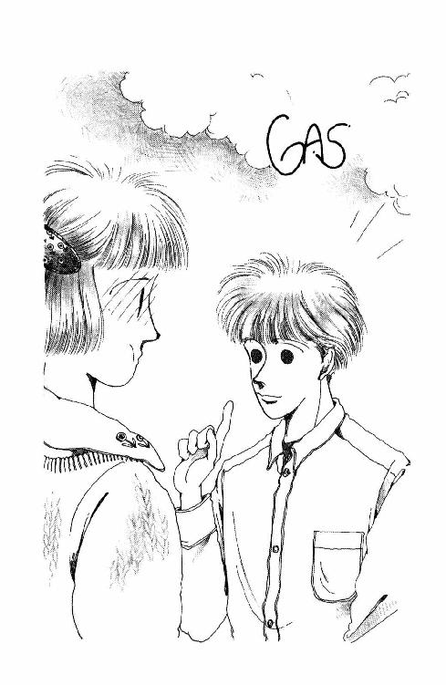
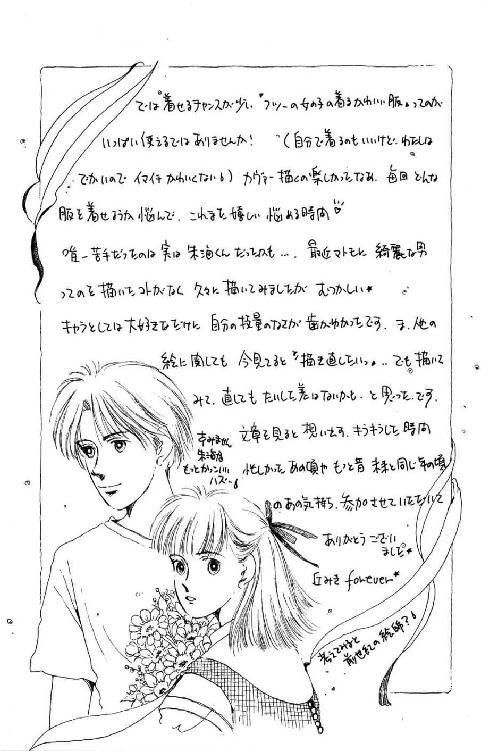

| 丘の家のミッキー９ | |
| 久美 沙織 | |
| (2016) | |
丘の家のミッキー９
きみといつまでもの巻
久美沙織
本作品の全部または一部を無断で複製、転載、配信、送信したり、ホームページ上に転載することを禁止します。また、本作品の内容を無断で改変、改ざん等を行うことも禁止します。
本作品購入時にご承諾いただいた規約により、有償・無償にかかわらず本作品を第三者に譲渡することはできません。
本作品を示すサムネイルなどのイメージ画像は、再ダウンロード時に予告なく変更される場合があります。
本作品は縦書きでレイアウトされています。
また、ご覧になるリーディングシステムにより、表示の差が認められることがあります。
イラスト／めるへんめーかー
１
「そんなに心配することはないさ」
と、朱海さんは言った。
坂の上のあたしの家のほうを、みつめたまま。
五月の空は振袖模様。天色から水色までグラデーションしながら薄まった青が無色に近く輝き渡るあたりで、沈みかけの太陽を隠す雲のヴェールが、薔薇色系統の細かい絵柄になっていたりして。ライラックにオーキッド、鳩羽色・薄紅梅・牡丹色。岬の向こうの森や家並みは、もう金赤いブレードに縁取られてる。
森戸の海は、今頃きっと、一面夕焼け色になっているわね。
朱い海。
葉山のこの辺りでは、太陽は、山から昇って海に落ちる。海が朱くなるのは、だから夕方。だから朱色の海という名前をもらったあなたは、そうだわ、ちょうどこんな感じの時刻に、この世に生まれて来たんじゃないかしら。
今は朱海さんの時。晴れさえすれば、一日一回は訪れるあなたの時間。
さすがに、素敵。なんとも似合う。
あたしは思わず見惚れてしまうの。
砂浜で揉み合った名残でまだ少しクシャクシャした髪が空に透けて、キラキラした自然のティアラになっている。まつげの先も赤く染まって。すーっと伸びた鼻の稜線、キュッと引き締まった唇。どこにも無駄がない。傷も歪みもない。いくら見てても飽きないわ。
どうして同じ人間なのに、こんなにキレイな顔があるんだろう。未だに時々不思議になる。
そんなキレイなひとと、こうして、肩を並べてゆっくりゆっくり歩いてるなんて......ほんとにこれは現実なのかしら？
なんて。
ぼーっとしてたのよね。思わず返事が遅れてしまったの。
足を止めた朱海さんに、顔をのぞきこまれてることに気がついてギクッとした。
「ねぇ。いいかい、未来ちゃん。後ろめたいことなんて、なんにもないだろ？」
「は？」
後ろめたいこと？
「だからなんにも心配することなんかない。けれど、ともかく、ぼくはまず謝っちゃうつもりだよ。妙な噂を流されたのは事実だし。それで、きみのお父さんがイヤな思いをしたことは確かなんだからね」
あ。そうだったのか。
さっきから何だかやけに難しいお顔をなさっていると思ったら。
「す......すみません......」
あたしは唇を嚙んだ。
朱海さんと二人で歩くなんて、あんまり久しぶりであんまり嬉しかったから、つい『なんのために』歩いてるんだったかを忘れて浮かれてしまっていたのだけど。
思い出したら、とたんに気が重くなってきた。
心配することなんかなんにもないって言われたってことは、朱海さんはあたしが心配してるって思ってたってことで、心配して当然なのだった。まるで心配なんかしてなかったおのれの迂闊さ鈍感さ逃避加減が思い知られる。
謝る。パパに。
ああ。そうよね。
でも、どうして、謝らなくちゃならないの？
頭にくるって言うよりね、パパ、あたし、悲しいわ。
ひとを好きになるのは、そんなにいけないことなの？ 好きなひとのそばにいたいと思ったり、逢いたいと思ったりすることって、そんなに不良？
少し大袈裟すぎると思うの。皇室のお后さまの候補にでもなるようなひとならともかく、あたしなんて、ただのつまんない普通の女の子よ。ガラスのケースの中にしっかり隠しておかなきゃならないほどのお姫さまじゃない。
それに、あたし。確かに、典型的華雅エンヌだった頃のあたしに比べれば、ずいぶんさばけた性格になってしまいはしたけれど。だからといって、すさんでしまったとは思わない。もしもあたしが、今すぐ家を捨てて出て行きますとか、もう学校なんてやめちゃいますからとか、パパを捨てて朱海さんを選びますとか、そんな過激なことを言ってるのだとしたら、そりゃもう叱られて怒鳴られて大反対されて、厳重に隔離されて座敷牢に閉じ込められてもしようがないかもしれないけれど。そんなつもり、ないったら。ちゃんと真面目に勉強するし、いい子にするわ。
根っこの根っこが、あたし、ちゃんと真面目だもん。倫理や常識に悖ることなんて、なにひとつ考えていないわ。例えば......そう、桐村さんみたいに、何もかも投げ出して愛に生きちゃうなんてことは......スゴイなぁとは思うけど。あたしにはできない。憧れないでもないけれど。それはたぶん、けっして自分にはできないことだから。
クスン。あんまりギュウギュウいじめないでほしい。
こういう時にねぇ。ひとを恨んじゃいけないとは思うんだけど。心弱いあたしはやっぱりひとのせいにしてしまうわ。こだわっちゃうわ。合唱団の山田さん。どうしてわざわざ他人の家庭の平和を脅かすようなこと言いに来たりしてくれちゃったわけ？ おせっかい。お下劣よ。悪趣味よ。
そりゃあ、李下（註１）に冠を正さずってこともある。よりにもよって、パパたちがいない時に、変なひとに変な尻尾をつかまれちゃったあたしも悪い。だけど。あんまりよ。
ああ、どうして。どうしてわかってくれないんだろう。
あたしはいい。あたしは我慢するけど。
朱海さんがかわいそうだ。
男のひとが女の子の父親と正面切って対決しなきゃならないのは、普通、結婚の申し込みとか、そういう時でしょ。時々逢ったり、いっしょにヨットに乗ったりするなんて程度のことにまでいちいち承諾を得なきゃならないなんてめんどくさい女の子、他にいる？
ああ、申し訳ない。いたたまれない。
朱海さんはおとなだから、パパのことを好きだって思っていてくれるから、それでもこうしてわざわざ出向いて来てくださる。おバカな親子喧嘩の仲裁を買って出てくださるけど。
ほんとうは呆れてるんじゃないかしら。なんて情けない親子だって思ってるんじゃないかしら。
かりそめにもおとななんだから、パパ。朱海さんより、もっと寛大であってほしいわ。あたしたちの気持ち、汲んでくれてもいいと思う。板挟みになってるかわいそうな娘を、これ以上悩ませないでよ。
パパはただ、あたしを自分の思い通りにしておきたいだけよッ！
思えば小学生の頃かな、お正月に長野のおじさんたちがいらした時、酔っぱらって言ってたね。未来のムコは、将来パパが見つけて連れてくるって。その時も、こどもながらあたし目の前が真っ暗になってしまったわ。
まぁもっとも、それは、パパがいつも連れてくるひとっていうのは、会社のひとでオジサンばっかりで、しかもたいがい酔っぱらいで、ひとりとしてあたしの目に王子さまのように見えはしなかったから、だったからなんだけど。そうして、その頃あたしはよその男のひとなんてひとりも知らなくて、テレビとかに出てくる男のひともむさ苦しかったり乱暴だったりみんな汚らわしく思えてしようがなくて、好きになるのは美しい女性ばかりだったからだったりもしたけれど。
あれは、まさか本気だったんじゃないでしょうね。未だに目がさめてないなんてこと、ないわよねぇ。
わかって、パパ。あきらめて。明治時代じゃないんだから。あたしはあたしなのよ。いくらひとりっ子で、パパにとってたったひとりの大切な子供だからって。思い通りにしようとしないで。あたしにとっては、たったひとりのあたしなのよ。
あっ、そうだ！
考えてみれば、もともと朱海さんをウチに連れて来たのはパパじゃないの。あらやだ。パパが『見つけて』来たひとだったんだわ。ううっ......そうよ、思えば、あたしは最初、朱海さんなんて好きじゃなかったんだから。バイクなんか乗る不良のひとだって思ったんだから。それをパパが無理やりおともだちにさせたようなもので......。
自分がやったことのフォローくらいしてよね！
いっそ。
ああ。いっそ、朱海さんがもっと強引なひとだったら。例えばあの洋太郎さんみたいに、図図しいほど行動的に、迷うヒマもない勢いであたしを引っ張ってってくれるひとだったら......。
「じゃあ」
低い声で言われて、ドキッとした。
一瞬、頭の中で考えてたこと読まれてしまったんじゃないかとうろたえたんだけど。
いつの間にか、玄関の前までついてる。
朱海さんは、あたしの髪をちょっと撫でつけてくれてから、クスッと笑った。
「なに悲壮な顔しているの。なんだか討ち入りでもするみたいだね」
「......ごめんなさい......」
さっきは『すみません』で今度は『ごめんなさい』。謝ってばっかりいる自分が悔しくて、目のあたりがじわっとした。
何て勝手な、恩知らずな未来。
朱海さんは立派よ。充分行動的よ。
こうしてちゃんと、送ってくれて、あのめんどくさいパパにことを分けて話してくれようなんて。なまじのアクションより、衝動的な情熱より、よっぽど勇気と根性がいることじゃないの。
「いや。こっちこそ。もっと早く来れば良かった。未来ちゃんがひとりで困ってるだろうなとは思ってたんだけど。うちのほうもちょっといろいろあってね。つい、タイミングを逃しちゃって」
「え？」
『うちのほうもいろいろ』って......ご家族がどうかしたんだろうか。それとも、香道のほうでなにか不都合なことでも？
思わず聞き返しかけた時、朱海さんの手がさりげなくドアを開けた。
「こんにちは！」
「あっ......た、ただいまぁっ！」
せいいっぱい元気に、あたしは言った。
靴がない、だからパパはまだ帰ってないってこと、とっさにわかったし。
「遅くなってごめん。あのね、朱海さんが来てくれたの。あがっていただいていい？」
「あらまぁ。どうぞどうぞ」
スリッパを鳴らしながら出てきたママが、あわててエプロンを外した。
「おしばらくねぇ。お元気でした？」
「はい、おかげさまで。お邪魔します」
こういう時、ほんとうに感心するわ。
ママの目をまっすぐ見てにっこり笑うところとか。サッと靴を脱ぐ所作とか。朱海さんはサラッと自然で、それでいて堂々としていて、見ていて安心なの。
あたしなんか、よそさまのお宅にうかがった時って、どうしてもコチコチになっちゃう。何度も行ってるトコの家とかでも、こと玄関からお家に入る瞬間に関しては、ついつい緊張しちゃうんだ。きちんとしなきゃって思うあまり、おどおどしちゃう。
例えば靴はまっすぐに脱いでおいて、上がってから素早くしゃがんで反対向きにしなきゃと思うんだけど、時によっては、あるじゃない？ そこにすでに脱いであるお家のかたがたの靴が全部、内側向いてることが。そういう時あえてひとり外向きにこだわるのって、なんだかイヤミだし、みなさんがたのお靴まで直したりすると、ほとんど差し出がましいし。
杉丸ン家みたいに、框のところがやたらに高いのも困るのよ。あたし腕短いから、思いきり伸ばしても自分の靴まで手が届かなくって、ほとんど落っこちそうになってやっとどうにか向き変えるんだけど、その頃には重心がどんどんどんどん下がってて、元の姿勢に戻ろうとすると膝の下の玄関マットがずるずる滑ってきて、しまいにきゃああ！ って足をバタバタさせちゃったりとか......ああ、思い出すだけで真っ赤だわ。
ともかく。
朱海さんはそんなこと全然気にしてないみたい。スッ、スッと通過しちゃって、いつの間にか居間に納まってる。
これも難しいのよ。上座とか下座とか、お父さんの席とか、クッションがあるとことかないとことか。どこに座るのがエチケット的に正しいか、あたしだったら思わずキョロキョロしちゃったりグズグズそこらに突っ立ってたりしちゃう。なのに、朱海さん、まるで迷いもせずに座るところ決めちゃってる。窓に近いソファの部屋の奥側。はっきりいって上席よね。それでいてけっして礼儀知らずに見えないんだから大したものだ。やっぱりお育ちがいいんだなぁ。
あ。それよりあたしは。わぁん、いったい、どこに座ったものなんだろう？
朱海さんの、と、隣っていうのはなんか恥ずかしいし......向かい合わせっていうのも、なんだか変だし......。
「お茶かしら？」
ママは膝をついた。ウチの居間は和洋折衷で、ソファも低いし絨毯敷いてあるから、床に直接座ったりしても変じゃないの。
「ちょっと未来。何をウロチョロしてるの」
「......えっと......だから」
「カップ用意して。ねぇ、コーヒー？ 紅茶？ あ、そうだわ。うちはもうすぐ御飯なんだけど。いっしょに召し上がる？ 竹の子御飯なんかしてみたんだけど」
「突然うかがってすみません」
と、朱海さん。
「実は。ちょっと弁明をしに来たんですが。お夕飯は、おじさんが帰ってからですか？」
「べんめい......？」
ママは頰に手を当てたけど、すぐに、ふうっと息を吐いた。
「なにやら物騒なお話なの？」
「いいえ、まさか」
「じゃあ。とりあえず食べない？ 主人は、今日は遅いらしいの。だから、ふたりで先に食べちゃおうと思ってたのよ。......ちょっと未来」
わぁん。だって。
最初は、お盆だして、サイドボードのとこに行って、紅茶のカップとコーヒーのカップの、どっちでも取れるように手を伸ばしたのよ。だけど、御飯なんて話が出たから、じゃあいらないんだと思ってあわててひっこめたでしょ。そしたら、『弁明』とかいう話題になったから、これはちゃんといっしょに、せめて朱海さんが話してる横で神妙にしてるべきだと思って、遠回りに窓際からソファのほうに戻りかけたのに。いきなり、『とりあえず食べない？』で、ママ立ち上がるから。膝がくだけちゃった。
結果として、なぜかお盆を持ったまま、居間の中をあっちウロウロこっちウロウロして、しまいにはズッコケちゃったけど......何もわざとギャグを狙ったわけじゃないんだから。
失地回復のために、御飯の支度は積極的に手伝ったわ。
蕗とにんじんとじゃがいもをつけ合わせた油揚げの袋煮に、菜の花のおひたし、じゃこ昆布、わかめと湯葉のお吸物。
幸い、多めに作ってあったみたいで、パパの分を余しても足りはしたけど。
「なんだか精進料理みたい。若い男性向きの献立じゃないわねぇ。お肉料理じゃなくって、ごめんなさいね」
お客さま用のあんまり大きくないお茶碗にせいいっぱいたっぷり竹の子御飯を盛りつけながら、ママが言った。
「シチューが冷凍してあるけど、食べる？」
「いえ、こっちのほうが嬉しいです。春らしくて」
「御飯はいっぱいあるから、お代わりしてね」
「はーい」
「じゃあ、どうぞ。ほら、未来も座って」
「いただきまーす」
いったん座って、お箸と茶碗を取りあげたのに、ママはまたアッと思いついたように立ち上がって、冷蔵庫を搔き回す。お肉の佃煮とかお豆とかお茄子の漬物とかを出す。しまいには昨夜の残りの春巻を発見して、電子レンジに入れたりして、落ち着かない。
そんなにバタバタしなくたっていいのにって、はらはらしてたら。
朱海さんは、お吸物を一口飲んで、
「あ、おいしい」
と言った。
「まぁ」
ママが振り向いてにっこりする。
「嬉しいわ。ウチのひとたちなんて、なんにも言ってくれないのよ」
「澄ましはなかなか作ってくれなくて。親父が味噌汁がないとダメなほうだから」
「まぁ、そう」
「湯葉とか、ぼくはほんとに好きなんですけどねぇ。なかなか」
「湯葉？ そんなのいくらでもあるわよ。どんどん食べて！」
ママは流しの横の引き出しから、乾燥湯葉のま新しいパックを出して見せた。
「じゃあ、この次はあさり大根をご馳走するわ」
「あさり大根」
「お大根、風呂吹きにするよりもっとごろんごろんに切って、うーんと時間をかけてたっぷり味を含めておいて、食べる直前にあさりも入れるの。ふたをしてあさりが開いたらできあがり。すごーく美味しいのよ」
朱海さんはゴクッと喉を鳴らした。
「た......食べたい」
「いいわよぉ。だから、またいらっしゃい」
電子レンジがチン！ って言った。
温まった春巻のお皿を出しながら、ママはクスクス笑った。
「意外ねぇ。朱海くんってずいぶん爺臭いのね」
「爺臭い......」
「あーらごめんなさい。さぁ、どうぞどうぞ、どんどん食べて。ほらお代わりはまだなの？ わたしが立ってるうちにしてくれると助かるんだけど」
ママはわざと意地悪を言う。それでいて、ことのついでみたいに『またいらっしゃい』なんて言ってたね。
嬉しい。
ママは朱海さんのことを変にお客さま扱いしていない。こうして、ここにいて、いっしょに御飯食べるのがあたりまえみたいにさりげなく振る舞ってくれてる。
あたりまえ。
蕗の筋が、奥歯のどこかにひっかかっちゃった。なかなか取れない。
あたりまえって、なんて難しいことなんだろう。何があたりまえで何があたりまえじゃないのかは、考えて決めることじゃない。ただ、そう感じるだけ。
感じかたが同じ同士なら、なんでもすぐにうまくいくのに。
その時、ちょうど朱海さんが『お願いします』ってさしだしたお茶碗を見て、ああ同じだって思ったのよね。
軽くひと口ぶんまとまって残された御飯。そこ以外はお茶碗全体がきれいに空っぽ。
ああ、良かった。同じで。
時々ね、いるでしょう。ごちそうさまって言った時にも、お茶碗のあちこちに御飯つぶがこびりついたまんまのひと。あれ、あたし抵抗あるのよね。『正しくない』とか『もったいない、お百姓さんに申し訳ない』とかまでは思わないけど。なんとなく『きれいじゃない』。いかにもお箸の使いかたがヘタだって感じがする。
お代わりする時にすっからかんにしちゃうのも『あれっ？』って思うわけ。ウチでは、お代わりの時は必ずひと口残してさし出すことになってるから。どういう意味があるのかはよくわからない、ただの習慣なんだけど......林間学校とかの合宿生活で、お代わり係になった時、からっぽのお茶碗出されて、なんとなーく違うなぁって感じたことが何度もあった。
どうでもいいようなつまんないことだけど。十五年間かかって体にしみついちゃったクセみたいなものって、なかなか直らないのよねぇ。
「どうかした？」
お茶碗受け取りながら、朱海さんがこっちを見た。
「う、なんでもない」
袋煮は大きくてひと口に入らない。どうしようか迷ったけど、いつもの通り、サッと食い千切っちゃって、残りは手にしたままの御飯茶碗にサッと預けた。食べかけのものお皿に戻すのってきれいじゃないでしょ。お皿の上でほぐしちゃうと、中身がこぼれちゃうし、せっかく含んでるお汁も無駄になっちゃうから。
でもね。
あたし、よくないクセもいっぱいあるんだよね。御飯食べる時。迷い箸は絶対しないけど、その代わりどれにしようかなって思ってる時、ふと気がつくと、お箸の先で唇をちょんちょんちょんって叩いちゃってる。そこが汚くなるのきらいだから、つい、何かのついでにねぶり箸しちゃったり。はっきり言って、持ち方も正しくない。お箸の間に中指入れるっていうのが、どうもうまくいかない。つい鉛筆式に握っちゃうのよね。
それに比べると朱海さんのお箸さばきっていうのは......上手だなぁ。
チラチラ横目で見てたら、また目があってしまった。
怪訝そうな顔されて、あわててサッと顔伏せたけど。
まるで先端の一センチくらいしか使ってないみたい。あれで、どうして御飯を団体さんで持ち上げられるんだろう？ 謎だ。
唸りながら、先端一センチ技に果敢に挑戦していると。
「お母さまがたは、お元気？」
急にママが言い出した。あんまりシーンとしてたから、気を利かせてくれたのかもしれない。
「ええ。おかげさまで」
と、朱海さん。
「ただ......このところちょっと忙しくしてます」
「あら。どうして？」
「ええ。まぁ、いろいろと」
食べながらだから短くなったので、わざともったいつけてるわけじゃないんだろうけど。
そこにできた間のおかげで、あたしピンと来たの。
さっき、玄関の前で言い掛けたこと。『うちのほうでもいろいろ』のこと。
急いで口の中のものを飲み込んで、聞いてみたわ。
「お家で、何かあったの？」
「いや。......別にたいしたことじゃないから。心配しないで」
おひたしの最後のひと塊を口にして、朱海さんは、ふっ、と微笑んだ。
でも、それはあんまり当てにならない笑いかただったんだ。まるで、転んで膝を擦り剝いてしまったこどもが強がってみせる時のような。何かを隠してこわばった顔のまま、唇だけ笑いのかたちにしてみせたような。
ママとふたりで手早くお茶碗を洗ってしまう間、朱海さんは久しぶりだからって言って、羅士丸の相手をしていてくれた。九割かた終わったところで、ママが、もういいから朱海さんを呼んでらっしゃい、って言った。
それであたしは庭に出た。
朱海さんはちょっとだけ噓つきだった。ほんといって、まるきり羅士丸のことなんて構ってなかったもの。少しは遊んであげてくれたのかもしれないけど、少なくともその時は。
羅士丸は落ち着かなさそうに、ハウスの周りを（註２）、繫がれた綱を半径にした大きな半円を描きながらうろうろ歩きまわっていた。あたしを見かけると、たちまち千切れそうに尻尾をふりながらクンクン鼻を鳴らした。ご近所迷惑だから、夜はめったなことがない限り吠えないように躾けてある。冷たく濡れた鼻面をそっと撫でてやりながら、庭中を目で探した。
最初、どこにいるのかわからなかった。
朱海さんは、こっちに背を向けて、ハーバーに降りる階段のてっぺんのところに座ってた。もうあたりがすっかり暗かった。じっと黙って海を見下ろしているような背中は、庭木や草のシルエットの中に溶け込んでしまいそうだった。
「......どうしたの？」
思わず低く声をかけると、一瞬遅れて振り返った。
「ああ。ごめん」
立ち上がる。コットン・パンツのお尻をパンパン叩く。
けれど、いつもの朱海さんの動作より、やけに重たく、だるそうだった。まだ何か別のことを考えて心ここにあらずな感じに見えた。だからあたしはそっと聞いてみたのよ。
「香織さんがどうかしたの？」
かなり、深刻な顔をしてたんだと思う。
けれどそれは、朱海さんが当惑気にあたしを見て、それから急にぷーっと吹き出してくれたおかげで台無しになった。それでも良いのよ。笑われて、思わずホッとしちゃったわ。
さっき、食卓で『心配ないから』って話をそらしてからの朱海さんは、なんだかとりつくしまがなかった。ほかほか湯気のたってる御飯をかきこんでいても、頰のあたりが白っぽく乾いた感じに見えてたから。
「あのひとは今絶好調だよ」
まだどこかクスクスしながら、朱海さんは言った。
「なんとかっていう女のひと向けの雑誌に連載もらってね。テレビ業界を舞台にしてね、性格の悪い後輩にいびられながらいっしょうけんめい働いている若い女性アナウンサーの話かなんか書いてるらしい」
「じゃあ......香織さまじゃないなら、お家で何かあったの？」
「うん......」
朱海さんは両手をズボンのポケットに突っ込んだ。
「まだ、話せないんだ」
「朱海さん」
思わず足を踏んばってしまったけど、だめだめ、って首を振られてしまった。
「そのうち話すよ。香織ちゃんのことでもないし、うららのことでもない。直接は、って意味だけど。ぼく自身まだ、どう考えていいかよくわからないんだ」
そう言って、朱海さんはにこっと笑ってみせた。その顔は、いつもの── 何も悩みなんかない朱海さんの笑顔にすごく近くて、でもやっぱりどこか全然違うものだったから、あたしの胸の奥はチクンと痛んだ。
何でも思っていることをみんな、あけすけに話すだけが能じゃない。
そうは思うけど。
どう見ても何か普通じゃない様子なのに、相談もしてもらえないのは寂しかった。あたしの方はって言うと、朱海さんに何の関係も責任もないことでも、すぐにベラベラしゃべってしまうのに。何でも全部、打ち明けてしまうのに。
「いいけど」
玄関に向けて歩きだしながら、ああ、これじゃまるで拗ねてるみたいだって、自分でちゃんとわかってた。朱海さんが言う必要がないって決めて黙ってることにも好奇心抑えられないわがまま娘みたいだって。
ついて来てくれてるかどうか、まともに振り返って見ることができなかった。立ち止まって右肩のところまで首を回して目を上げないで待ってると、反対側の左の肩に、ポンと手を置かれた。
ごめんね、にも、ダダをこねないで、にも受け取れた。どっちかって言うと、言うまでもなく、後のほうだってわかってたけど、あえて最初のほうにこだわってる自分に気がついてあたしは悲しくなった。
つまり。あたしは棚あげしようとしてるのに違いないのよ。あたしの問題を。朱海さんの悩みらしきものを考えることで。朱海さんがわざわざウチまで来てくれたのにはちゃんと別の理由があるのに、とっさに関係ない話に興味を持って、そこから逃げようとしてる。
だいたいそうなのよ。あたし。
試験の前になると、いきなり読書家になってしまう。学校帰りにふらーっと本屋さんに立ち寄ってしまって、文庫本で六百円くらいして（註３）しかも上下二巻本になってるヤツとかに、つい手が伸びてしまう。ひきだしの中を整頓しはじめて、ふと気がつくと、状差しから本棚から全部とことん片づけてしまってたりするのも、たいがい『どうしてもやらなきゃならない宿題』の期限が、明日とか、明後日とか、すぐそこまで迫ってる時だ。
イヤなことはなるべく後回しにしてしまおうって、悪いクセがついてるのね。
「そのうちにね」
耳に、朱海さんの囁きが届いた。
それでもまだ、『何か水臭いなぁ』って感じちゃって、あたしはますます気が滅入った。
パパはなかなか帰ってこなかった。
長い時間、あたしはどんどん気が重くなるばっかりだったの。
ママと朱海さんは、表面上は何気なく、御飯のこととか森戸のこととか、どうでもいいような話を続けてたけど。
三人が三人とも、時々サッと目をあげて時計を見たりして。しかも、そうやって時間を気にしてることを、残りの二人に気付かれはしなかったかドギマギしてるみたいで。
「ねぇ。お家のほうは......？」
言い終わらないうちに、朱海さんが、
「大丈夫です」
って答えて、そお、ってママが黙る。
朱海さんがウチに来てることは、うららが言ってくれてるだろうけど。もうちょっと遅い。
男のひとで、しかも高校三年生にもなってるひとだから、門限なんてないのかもしれないけど。何か問題があるらしい西在家さん家で、ほんとうに大丈夫なのかな、なんてあたしは思っちゃうから、どうも落ち着かない。
九時からはテレビをつけてニュースを見た。どこかで火事があったとかで、ママは三番町にいたころ、道路をへだてて向かい側の百メートルくらい先でボヤが起きた時のお得意の話をはじめ、朱海さんはいっしょうけんめい身を乗り出して聞いてあげてくれてたけど。
あたしは、そのことはよく知ってたし、もう三十回は聞いた話でママが次に何を言うかまで全部予想できちゃうくらいだったから、すっかり気がそがれてしまって。
今日じゃなくにしてもらえば良かったなぁ。まさかこんなにパパ遅いとは思わなかった。よりによって今日遅いなんて、いかにもパパらしい。まるで野性の直感で避けたみたいだ。
今、朱海さんが帰っちゃってくれれば。その後パパが帰ってくれば。
最近口をきかないあたしとは、当然、口をきかないわけだけど。
「今日朱海くん、ウチで御飯食べたのよ」
ってママが言うだろう。
パパはエッ、って顔するだろう。もしかすると、すごく怒るかもしれない。あたしに、ちょっとここに来い！ とか言って、正座でもさせて、また何かとんでもなく時代がかったお小言の十や百、言い出すかもしれない。
けれど、少なくともその場に朱海さんはいなくてすむ。
ひとりで怒られることには慣れてるわ。けれど、あの、理屈もなんにもなく、ただ怒鳴り散らすパパを朱海さんには見せたくないし......大体、こっちがふたりになっちゃったら、パパの常軌の逸しかたも二倍に、いや二乗くらいに、なっちゃわないとも限らない。
なんで来てもらっちゃったんだろう。
なんでちゃんと話せばわかってもらえるなんて思ったんだろう。
「......その時、突然大きなタンスが降りてきたの！」
ママは両手を振り回しながらしゃべり続けてる。
「なにごとかと思ってみれば、上の階の柳田さんの奥さんが、まぁ天井まであるような桐のタンスをねぇ、ひとりで抱えて」
「それは火事場のなんとかですねぇ」
と朱海さん。ここでは、ママの話を聞いたひとの十人中九人までが、そう言うのよね。
ママとだったら、うまくいくのに。
クッションの縁の繻子の房をひねくりながら、あたしは目だけテレビに向けてせっせと考えた。
わからず屋のパパなんて、こっちに置いておいて。
パパが聞きたがらないことはパパの耳に入れないように、黙ってあたしはあたしで、あたしが正しいと思うことしてれば良かったんじゃないだろうか。そうしてその結果が、パパが心配するようなものでないことを、実際に示してみることぐらいしか、あの横暴に対抗する術はないんじゃあ......。
画面では二台の車が、ヨーロッパらしい風景の雪の道を、まるでじゃれあう二匹の子犬のように思う存分走っていく。
突然羨ましさにグッと喉がつまった。
あたしはただ、あの車のように、子犬のように、無邪気にしていたいのに。
ピンポーン！
「パパだ！」
あたしが叫ぶのと、ママが立ち上がるのと、朱海さんが腰を浮かすのが同時だった。
歩きながら、ママがあたしの顔を見た。あたしは朱海さんに座ってて、と手と目で言って、後についていった。
「ほっほぉー」
バタン！ とドアを閉めながら、パパが威張って言うのが聞こえた。そして次に、バスン、ブッ、ブブッ！ ......こ、この匂い......。
「ああもう！」
ママが両手を腰にあてて顔をのけ反らせた。
「どうして外でしてらっしゃらないんですっ！」
「外でなんかできるか。わしは紳士なのだ」
そう言って、靴を脱ぐためにかがみながらも、パパは一瞬動作を止めて、ウムッ、と気張った。ボン！ とほとんど爆発するような音がした。間違いなく居間にも聞こえたはずよ。
ウッ。お酒を飲んで来た時はひときわひどい。
「あなたちょっと」
よろけながら上がってくるパパに手を貸しながら、ママがその耳元に何か短く囁いた。
途端にパパのテラテラ脂ぎった赤い顔、血走って飛び出してるみたいな目が、廊下の壁にへばりつくようにして匂い攻撃からせいいっぱい遠ざかっていたあたしに、ピタッとあった。
「......なに......？」
ママがまた何か内緒話をして、それからパパの肩のあたりを、ぱんぱん叩いて離れた。
北京原人型の、顎を下げて肩をひいてガニ股になったポーズのまま、パパは硬直した。お酒の効いてた顔が一瞬サーッと白くなって、ギョロギョロした目が真ん丸くなって......それからまたカーッと耳まで赤くなった。
「そっ......そうならそうとっっ！」
とかなんとか、意味のないことを早口に言ったかと思うと、パパはダッと廊下の向こうへ駆け出した。
「あなた！」
「便所ッ！」
走りながらパパはわめいた。そして、トイレの戸を閉めようとする時、顔だけだして、さささっ、とママを手招きした。
「なんです？」
「風呂だ、風呂だ。風呂はわいてるか？」
「まだわかしてませんよ」
「じゃ、シャワーでいい。着替えを頼む！」
バタン！
しぃん。一瞬間を置いて。
ごおおおおおお。
水の音がした。まるで、つい今のこのやりとりを押し流そうとするかのように。
ママがあたしを見、あたしがママを見上げた。
ママが『さっぱりわからない』というみたいに頭を振った。もしかすると、もう少しはっきり『困ったひとだこと』とかなんとかいう意味だったのかもしれないけど。
『ベンジョ』だなんて。もう。やだ。下品。
それからあたしたちは居間に戻った。
音量を絞ったテレビの前で、朱海さんが立ち上がってた。
「ごめんなさいねぇ」
座って座って、とママが合図をする。
「着替えないうちは出てこないつもりみたい。だいたい、ホントに出てくるつもりがあるのかどうか......もう少し待ってやって。......そうそう、お茶、入れ換えましょうね」
「はぁ。すみません」
両手を足の間に垂らして茫然と目をそらした朱海さんが、急にクスッと笑った。
「なに？」
「いや。あのへ長調」
へ長調って......あ。『へ』。

「家なんだねぇ。いやぁ。帰ってきたぞぉって、宣言してるみたいでおっかしかった。おじさんらしいよ」
らしいか何か知らないけど。何が『紳士』よ。
「恥ずかしいわ。よくもあんなにバスンバスンできるものだわ」
「しようがないだろ。しないと毒なんだから」
「だって」
やだわ。朱海さんもするのかしら......あ、あんなに高らかに堂々と......。そりゃ、いつかどっかではしなきゃならないだろうけど。
変な想像に思わず顔を赤らめてると。
「するよ、ぼくだって」
断定されてしまった。
「でもォ」
「未来ちゃんだってするでしょ」
「あっ、あんなにはっ......！」
「音たてないほうが臭いんだぜ」
「朱海さんッ！」
もぉっ！ 何でそんな話しなきゃならないのよッ!?
思い切りにらんだのに。
「おじさんは幸せなひとだ」
朱海さんは腕なんか組んでニヤニヤしながら、ひとりでうなずいてた。
「やっぱりぼくはおじさん、好きだな」
パパはもう御飯は食べて来たんだそうだ。アフター・シャワーのサッパリした顔、パジャマの上にガウンをひっかけた格好で、ブランデーグラス片手にどっかり座りこんで。
にこにこ朱海さんに顔を向けたの。
「しばらくぶりだねぇ。どう、元気にしてた？」
あたしあやうく飲んでたお紅茶を吹いちゃうとこだったわ。なのに、朱海さんは、平然とまっすぐパパを見つめてね。
「はい。おじさんもお元気そうですね」
なんて、すっかり寛いじゃってるの。
何秒間かは、思わず拍子抜けして、胸を撫でおろしてしまったけど。すぐにカッと頭に来た。もうほとんど叫びたかったわ。
ずるい！ パパ、ずるい！
これが『逢うんじゃない』『ヨットもやめろ』って言ったのと同じひと？
『外では紳士』には笑っちゃったけど。それって、ウチではどれだけ横暴勝手をやってても、よそのひとがいるところでは、たちまち良きパパ話のわかるいい大人の顔をしちゃうって意味だったわけ？ そんなのって、そんなのって、ないじゃないの！
ぶるぶる震える拳を必死でこらえながらいくらにらんでも、パパはあたしのことなんてまるで目に入ってないみたい。
「どこの大学に行くんだ。もう決めた？」
「ええ。候補は。まだひとつに絞れていないんですが」
「偉い！」
わははははは、とパパは必要以上に声をあげて笑った。
「わしはどうも、あの、何校も何校も受験するのは理解できん。まるで入れてくれるならどこでもいいと言わんばかりでな。どこでもいいなら、大学なんぞ行かなきゃいいんだ」
「まぁ。行ってから、何をやりたいか決めるひともいますから」
「バカを言え。そんなやつぁ、いつまでたったってなんにも決めやせん。で。なんなんだ。どこ受けるんだ？」
「ちょっとパパ！ やめてよ」
そんなひとのプライバシーを、って引き止めたら。
ずるーっと、パパがこっちを見た。あたし、顔がひきつってしまったと思う。
その目。その何かを諦めた死んだお魚のような目。
うって変わって雰囲気が悪くなってしまった。メッキが剝げたのよ。楽しい団欒なんてはじめからウソだったんだってことが、すっかりバレてしまった。
「おじさん」
朱海さんが低く言って、床に滑り降りた。あたしもあわてて、同じように床に座り直した。
「すみませんでした。ほんとうに」
「何がだ」
ブランデーグラスを覗きこみながら、パパが聞いた。
「先日、おじさんたちが長野に行ってらっしゃる時のことです。ひとに誤解されるような行動を取ってしまったこと、未来ちゃんひとりいるこちらのお宅にお邪魔していたこと......そのことを今日まで謝りにこなかったことを......申し訳なく思ってます」
「......きみねぇ！」
目をあげたパパは、朱海さんが武士が首を差し出すような格好に畏まっているのに気がついて、ちょっとギョッとしたように口をつぐんだけど、すぐに立ち直った。
「ふん！ いったいなんのつもりだ？ そんなことされてわしが喜ぶとでも思ってるのか？」
「喜ぶ？」
「いらん。そんなことせんでいい」
「でも」
「帰りなさい！」
パパはまたそっぽを向いて、高々と足を組み、せっせとブランデーを啜った。
「ったく冗談じゃないよ。ひとバカにするにもほどがある。帰れ。帰ってくれと言うに。さっさと行け！」
あたしと朱海さんは、顔を見合わせた。
さっきの上機嫌が、たちまちこれ。いったい、何を怒ってるの？ わけがわかんない。
ママのほうも見たけど、黙って肩をすくめてみせるばかり。
「......どういうことですか？」
朱海さんが言った。
「バカにしたつもりはありません。このままでは帰れません」
「そんなこともわからないのか」
パパはせかせか足を組み換え、両手にグラスを持ち替えた。
「いいか、イエモトくん、これはきみの問題ではないのだ。わしと娘の問題なのだ。他人のきみに口出ししてもらいたくない。そういうことだ。いたってシンプルだろう」
「それは......」
「口出しするなと言うんだ!!」
ばん！ とパパはグラスを持ったままの手を自分の腿に打ちつけた。それでブランデーが少しこぼれて、ママがあわててお台所に飛んで行った。
黙ってしまった朱海さん。一見静かな顔の、眉間に縦皺。
「未来」
あたしは顔をあげた。パパはそっぽを向いたまま、短く言った。
「帰ってもらいなさい」
ごくっと喉が鳴った。
ことばはなかなか出てこなかった。やっと出てきた時にも、われながらへろへろ頼りなかった。
「それは......あんまりでしょ」
パパの耳のあたりが、ぴくんとした。
「何があんまりだ。おまえは恥ずかしくないのか？ 家族の問題にひとを呼んでくるのが、おまえの頭にとってはあたりまえなことなのか？ それとも、援軍のないところでは、父親と面と向かって話をすることもできない意気地無しなのか」
「ちょっと待ってよ。あたしはこれまでにも何度もパパと話そうとしたわ。でも、パパがいつも......」
「パパがいつも？」
パパはゆっくりあたしに向き直った。
「わたしがいつも、なんだ」
「いつも......聞いてくれないから......」
言いながら、尻すぼまりになっちゃってたのは自分でもわかった。
ほんとにそう？ あたしは、そんなにちゃんと話そうとした？
心のどこかで、正直ものの誰かが、違う違うって言ってる。話そうとは思ってた。でも、あたしは話したくなかった。どうせ話したってしようがない、わかってもらえないんだから、言ったってしようがないって諦めていた。
「ふん！」
パパは鼻を鳴らした。
「ならば聞こう。聞くがね、その前に彼にはお引き取り願いたいね。家の恥をこれ以上さらしたくないからな」
戻ってきたママに泰然としてあたりを拭かせながら、パパはそっくり返った。
「わかりました。帰ります」
朱海さんが手をついてからだを持ち上げるのを見て、あたしの心臓はサァーッと冷たくなった。
罵られてもしようがないわ。あ、朱海さんが帰っちゃう、いなくなっちゃうと思ったとたん、死ぬほど心細くなってしまったのは事実なんだから。
だけど、朱海さんは、ゆっくりと椅子に座り直したんだ。
「けれど、......ぼくもせっかく来て、ずっとおじさんのお帰りを待ってたんですから、言うつもりだったことを言っていきます」
「な、なんだ？」
パパはますますそっくり返ろうとして、ガタン！ と膝のあたりを外してあわあわした。
「おじさんは未来ちゃんに、もうぼくと逢っちゃいけない、ヨットもやめてしまえっておっしゃったと聞いています。どうしてなんですか。その理由を聞かせてほしい。それがもし、ぼくを信用できなくなったという意味だったら、ぼくも関係ない顔はしてられません。なんとかもう一度、おじさんに見直してもらわないと困る」
どうにかバランスを取り戻したパパは、ムッと唇を突き出した。
「だから来たんです。何も親子喧嘩に割って入ろうと思ってたわけじゃない。最初にまず謝ったのは、とにかく、おじさんの気分を害したことだけは確かだろうと思ったからです。ぼく自身は、何も間違ったことはしていないつもりです」
「ったく......口先ばかり......」
パパが何かブツブツ言った。
「は？」
朱海さんが問い返すと、
「あのなぁ、イエモトくん」
パパは急に椅子を降りて、机を挟んで朱海さんの向かいになるところにあぐらをかいて座り込んだ。
「そんなら言うよ。わしはきみが嫌いじゃない。見損なったわけでもないんだ。しかしだ。だからといって、きみがうちの娘と、何をしでかしてくれても構わない、歓迎するという意味じゃあないんだ、これは。わかる？ わかるか？」
「ええと、あのう」
そのあんまり唐突な変化に、朱海さんが戸惑ってるうちに、パパはグシュグシュ鼻を鳴らしはじめた。
「きみはいい青年だ。それは知ってる。よーく知ってるよ。しかし、それとこれは別問題だよ。どうしてそれをわかってくれないかねぇ。いや、わからないわなぁ。きみも娘を持たない限り、わからんよ、ウン」
ガウンの袖口で目や鼻を拭って、パパは続けた。
「あきれるか。あきれてるかね。そうかもしれん。そうだろうよ。しかし、これがわしのしょーおじきな気持ちなのだ。なぁ、イエモトくん。きみはしっかりしてる。それに男だ。もうすぐ大学生にもなる。きみのご両親も、もうきみのことはいちいち心配せんだろう。きみの好きなようにしろと言ってくださるかもしれん。多少ハメを外しても、いちいちガタガタ言ったりはしないだろう。でなきゃ、まともな男にはなれんからな。しかし、女の子はそうじゃない。おまけにうちの子は、まだ、幼い」
「パパ！」
あたしは叫びかけたけど、ママに肩を押さえられちゃって、しようがなく黙った。
「早すぎるよ。未来にはまだ、やらなきゃならないことがたくさんある。道を過ってほしくないと思うのは当然じゃないかね？ なのに、たまに家にひとりで残したと思ったら、そのとたんにこれだ。まるで不倫ドラマにかぶれた主婦みたいに、コソコソ隠れて何かやっている。わしには何よりも、それが許せないんだよ。コソコソ隠れてっていうのがな」
「待ってよっ！ コ......コソコソなんてしてないじゃないの！」
ママの手を擦り抜けて、あたしは飛び出した。
あたしちゃんと言うつもりだった。朱海さんが来てくれたことも、それを山田さんが見て変に誤解したらしいことも、パパたちが帰って来たら、聞かれないうちにちゃんと説明するつもりだった。
なのに、ひとの顔を見るなり怒鳴りつけたのはパパじゃないの！
「言い訳するヒマもなしに怒られたけれど。腹が立ったから説明する気もなくしちゃったけれど。あたしだって、健全におおっぴらに堂々としていたいわ。何をするのでも、パパにもママにも何もかもみんな打ち明けて、がんばれよって言われたいの。やましいことするとか、コソコソするとかいうのは性格的に無理だって、どうしてわかってくれないの？ だけど、あたしはパパが思ってるほど子供じゃないし、どうもパパの好みからすると賛成されそうもないなと思えば、あえて黙ってることだってあるわ。心配かけたくないから、言わないだけよ。そしてあたしが何かやるのに『早すぎる』かどうかは、これは絶対にパパが決めることじゃないと思う！」
「にゃにぃ......！」
「考えてみてよ。ジュリエットなんか十四歳だったのよ。あたしより年下よ。だけど、出会ったその日や翌日には、もうあんなことやそんなこと、してたんだからッ！ あたしなんかオクテ中のオクテなんだからッ！」
「ジュ、ジュリエットがなんだ。あれは芝居だ！」
「でも」
頭にあったのは、ほんとうは桐村さんのこと。ジュリエットと同じくらいの年頃に同じような生き方をしてしまった、もっと近くにいるひとのこと。
「そのお芝居を見て、世界中のひとがみんな泣くわ。みんなわかるわ。みんな知ってるのよ。十四歳だって、命を賭けて恋することもあるって」
「い、命だと......？」
パパはグラッとよろけたけど、すぐに持ち直した。
「バカを言いなさいバカを！ パパはこんな思いをするために、今までおまえを育てたんじゃあない！」
「そうね。パパにとっては、これがはじめてかもしれないわ」
あたしは爪を立てて、掌を握りしめた。
「目論見と違うのは。全部好きなようにして来たものね。いつだってパパは支配者で、決定者だったわ。なんでもパパがいいと思うことを、あたしもママもいいと思うに決まってるって、勝手に思いこんでてね。あたしが大好きだった三番町のマンションを売っちゃう時にも、この家のハーバーに朱海さんたちを出入りさせることも、まるきり相談なしだったわ。ヨットや桟橋の修理にお金を出すことも、ダルメシアンを飼うことも、あの子にラッシーなんて平凡な名前をつけたことだって......どんな重大なことも、あたしたちがものすごく影響受けちゃうことでも、いつも全部ひとりで決めちゃって、文句あるわけないって態度取っていたわね。でも、いいわ。これまでのことはいいの。たとえ、ソロリティはおろか華雅学園にもいられなくなって、中三なんて大変な時期にいきなり転校しなきゃならなくなったとしても、それでどんなに泣いたりとまどったり、悔しい思いをしても、あたしはしっかり受け止めたつもりよ。こんな子でいてほしいってパパの思いに応えられるように、せいいっぱいいい子にして来たわ。だけど。だけどね！」
ずっと制服の上着の裾を押さえて、なんとかやめさせようとしていたママの手を、あたしはふり払った。
「いつまでもずっとそうしてはいないわ。自分のことは自分で決めたいわ。どうしてもそうしたくなったら、あたしがあたしの好きなようにするって本気で決めたら、誰にも止められないわよ。反対したって、無駄なんだから！」
家中が、急にシーンとなった。
ナマイキを言うんじゃないーッ！ って怒鳴られるかと覚悟していたのに。
パパはあんぐり口をあけて、はぷはぷ苦しそうに息をしていた。風邪薬のコマーシャルを高らかに歌うテレビを、ママがあわてて消した。
「み、未来、そ......そんなにわし......」
パパが気弱そうに何か言いかけた時。
「そっくり」
と、ひとこと朱海さんが言った。
「え？」
みんなが見ると、朱海さんはクスクス笑った。
「親子だなぁ。まるで同じなんだから」
「そ、そおか？」
「やだ。噓よ」
パパとあたしの声、重なった。
「ほんとにそうよ」
ママがため息まじりに立ち上がって、
「イヤになるほど似てるわね。誰がなんと言おうと聞く耳もたないなんて、自慢できることじゃないでしょ。お父さまのこと勝手だなんて、責められないんじゃない？」
う......。
けど。けど。けど。
あたしのは願望でパパのは実際で。
何も、あそこまで言うつもりはなかったのに。
「......わし、寝る」
突然、パパが立ち上がった。
思わず、逃げるのッ？ ってキッとにらんじゃったけど。
「なんかドッと疲れた。少し、寝ながら考えてみるわ」
へにゃ～って肩を落としながら、パパはあたしを見て、朱海さんを見て、もう一回あたしを見て、なんともなさけない笑顔を無理にこしらえて見せてくれた。
「なぁ未来。頼むから、あんまり、寿命を縮めないでくれ。な？ その、ジュリエットの真似なんてものはだ。求めてするもんじゃないと思うんだが」
『ジュリエット』が、正確に何を指してるのか......悲劇ってことか、早熟ってことか、それともカケオチとかそういうことを言いたいのかどうか、よくわからなかったけど。
まだムカッ腹が納まってなかったから、言っちゃったの、つい。
「理解ない親に無下に反対されない限り、ジュリエットにはなれないわ。絶対」
って、イヤミなことを。
「なるほど。そりゃそうだな」
パパは皮肉っぽく口を歪めながら、耳を搔いた。
「わかったよ。撤回する。前言取り消し」
「......え？」
「ヨットでもなんでも、好きにするがいい」
「え！」
思わずきゃあっ、って言いそうになったのに。
「ただしだ」
パジャマの足を踏ん張りながら、パパはまっすぐあたしを見た。
「いちいち干渉しないからと言って、自分で責任取れないようなことをしでかさないでくれ」
思わず正座になってしまったあたしに、パパは、よしよし、って言うように何度かうなずいた。
「パパはおまえの常識を信じる。おまえらの世代の常識だけじゃなく、パパなり世間なりの常識もだぞ。忘れるな、ダムを外せば水はどんどん低いほうへ低いほうへ流れてしまうんだ。落ちていくのは簡単なことだよ。......おお、決まった」
最後のひとことは、照れ隠しかもしれないけど、どうにも余計だった。
たちまち、真面目に聞いてたのがおバカだったような気分になってゲンナリしちゃってるあたしを残して、パパは去って行った。
「良かったわねぇ。......なんだかよくわからないけど」
と、ママ。
「お騒がせしてすみませんでした」
「いいのよ」
「おじさん無理しちゃってなかったかなぁ。ぼくにはやっぱりカッコつけたかったのかな」
「言うわね、朱海クン」
「じゃあ、そろそろ。うわ、すっかり遅くなっちゃって」
帰り支度をする朱海さんをぼんやり見ながら、あたしはだんだん不安になってきた。
なんか、大見得切ってすごいこと言ってしまったけど......あきれてないだろうか。興奮して、思わず朱海さんがいること忘れて、かわいくない姿をさらしてしまった......。
大丈夫かなぁ？
ふらふら玄関までついてくと、朱海さんが急に振り返った。
「早速だけどさ。今度の日曜、葉山マリーナ来れない？」
「まりーな？」
「エンチラーダ動かすから。水着と、汚れても平気な服を持って来て」
「それって......」
一瞬、早くもご近所でなにやら言われてるところ、想像してしまったけれど。
あの大きな船、ふたりだけじゃどうにもならないはず。
「みんなもいっしょですよね？」
「ああ。もちろん。カズホもタカシも来るはずだから。うららも誘っとくよ」
「うわぁ、行きます！ 何時ごろ？」
「たぶん昼前だけど。また連絡する」
「はい！」
「じゃあ」
ほんのわずかな間だけ、じっとあたしの目を見つめてから、朱海さんはすぐ、ママのほうに向き直った。
「ほんとうにご馳走さまでした」
「いいのよ。また来て。今度はあさり大根よ」
「期待してます。さようなら！」
サッとお辞儀して、朱海さんは出て行った。
けれど、あたしの目には、まださっきの一瞬のまなざしが焼きついていた。
なんだかせつない、あの目付き。言い残したことがたくさんあって、それを全部瞳にこめたような。
聞けなかった『うちでいろいろ』のことが、突然頭に蘇る。
いったい、どうしたの？
「今日はもうお風呂しないから。入るならシャワーにしてね」
ママの声がするまで、あたしはそのまま、ぼんやり立ち尽くしてしまっていた。
２
晴れの日って、やっぱりいいわ。
気持ちもパァッと明るくなる。
まして日曜で、午前九時前だったりすると、森戸の町はガラーンとしているでしょ。本格的な海シーズンとなれば大渋滞の通りなのに、ほとんど擦れ違う車もない。寝惚けてる町も、海から渡ってくるちょっと寒い風も、みんなみんなひとりじめみたいで、すごーくリッチ。
天気予報によれば、気温そのものは昨日よりずいぶん低いはずなんだけど。太陽エネルギーってほんとに偉大だわ。ひざしはまぶしくてまともに目をあけていられないほどだし、日向で自転車なんて漕いでいるとあっついくらいよ。このまま、梅雨を飛ばして夏に突入してしまうんだって言われても信じられるようなこの陽気。
ヨット遊びには最高のお天気！
そのわりに。
マリーナっておよそ静かなのよね。閑散としてる。駐車の料金のためらしいゲートがあったけれど、誰もいないし、機械も動いてない。急いでサッと抜けてしまおう。自転車にもしっかり駐輪料金が設定されて......なんかいないだろうけれど、万が一ってこともあるもんね。なんだかちょっとドロボウしてしまったみたいな気分。
塗り直したばかりみたいな区画の白い線。二、三台の車しかなくて、もったいないくらいだだっ広く見えるな。ぐるっと半分回ってみたけれど、やっぱり自転車置場らしいところはない。建物の脇にずっと放りっぱなしみたいなオートバイがあったから、その隣に駐輪する。
雨合羽その他の入ったバッグを荷台から外して肩にかけて。
思わずウーン、と伸びをしてしまってから、急に恥ずかしくなった。
なんか、似合わないのよね。
とりあえずまわりには誰もいないからいいようなものなんだけれど。このお上品でゴージャスな雰囲気の中に、古い体操着の高校生がひとり、父親が昔はじめて海外旅行に行った時にもらって来たかなにかの日航のバッグ（註４）を背負って......っていうのは、なんだか全然そぐわないでしょう。
やだわ。建物の中のひととかそこの道を通り過ぎる車の中からとかから見られないような場所ないかしら。
あーあ。朱海さんやうららがいてくれればいいのに。早くつきすぎた。約束の時間まで、まだ三十分近くある。
しまったなぁ。こんなことなら、ゆうべから全部用意しておいたりするんじゃなかった。目覚ましが鳴る前にベッドを出るんじゃなかった。せめて、もう一杯余分に紅茶を飲んで来ればよかった。家からの所要時間、二十分と見積もり、しかも、出がけに何か忘れものに気付いたりした場合のためのゆとりを十分も取っておいたりするんじゃなかったわ。なんのことはない、うちの玄関からここまで、ほぼ十分しかかからなかったもの。
せっかちのクセ、直さなきゃいけないなぁ。
急いで、なるべくめだたない陰のあたりに入ろうかと思ったけれど。
考えてみれば、あんまりコソコソするのも変なのよね。通りすがりの見学者じゃなくて、ちゃんとここの施設を利用する子なんだもの。堂々と歩いてなきゃおかしい。
そう自分に言い聞かせても、どうしても、堂々とっていうよりははっきりギクシャクになっちゃう足取りで、よく日の当たるほうに出ていくと、突然空が広がった。
青空の下、いっぱいに並んだマスト。駐車場の端がテラスみたいになっていて、下が見えるのよ。
二階ぶんくらい下がったところが艇庫やハーバーになっている。駆け寄ってテラスにもたれる。うわぁ、豪勢。ひとつひとつの船の形や大きさはみんな微妙に違うんだけれど、全部基本の色は白だし、きちんと揃えてズラッと三列ほどに並べてあるから壮観よ。統一感もある。
『マーメイドⅡ』『ＡＸＩＡＳ』『権太郎三世』『ＬＩＮＤＡ』『アレクサンドラ』......船体に書かれた、いかにもそれぞれに思い入れのある名前。セイルがないと、いやにひょろーっと長くのっぺらぼうに見えるマスト。みんなずいぶん大きいなぁ。陸の上だからそう見えるのかしら。
左側に目を移すと、櫛の歯みたいにいくつも海に切り込んでいるらしい桟橋。いっぺんに何隻も浮かべて、次々に出発させることができるようになってるのかな。ガランとした敷地の中を、点みたいに見える何人かの男のひとたちが行ったり来たりしてる。お互いに掛け合ってる声も、ここでははっきり聞き取れない。ロープやバケツやデッキブラシを持ってるわね。今日でかける船の整備をしているんだろうか。ここから見えないあたりに、艤装中の船があるのかもしれないわ。
それにしても。
海は見えない。
どうしてだろうってよく見たら、波避けのための壁が向こう側一面を塞いでいるのよ。
違う。
瞬間、それまでイイナって思ってたこと全部がひっくり返るくらいガッカリしてしまったんだけど。
すぐに反省したわ。こんなにきれいでキチンとしててお上品な場所に文句つけるなんて、不遜だと思う。
でも。やっぱり心の奥のほうが『へーえ。なーんだ。そーお』『お気の毒ねェ』って、まるで勝ち誇ったみたいにツンツンしてしまってるのよ。ああ、あたしって俗物。
イメージ貧困かもしれないし、ナルシストっぽい感傷かもしれないけど。
ヨット・ハーバーって言ってあたしがパッと思い描くのは、ウチのあのボロボロの桟橋で、半分崩れ落ちてるボート・ハウスだわ。きれいでもないし、新しくもない。けど、すぐそこはもう海。天然自然にかすかに湾にはなっているけれども、百メートルも沖に出ただけでちょっと心細くさえなる大太平洋よ。
こんな風に過保護に閉じ込められた場所じゃあないのよ。ふふふふ。
あ。でも。優越感に浸ってしまうのって、正しくないのかも。......ひょっとすると。そうだわ。根本的に、間違ってない？
ウチには、ここにあるような大きなヨットは置けやしないわ。今は亡き『ミッキー』のようなディンギー・タイプ、『船』じゃなくて『舟』って漢字を使う小型艇でなきゃ無理よ。なんてったって、浅瀬すぎるから。
ここのみたいなクルーザーには、必ず、底に飛行機の翼のみたいなかっこうのセンターボードってものがガッチリくっついてる。横揺れやチンを防ぐもので、小さいのは『ミッキー』にもあったけど、ロープを使って上げ下ろしができるようになっていた。浅いところに来ると、いそいで格納しちゃうわけ。それが、おっきな船だと、長さ三メートルくらいもあって、しかも動かせないのよね。だから、砂浜ギリギリのところになんか入れない。海底にこすって、壊しちゃうに決まっているもの。
前にウチにエンチラーダを持って来た時だって、あんまり岸に近づけないようにさんざん注意していたみたいだったし、乗り降りの際には、モーターボートを連絡に使って、あの立派なお船はアンカー打って十五、六メートル沖にとめて置いたくらいよ。
だから。
間違ってるのはあたしの思い込みのほうで、本来もともとヨットハーバーと言うものは、いきなりガクッと深くなってる海の際に作るのが正しくて、そうでなきゃヨットハーバーって言わないんじゃないかしら。ウチのみたいなのは、つまりそのう......せいぜい『ボート置場』とか、そういう言い方をするのが相応しい？ ずっと『ハーバー』なんて呼んでいたけれど、あれはすごーくウヌボレだったのかも。
クスン。
でもッ。
いくらビンボーな船しか置けなくっても。あたしはやっぱり、ウチのあれのほうが好きッ！
自分のウチだからってことを、こっちに置いてみたとしても、やっぱりあっちが嬉しいわ。少なくとも、あれはあれなりに物凄く贅沢なはずよ。なんてったって、ひとりじめできるんだもの。桟橋も、ボートハウスも、あの海だって......。
ああ。
今さらしようがないことなのに。
思い出すとおセンチになっちゃうわ。去年のこと。ちょうど一年前の今ごろのこと。
みんなで大工さんしたわね。ペンキ屋さんもしたわね。
はじめて『ミッキー』が来た日。岬を回る大きな帆（大きく見えたのよ、あの時は）。だんだん近づいているシルエットに胸がドキドキしたわね。あれは、たった一年前。なのに、もう遠い昔のことみたい。
『ミッキー』はいつも、あそこにいた。いつも浮かんでいたんだったらロマンチックだっただろうけれど、実は停泊していたわけじゃない。お婆ちゃんもいいところのオンボロだから、ずっと水浸しにしてると、どんどん腐っちゃいそうじゃない？ 一度使うたびに、セイルを外して、マストも外して砂やゴミを洗って、中の水をいっしょうけんめい搔き出して、それでも残る水をていねいにタオルで拭って、よーく乾かすようにして、大事に大事にお化粧したわ。それからみんなで持ち上げて、ひっくり返して、防水カバーをかけたわ。一日乗ったあとは肩も腕も足もクタクタにくたびれ果てていたけれど、お互い口をきく元気がなくなっても、そこまでちゃんと終わるまでは、みんな座ろうともしなかったね。
だから、ほとんどの時間を『ミッキー』は濃い緑色のゴワゴワに覆われて、お腹上にしてどてーっと寝転がっていたわけで、そう美しかったわけじゃない。
そう。ここのたくさんの船みたいにきれいじゃなかったわ。マストも雄々しくピンと空に伸ばしたまま、今すぐいつでも乗れますよってかたちで、出番を待ってたわけじゃない。でもだから、それだからこそ。
それだけに、イザ出発するっていう時、『ミッキー』が『ミッキー』らしい、ヨットらしい姿になるように艤装していく時、なんともいえない素敵な気持ちがしたのよ。そう。シンデレラが一世一代の舞踏会に出かけていくのを手伝ってる魔法使いみたいな、素敵な力を持ってるようなつもりになれたのよ。
......欲しいな、ディンギー。
ううっ。突然、胸いっぱいに、物欲が沸騰してしまったわッ。
おヤバイ。あたしって、何かを欲しいって思うことって実に少ないつもりなんだけど、いったん欲しくなっちゃったら、もうほんとにどうにも我慢できなくなってそのことばかり考えて、手に入れるまであだやおろそかに諦めないってタイプだから。やめなきゃ、やめなきゃって考えるのに、どんどんどんどん『欲しい』気分が膨れてくる。ヨットなんて高価高額なもの、欲しくなったってダメよ、無理よ、って必死で思っても、ああ、やっぱり欲しい。
新しくなくていい。きれいじゃなくていい。大きいのなんていらないわ。組み立て・解体作業がどんなにめんどう臭くてもいい。ウチに置いておける、ウチの、あたしたちだけの、ヨットが欲しい。
高いだろうなー。自動車と同じくらいはするかな。何百万円の単位かしら？ まさか何千万じゃあないわよね。クルーザーじゃないんだもの。中古とか、ないのかしら。せめて、何十万の単位だったら。うううん、十何万円くらいだったら。あたしの郵便貯金じゃ......足りないわよねぇ。
みんなでカンパしたら買えないかな。ああ、そのためにアルバイトできたらいいんだけど。無理よね。マクドナルドのお姉さんになりたいなんて言ったら、パパひっくり返っちゃうわ。遠い親戚の大学生のお姉さんが喫茶店でアルバイトしてるって聞いた時、ツバ飛ばして罵っていたもの。
「信じられん、なにが悲しうて娘に女給の真似なんかさせるんだ！ いかがわしい。あそこのウチはそんなに困っていたのか!?」
とかってさ。
ウチのパパってねぇ、時々ほんとうに信じられないくらい非理性的なのよ。善意のヒトのふりしてるけど、実はものすごーく差別のひとなんじゃないかしら。自分では気がついてないかもしれないけど。困ってるおウチしか娘を働かせないもんだっていうのって、相当実情と違ってるような気がするんだけども。男女雇用機会均等法以前に青春しちゃったひとだからなぁ。無理ないのかしら。
女の子だって、お金が必要よ。欲しいものは買ってもらうべきって言うことになると、甘えて買ってもらえる以上のものは欲しがっちゃいけないってことになる。よほど妙な仕事をなさるのじゃない限り、自分で自分の欲しいものを手にいれるために働くのって、偉い......というより普通なことであるはずなんじゃないかしらねぇ。
けれど。実際はねぇ。
森戸南女学館だってアルバイト禁止だものね。コッソリなさってるかたがあるらしいあたりが華雅と違うけど。
ああ。女子高生は望みなんて持っちゃいけないんだわ。学業教養に必要なものか、清潔に質素に身形を整える最低限度の生活雑貨。それ以外は、贅沢なのよ。不必要なのよ。欲しがっちゃいけないんだわ。ヨットなんて身分不相応なものは、まず間違いなく絶対に、欲しがっちゃいけないリストにあげられるわね。クスン。
けど。
前にバートさんに聞いた話では。あのひとの国あたりじゃ、大学に行くための学資を自分で作るひとも珍しくなくて、ローティーンくらいからアルバイト始めて何年もかけてちゃんとコツコツ貯金して間に合わせるんだって話してくれたわ。ボランティアみたいなことも、たいていのひとがやってるって。だから放課後は、たいがいの子が何かシゴトをしに行くんだって。だからもちろん、クルマとか、そういうものが欲しくなったら、不相応でもなんでも、自分で努力して手にいれればいいわけよね。そのために学資の分が足りなくなったりしないように、ちゃんともっといっぱい働かなきゃダメなのはもちろんとして。
どっちが厳しいのかよくわからないけど。自分の望みのために働くっていうことのほうが、合理的な気がするなぁ。大太平洋を隔てちゃうと、ずいぶん違うわねぇ。
どうして、日本では、普通の高校生は働いちゃいけないように思わされているのかしら。
労働基準法の問題かな。勉強のさまたげになるってこと？ 受験とか宿題とか塾とかあったら、とてもじゃないけど、放課後働いたりできないもんねぇ。でも、夜間高校ってあるじゃない。昼間働きながら勉強なさってるかたがたのことは、おとなたち、まずだいたいにおいて間違いなく『立派だ、けなげだ、感心だ』っておっしゃるのに、昼間勉強する子が夜働いたら俄然いかがわしいって怒るんだから、ずいぶん勝手なんじゃないかなぁ。
でも。あたしだって。
華雅にいた時は、アルバイトするなんて不良だって、はっきりそう思っていた。働きたいなんて思ったこともなかったわ。だからパパの常識と、ちゃんとばっちり合致していたのよね。
けど、ヨットじゃあ、まさかおねだりするわけにもいかないじゃないの。
あ。だから。朱海さんたちは、『ミッキー』を手にいれるために佐島マリーナでアルバイトしてたんだわ。それ、パパも知ってるじゃない。なんて言ったって、そのアルバイトしている現場で出会ったんだもの。別に非難はしていなかったな。どっちかっていうと『立派だ、けなげだ、感心だ』の方向だったようだ。
じゃあ、朱海さんたちのアルバイトは正しかったんだ。
ウーン。どこが違うんだろう。あのお姉さんの喫茶店と??
目的がはっきりしてるからかな？ けど、あのお姉さんにだって、何か目的があったのかもしれないわよね。それが何かってところが問題になったのかなー。問答無用でダメだったような気がするけれど。まさか。
男のひとだったらいいとか？
......ありうる。
だって、同じ目的で、つまり、ヨットを手に入れたいからって理由で、あたしがアルバイトしてもいーい？ って尋ねても、絶対ダメって言われる自信があるもの。理由はともかく、そうに違いないって確信できるもの、あたし。
うううう。そんなぁ。いやだなぁ。じゃあ、あたし、女の子に生まれて来たのって、すごーく損だったんじゃない？ そんな風に思うのってすごーく不幸じゃない？
ババババババってエンジンの音がして、振り向くと、赤いバイク。
「やっほー、おっはよー」
うららが手を振ってる。朱海さんの運転でふたり乗りしてきたんだ。
ああ、良かった。やっとひとりじゃなくなった。
キュィッって止まって、朱海さんがヘルメットを脱ぐ。
「おはよ。カズホとタカシは？」
「まだ見てません」
「下かな？ 行ってみよう」
テラスの階段を降りて、白い建物に潜り細い廊下を回っていく。別に誰かが見張ってるわけじゃないし、『関係者以外立入禁止』とも書いてはいないけれど、ちょっと排他的っぽいな。案内ひとつないから、その間中ずっと、ほんとにこの道でいいの？ って思えちゃう。あたしひとりでは、たとえちゃんと用があったって入れないわ。朱海さんが先に立って歩いてくれてるからいいけど。
なんて、あたしの気持ちはまだ否定的だったんだけど。
「やー。来たねぇ。いよいよ来たねぇ！」
両手を顔の前で握りしめてブルブルッと犬みたいに震えてみせてから、うららバシンバシンあたしの背中を叩く。
「なーにぃ？ 神妙な顔しちゃって。お腹具合でも悪いの？ トイレなら船にもついてるから心配いらないって」
「そっ、そんなんじゃないわよッ」
「ははぁ。緊張してるな。ひと見知りじゃなくて、場所見知りねー」
うっ。どうしてこうすぐ、何でも見透かされちゃうんだろう。そんなに顔に出てるかしら、と思った時。
朱海さんが、ガラスのドアを押した。さぁっと冷たい風が顔を撫でる。外だ。
うわー。
船、船、船！ 上から見た時もすごいと思ってたけど、こう近づくとみんな見上げるばかりの大きさよ。
「すごいわねぇ」
「ウーン。世の中には金持ちが多いんだ」
それはほとんど例の上げられないセンターボードのせいなんだけど。水に浮かべれば見えなくなってしまう部分だけで、あたしの背を軽く越えているわ。懸垂能力+ジャンプ力がない限り、ハシゴを立てなきゃデッキに上がれるわけがない。
クルーザー用の船台は、ディンギーのみたいにペタンコじゃないのね。金属製ポールが柱みたいになって、おっきな船体を支えて持ち上げている。もちろん下はタイヤになっていて、そのままひっぱって運べるはずなんだけど、こんな重そうなもの、いったい何人掛かりでこれに乗せるのかしら？
「こっちだよー」
朱海さんの声に振り向いたのは、左側、桟橋方向。
「ひゃっほ～～ 、エンチラーダだぁ！」
たちまちうららが駆け出したから、あたしも追いかける。肩の荷物がかさばって走りにくいけれど。
並べてある船と船の間にまっすぐ伸びた通路。その先は、一段下がって水になって、例の櫛の歯の一本にあたる桟橋が続いている。遠近法の見本みたいな景色の相当に奥のほうに、白一色のクルーザーが停泊している。朱海さんも追い越して、うららは両手を振り回し、髪をバサバサにしながら、ズンズン走ってくの。まるで長い雨降りのあとお散歩に連れ出した羅士丸みたい。完全に本気よ。エンチラーダの横に、少し遅れてようやくたどりつく。
「おはよーございまーすッ！ お手伝いしまーす」
うららの声に、メンスルのピークにハリヤードをつけて引き上げていた誰かが顔を出した。おお、思い出させるじゃないの。専門用語。
「じゃ、シート類たのみます。あ、クリート止められる？」
「できますとも！ おまかせあれ」
どん！ と胸を叩いて、うららは素早く乗り込んでしまった。
顔見なくてもわかったの。うららの口調からして、カズホさんたちじゃないって。でも、じゃあ、このひとは誰？ ずいぶん真っ黒な顔の、がっちりした男のひと。胸まである真っ赤なオイルスキンのウェーダー。いくらいいお天気だからって、大胆にも半袖。
「今西淳弥さんだよ」
茫然としたあたしにだけ聞かせるように朱海さんが囁いて、それから声を張り上げた。
「おはようございます。今日はよろしくお願いします」
「ああ、こちらこそッ」
にっこり笑う今西さんとやら。素早くラフロープを送りこみ終わってしまって、メンスルがぶわっ！ と一瞬風をはらんだ。きゃんきゃん飛びつくうららにハリヤードを譲ると、ブームが動かないようにがっしり押さえながら、改めてこっちを見る。
「そちらは？」
「あ、どうもはじめまして、浅葉です」
あたしはあわてて頭を下げた。
「ええと、私は、西在家さんの......うららさんの友人で同級生で、あっ、でも今はクラスは違っていますが、森戸南女学館高等部一年に在籍し、ただし生まれは千代田区三番......」
「ミッキー！」
いきなり指差されて、話の腰を折られてしまって、思わずよろける。
「わかった。あなたがミッキーでしょう。いやぁ、聞いてますよぉ。いろいろとぉ。そーですか、あなたですか。いやぁどうもどうも、よろしくよろしく、わはははははは！」
「あはははは......」
うっ。思わずつられてしまったけれど。
な......なんなんだ、この笑い声は。
唐突、明朗、大音声。まるで今日の空のようにあけっぴろげ。
「あ、あの、今西さんはどういう？」
我ながら、ご本人にとも、朱海さんにともつかずにブツブツつぶやくと。
「あ、ぼく？ ぼくはね、この船のドレイです」
いったん下ろしたセイルを邪魔にならないように畳みこみながら、今西さんはまたがははは、って笑った。
ど、奴隷？ って??
どういう意味でしょう、って見つめると、朱海さんがすぐ口を開き、
「雄作さんといっしょに、これであちこち行ったひとなんだ」
ってフォローしはじめてくれたんだけど。
「そう！ そうなの、これでもぼく、良明大学ヨット部で主将をつとめたんですよォ」
たちまち今西さんに口を突っ込まれた。
「ヨシ大ったらヨットでは一流なんだから。ニッポン一よ。知ってます？ 知らないか。そうだよね。ヨシ大っつーと普通バカだからねー。バカはほんと。確かよ。ぼくだって合コンの時は慶鳳の医学部って言いますからね。すぐバレますけどね。わはははは!!」
「そらーバレる」
くすくす笑いながらうららが言ったのをきっかけに、呼吸を見計らって、朱海さんが、
「だからね、たとえ練習でも、この船を出すには」
って説明しかけたとたん、
「船舶免許がいるわけよ」
また割り込まれちゃったのよね。
「ぼくは一級持ってますからね、だいじょーぶよ。おととし尾道行って取って来たんだ。二週間合宿すればね、いや、もうバカでも取れるし......」
「あたしでもですかァ？」
と、割り込み返すうらら。
「取れる取れる、だから......」
「四級は？ 四級が最低でしょ？」
「そうそう。学科が一日あって、二次実地で」
「実地って何やんの」
「だからー、落水者救助とか、ジグザク運転、着岸、離岸」
「チャクガンって何だ？ あ、着艇のことか。ねぇ、じゃその、学科って言うのは？」
ううむ。うららが勝ってる。さすがだわ。
それで、お話が弾むのはいいけれど。あたしの知りたいことはちっともわからない。
「今も、学生さんなんですか？」
邪魔しないように、こっちも邪魔されないように小声で聞くと、朱海さんが、ああ、って首を振って、
「ヨシ大を去年卒業して、もう就職してるはずだよ。たしかＯＡ機器メーカーの......」
「ジュラ・ジャパン（註５）よ、ジュラジャ！」
たちまち船のほうから正しいお答えが返ってきちゃった。
あたしと朱海さんは思わず顔を見合わせたけど、今西さんは怯まない。
「なんでヨシ大でジュラに入れるんだってよく言われる。コネだって思うよね、絶対。あなたもそう思うでしょ？ わははははは！ でも、そーじゃないんだよ。まーね。ぼく、今、戸塚のジュラ・メイトって店に出向させられて来てんだけど。お客さんとか来てもさ、ぼくバカだから、コンピュータのこといくら聞かれてもちーっともわかんないからさ、嫌われちゃって。おまえのよーなバカはいないほうがいいから、外回ってこいって、営業してるんだ。わははははは！ わはははははは」
あはははははは。
しようがないから、朱海さんとあたしも笑ったけど。うららはちゃんとこのリズムに乗っているのよね。
「わははははは！ い、いないほうがいい！ そりゃひどいですねー」
「ひどいでしょー。でもしようがないよ。ほんとだから。いいの。営業のほうが、気楽だから。だけど、月末になるとさすがに落ち込む。うち月ごとに営業成績出すわけ。ぼくなんか、いーっつも、最低。これまでは一番下だったから良かったけどねー。今年入った新人が、今月ファクシミリ五台も売ってんだよ。まいっちゃうよ。わははははは！」
「あっはははは」
「はははははははは。......は」
しかし。
いったいどうやって面接を切り抜けたんだろう、このひと。
社会人になるのも大変だけど、会社のかたがたも大変そうね。
それからすぐに、カズホさんとタカシさんもやって来た。
マリーナの専属なのか何なのか、よくわからない男のひとたちも二、三人やって来て、航行計画がどうのこうの、富士山がどうだから風がなんとかで、午後の天気がどうだのこうだのって、今西さんと何か叫び交わした。そういうところ見ると、さすがもと主将、とびきりベテランのヨットマンっぽくて、ちょっと見直す。
ほんのちょっとだけどね。
ウチのメンバーもみんな一斉に忙しそうになっちゃって、できることなら何かつまんないことでも手伝いたかったんだけれども。
なんだか全然わかんないの。
ジブセイルのセットとか、シート（ロープ）の用意は、見てると『ミッキー』の時と基本的には同じことみたいだったから、やれって言われたらできるんだけど。何人もが率先してテキパキ進めてる作業に、口なんか出せないじゃない？
桟橋に、ごちゃごちゃ何本も何色ものシートが落ちていた。一応まとめてはあるんだけど、なんだか大雑把で、きれいじゃない。いかにも用がなさそうだから、せめてお片づけぐらいできるわって、せっせと肘にかけて丁寧にまとめ直してたら、
「それ、使う」
エンチラーダの上から、タカシさんに手を差し出されて。たちまち、やっとできたきれいな状態がパラリとほぐされちゃって。
あーあ。余計なことしちゃった。
また、ひとりだけ、初心者になっちゃったなぁって、なんだかぼーっとしていたの。
あたしが受験に燃えていた頃に、みんな、何度かここに来ていたんだと思う。そして、エンチラーダともおなじみになってるんだと思う。
あたしのこの、おいてけぼりみたいな気分は、つまりはワガママだ。
あんなにヤッキになって勉強したことは、ムダだったわけじゃない。確かに今あたしは華雅にいないけれど、それはその後の事情でそうなったんであって、落ちたんじゃないもん。もし実力が足りなくて受からなかったんだったら、それはやっぱりやだったはずよ。あの時点ではあたしは、いっしょうけんめい受験に備えるのが正しかった。それは間違いじゃなかった。
だけど。もし、はじめから、そのまま森戸に進学することに決めてたら、こんな気持ちにはならなかったよね。冬休みもお正月も全部潰してまで勉強したりなんかしなくて良かったんだとしたら、あたしだって、今、もっとちゃんと役に立って見せることできたのになぁって、ついつい思っちゃうわけよね。
だけど。今役に立ってないからって、そんなに気落ちする必要もないはずだと思うの。あたしは何もヨットを『サボッて』たんじゃない。今だって、わざと、ぼーっと立ってるわけじゃない。みんなだって、あたしが何もできないこと、責めたりしないわ。
だけど。やっぱり、イヤなんだよね。こういうの。ひとりだけ場違いみたいな居心地悪さ。あたしって見栄っぱりなのかしら。率先してテキパキやって見せられないと、じれったくなっちゃう。できないことでも楽しめなきゃオトナじゃないって思うのに、できないからこんなのキライって、すぐ拗ねちゃいそうになる。そんなのほんとにいけないと思うけど。
だけど。
ああ、だけど、だけど、だけど！
あたしの物の考えかたっていつでも『だけど』だわ。だから、何かっていうと堂々巡り、考えてもしようがないことばっかり、あーでもないこーでもないって。ああ、清けない。『だけど』以外の接続詞で、考えられないのかしら？ クスン。もっと積極的に、建設的にたくましく、生きていきたいあたしなのに......。
「未来ちゃーん」
声かけられて振り向くと、朱海さんだった。ほぼできあがった状態に、あっちこっちにシートが伸びた紐のジャングルジムみたいな中から、こっちを見て手招きしてる。
あわてて目をパチパチしながら駆け寄ると、朱海さんは力仕事をした後なのか、少し汗かいて、頰のあたりがツヤツヤしてるのよ。
「まだよく見てないでしょ。今、ヒマだったら、エンチラーダの中、案内しようか？」
うっ。
申し訳ない。持て余してること、バレちゃったのに違いないわ。
「でも、みなさんが忙しくしてる時に」
「いいよ。もうすぐ終わるし。どうせ大勢でかかってるからね。おいで」
伸ばされた手につかまると、温かかった。ガンネル（デッキとハルの接合部分）を越えれば、そこはもうエンチラーダ！
意外と、狭いのね。
巨大なメインシートトラベラーがデッキの中央をドーンと占拠してる。船が動きだしたら、このあたりでスキッパーがあれこれ忙しく操作をしなきゃならない。邪魔にならないために、あたしはいったいどのへんにいればいいんだろうって、ちょっと不安になる。
「ええと。説明します」
ブームを押さえて、朱海さんはあたしに船の前のほうを見せてくれた。
「こういう形のコクピットを、レイズドデッキ型っていいます。バウ（へさき）がずーっと、平らになってるでしょ」
「なってますね」
「デッキがそのまま、コクピットの天井になってるわけです。あっちの船見える？ あの『太陽丸』っていうの。屋形船みたいな、デッキの上に家が乗ってるみたいなかっこしてるでしょ。あれは、ドッグハウスって言うんだ。犬小屋ね。あれだとキャビンは相当広々してるだろうけど、バウデッキに乗って作業しなきゃならない時、足場がちょっと苦しい」
「ははぁ」
あっちは高床式で、こっちは竪穴式住居ってとこかしら。
「今日は風がきつくないから、練習のために、時々ジブの張りかえをやると思う。ゼノアっていって、まだたぶん未来ちゃんが見たことのないおっきなの使ったりするからね」
うわぁ。海の上で、へさきに乗って、セイルをとりかえるの？
怖そう。
「それじゃ、入ろう。この玄関をコンパニオンウェイっていいます。滑らないようにね」
あんまりいい天気だったから、太陽を背中が遮ったとたん、一瞬何も見えなくなってしまって、たちまち心臓がギュッとつかまれた感じになっちゃったの。
なんだか、潮臭いっていうか、汗臭いっていうか、古臭いっていうか、黴臭いっていうか。これまで嗅いだことがありそうでなさそうな、へーんな匂いもするのよ。
いっしょうけんめい目を凝らしても、やっぱり薄暗い。なかなか目が慣れない。どこかに半透明の天窓があるみたいだけど、なにしろ暗い。やだな。あたしって暗いとこ弱いのよ。よく知ってる場所ならともかく、何があるのかよくわかんないところって、余計にダメ。あの、子供たちでさえせせら笑ってしまうディズニーランドのシンデレラ城（註６）でも、純粋に本気で悲鳴あげられるひとだから。
思わず朱海さんのシャツの背中のどこかに、なるべくさりげなくつかまってしまったの。
肩が、クスッと一瞬笑ったような気がするけど、恥ずかしいからって放してしまう勇気はない。
あ。やっと目が慣れて来たみたい。
「お台所......？」
「そう。ギャレーって言うんだよ」
ちいちゃな二口レンジに、コンパクトなシンク。壁際には作り付けの食器棚まである。飾り気のないカップやお皿が、おっこちないように、キチンと区分けされて入ってる。けど、量だけは、けっこうたくさんあるみたい。
「かわいい！ なんだか、オママゴトみたい」
「今日は夕方まで戻らないから、昼御飯の時にここを使います」
「しっかりやります」
台所仕事ならあたしにでもできると思ってとっさに言っちゃって、ついでに、しがみついていた手まで放しちゃったんだけど。
「あ......でも、どなたか、なさる係りが決まってるでしょうか」
海に出たら、御飯のしたくもオトコの仕事！ とかって言われちゃうかなって思ったら。
「いやいや。そんなの決まってないよ。けど、ぼくなんかこれじゃ、すぐ頭ぶつけちゃうからなぁ。なるべく避けたい。でも、もしここ使うとしたら、揺れてる時はうんと気をつけてね。やけどなんかすると大変だから」
「はぁい」
ああ、良かった。
反対側、左舷側、ポートデッキ側を向くと、いかにも航行に必要なって感じの機械がいくつか並んでる。
「コンパス、ログメーター、チャート・テーブル」
「はぁぁ」
「それで、こっちが」
うわ、居間だ。天窓があるから、また少し明るい。思い切り狭いけど、つめれば三、四人くらいは座れそうな革張りのソファが、Ｌ型になってて、真ん中には甘味喫茶の二人席くらいのテーブルがある。ちょっとした御飯なら、ここで食べられるわね。
「メインキャビンだよ」
わぁい。座ってみちゃおう。
ソファはひんやり。古そうに見えただけあって、座りごこちはあんまり良くない。だけど、視線を低くしてしまうと、壁の内張りの木の感じとか、朱海さんがつっかえそうな天井の丸みとか、なんだか懐かしい写真の中に入ってしまったみたいに見える。質素で、素朴で、昔っぽくて、光が弱いから、何もかもセピア色がかって見えるんだ。
鼻が慣れちゃったのか、もう匂いも気にならない。
「なんだか不思議。落ち着いちゃいますね。こんな感じのところで何カ月も何カ月も生活しながら、世界一周とかしちゃうひともいるんですね。いいなぁ」
クルーザーなんかよりディンギーのほうが好きだとか。暗いとこは怖いとか。さんざん嫌がっていたのは誰なのかしらね。すぐコロコロ変わっちゃうのは悪いクセ。ほんとうに恥ずかしいけど、本気でそう思って言ったのよ。なのに。
「ああ......でもね、外海は。ほら、揺れるから」
奥の部屋に目をやった朱海さんは、なぜか唐突に味気ないことを言って、あはははは、なんて壁にもたれた。
どうかしたのかしら？ なんだか、焦ってるみたいに見えるけど。気のせいかな。
「えっと、ここが、このドアがトイレだからね。でもって、この奥が寝室、フォクスルって言うんだ。荷物があったら入れとくから、ぼくに預けてね。じゃあ、行こうか」
あれ。
なんでそんなに急ぐの？ だいたい、その、手をつっぱって、あたしを奥に行かせないポーズみたいなのは、ワザとなんじゃない？
「そちらは見せていただけないんですか？」
単刀直入に言いながら椅子からずり降りて立ち上がると、朱海さんは目に見えてギクウッとした。
「勧めない。やめたほうがいいと思う」
「どうして？」
「いやその、散らかってるから。だいたい、ここはほら。雄作さんのプライベート・ルームみたいなものだからさ、ぼくら何にも手をつけられなくてね。ははははは」
今西さんのがうつったみたいな笑いかた、いかにも怪しいでしょう？
「でも。ちょっとくらい見たって」
「見たって何もないって。面白くないって」
「だから、ほんのちょっと」
「わーっ、だめだってば！」
朱海さんのからだの横からなんとかのぞこうとするのに、バタバタ腕を動かされちゃって見えやしない。
思い切り頰をふくらましたけど、朱海さんブンブン首を振るのよ。
「......いいです」
あたしはふうっと肩を落として、出口のほうに斜めになってみせた。
「わかりました。戻ります」
「うん、それがいいよ」
ホッとした朱海さんがからだを壁から浮かして、歩きだした。
一歩、二歩。今だっ！
「わッ！」
なにしろ狭くて、朱海さんの長い手足はほとんどつっかえそうになってたから。擦り抜けちやったらこっちの勝ちだったの。
天下の朱海さんを出し抜いてしまった快感に、思わずきゃっほー、って、奥の部屋に滑り込もうとして。
キキーッ、ってブレーキかかっちゃったわ。
おわ。な、なんなのあれは......!!
すとん。
気がついたら、床に座りこんじゃってた。見たくないのに、まぶたが降りてくれない。きっとあたしの目、真ん丸になってる。耳のあたりがジンジンする。きっと、顔も真っ赤よ。
「......だから言ったのに」
朱海さんが、ため息つきながら、両脇に手をかけて立ち上がらせてくれて、ようやく視線が逸らせたけれど。それでも、膝がふにゃふにゃして力が入らない。目の前、涙で見えなくなっちゃってる。ひ～ん！ あんなの、あんなの、あんなのって。
「どうしたの？ 何の騒ぎィ？」
光をしょって、うらららしいシルエットがこっちを見下ろす。
「なんでもないよ」
朱海さんが言ったけど、あたしはべそかき気分のまま、反射的に背中を強張らせてしまった。それで、鋭いうららには、後ろ側になんかあったってわかっちゃったんだと思う。
さっそく、肩をすくめて、入ってきちゃったの。
「どーれ」
「やめと......」
「いいから、いいから」
力なく言う朱海さんを擦り抜けて、ひょいひょい軽々と奥の部屋に行ってしまって。
「......だははははははは！」
爆笑しながら出てきたわ。
「ひひひ、ひー、ひー。何かと思ったらさぁ、なーんだぁ。あれかー。あんなの、たいしたことないじゃない」
だって。だって。
「バカねー。あんなんで腰ぬかす子いないって。ちぇーっ。もっとすごいモンかと思ったのにさぁ」
だって、は、ハダカだったのよ！
女の子がふたりで。
い、い、いだきあって......。
「未来ちゃん!? しっかりして！」
「は、はい、はい、はい、はい」
わぁん。どうしよう。思い出しちゃった。目の裏に焼きついちゃった。
「くすくすくす。そりゃーあんたには、特にショックかもしれないけどさぁ」
壁にもたれてるあたしの顔のぞきこみながら、うららが茶化す。
「きれいな写真じゃんか。ありゃハミルトン（註７）だろ。ゲージュツよ、ゲージュツ。ほほほ」
「げいじゅつ？」
「そおよぉ。雄作さんも好きねぇ。どっかよその国で買って来たのねぇ」
そうね。たぶん、きっとそうなんだわ。
あんなかっこうまでしなきゃいけないのは、ぜったいにげいじゅつのためよ。そうでなきゃと、とてもじゃないけど、あんなこと、あんなこと、あんなこと......。
「だいたいねー」
うららの声、お風呂の向こうからみたいに聞こえる。
「ふたりきりで潜って何やってるかと思えばさぁ。兄貴もマヌケだったら」
「うるさいな。コクピットの案内していたんだよッ」
「だからぁ。あれ、見せちゃやばいって思わなかったわけェ？」
「いや、止めたんだよ。ちゃんと戻りかけたんだけど」
「......んーな。ごまかしたってさぁ、後でトイレにでも来た時見ちゃうじゃないの」
「だから。後からこっそり戻ってなんとかするつもりで」
「遅い遅い。前に来た時、見たんでしょ。とっさにこの日のことを考えるべきだったね」
「ああ。それはほんとに俺のミスだ。未来ちゃんが乗る前に、何か関係ないポスター持ってきて上から張っとかなきゃって思ってたんだけど......忘れてたんだよね......」
そうよ。
だいたい止められたっていうのがおかしいわ。そんなにまでして隠そうと思うなんて、どうしてなの？
だって、芸術だったら、どうしてあたしが見ちゃいけないの。朱海さんだって、やっぱり、あれはマズイなって思ったんでしょう？
ああ。でも、確かにきれいでないことはなかったわ。靄の中なのに光が溢れているみたいな不思議な世界で、白い腕、白い首、白いあご。美しい肌。まるで彫刻のようにきれいな顔の少女たち。はっきり言っちゃえばあたしごのみの世界よ。はしたなくもはだかだってところも、妖精のように純真無垢ということだと思えないこともないわ。宗教画にだって、はだかは出てくるもの。だけど、だけど......。
そうなのよ。
あの、後ろ側の、短く揃えた金髪のひと。
ああ。どうしてなの。信じられない。
ううう、なんでなんであんなに麗美さんにそっくりなひとがいるのよ？ しかも、あんなあんなあんな、が、外国のひとにッ!?
うららも朱海さんも、どうして気がつかないのかしら。あのきりっとした眉。伏し目がちの瞳に影を落とす長いまつげ。
うっ、また目の前がにじんで来ちゃった。忘れるのよ、忘れるわ。
でも、許せない！
「ぅおっと！」
背筋を伸ばしたとたん、うららの顎を頭で突き上げそうになったみたいだった。
「ど、どうしたの？ 大丈夫？」
「ええ。大丈夫です。すみません、ご心配おかけしました」
啞然としたまんまの朱海さんとうららを残して、あたしはさっさと外に出たの。
ああ。気持ちいい。この太陽。この風。
やっぱりヨットはディンギーに限るわよ。
クルーザーなんて、なまじうすら暗い風通しの悪い個室なんかがあるから、あんなポスターを張っちゃったりするんだわ。それが麗美さんを彷彿させるようなひとだったのは偶然としても、どうして健康的な海のスポーツの現場に、す、すっぽんぽんのひとの写真がなきゃいけないのよ？
不潔よ。不謹慎よ。冒瀆だわ。海と、船と、女性に対して、三重に冒瀆よ。
長い航海の寂しさをなぐさめるとか。嵐の時、守りをお祈りするのなら、そうだわ。
マリアさまを飾ればいいのよ。
そうよ。それが正しいわ。そうするべきよ！
今度、四谷に行って、華雅学園教会典礼用品購買部に行って、一番大きく一番美しいマリアさまの絵を買って来て、張っておいてあげよう。そうすれば、あの恥ずかしい写真（註８）を撮られてしまったかわいそうな女性たちにも── まったく、あんなに美しく生まれついておいて、どうしてあんな自分を踏みにじるようなことができるのか謎でしようがないわ。きっと、すごく不幸な生まれのひとたちなのに違いない──マリアさまの慈悲深いお恵みがあるのじゃあないかしら。
ああ、良かった。決心したら、少しは気が楽になったわ。
やっぱり、ヨットは、（何度も言うけど）ディンギーが一番ね。
クルーザーの出発も、ディンギーの時とは全然違うの。
『ミッキー』でも、あまりにも風がない時は、パドルで漕いで、ある程度沖まで出たりしたことがあるけれど、なにしろこれはエンジンつき。
どっどっどっどっって音と、足元の振動。
こうしていると、とてもヨットだとは思われないくらいよ。
スピードは、間違いなくわざとだと思うけど、ものすごく遅い。みんながデッキの上で立っていても平気なくらい。朱海さんなんかバウ突端で、今外したばかりのもやい綱をまとめながら進行方向を見張ってるし、一穂さんはマストにつかまって後ろと横を見てる。尚史さんは右舷に立って沖の係り。今西さんは、もちろんスターン（とも）で舵を取っているのね。
「もうすぐゲートだろう。ブイはどこに見える」
「十一時方向、五フィート先」
「オーライ！ 右舷左舷は？」
「右舷オーケー」
「左舷異常なし」
「了解」
「ぐぐぐ」
って、うららが喉から変な音を出した。
「おもしろくねー！ なんで男どもばっか、いい思いするわけ？」
「............」
「ミッキー、悔しくない？」
あたしたち、コクピット入り口とメインシートトラベラーの間の狭いところに、ふたり並んで小さくなっていたの。へたにあっちこっちにいると、船のバランスを崩しちゃうからって、ここでおとなしくしてろって責任者の厳命で。
「しようがないよ。もしもぶつけたら大変だもの」
「フン。いいわよ。セイリングに入ったら、あたしゃ絶対ティラー握らせてもらう。いったん持ったら、放さない（註９）もんね！ ......おっ、いよいよ出るぞ！」
「おーい。しゃがんでくれ。見えないぞー」
今西さんが叫ぶと、朱海さんと一穂さんが、急いでデッキに腹ばいになった。それで、あたしたちにもよく見えるようになったの。
ハーバーを大きく囲い込んだ紺色の壁が、船の進行方向で跡切れている。エンチラーダはかなりゆっくりと進んでいたのに、そこを通りすぎる時はあっけないくらい一瞬だったような気がした。
ふと思い立って後ろを見ると、船の後ろからマリーナの桟橋までずっとＶ字型の波が続いている。まるで名残を惜しんで差し出した腕みたいに。
そしてたちまち、両側から紺色の防波堤が広がって来て、景色を閉ざしてしまう。クラブハウスの外壁の人魚マークが、どんどん斜めになって見えなくなっていく。
あたしたちは、もう、外にいるのよ。
見回せば、まわりじゅう海。
森戸の海の砂浜や港やお家や緑や建物。どこがどこなのか、よく見ればわかるはずなのに、まるで知らない町みたいによそゆきの顔をして。全部どんどん遠ざかる。
きらきら、きらきら。海の上、水面全体に十字型や星型に光が踊っている。
こういうのを見ちゃうと、やっぱりあたし、とにかくなんでもいい、こうして船に乗ってるのって素敵だな、って思ってしまうわ。
今の今。この前、こんな時間を持ったのは、もうずいぶんずいぶん前のことだけれど。今の今は、またこうして、海に出たね。出られたね。
「メンスル用意ィ」
今西さんの掛け声に、男のひとたちはたちまちササッと動き出した。
あたしたちの鼻の先一メートル、ほとんど目の高さに、朱海さんのデッキシューズ。一穂さんのマリンブーツ。踏ん張って、ブームを支えて。シュッとほどけるシート、がっちり握られるハリヤード。バウを風にたてて、ディンギーと理論が同じとすると、たぶん舵はなみかじ。
「よし、上げろ！」
カラカラ軽い音をたてて滑車が回り、大きな大きな布の塊がするする素早く上がっていく。見上げれば、ハリヤードを引っ張っているのが一穂さん、ラフをグループに導いているのが、つまり、ちゃんとマストに沿って上がっていくように手伝っているのが朱海さんだ。
上がり切ったなと思ったとたん、セイルが風を受けて、ひらりと揺れた。
シバーだ。わざと、全然風を受け止めないようにしておくこと。
だけど......たかがシバーしてるだけなのに。
艇が違うと、セイルも違うの。ものすごく、ものすごく、ものすごくひどく、大きい。これがアビームいっぱいで走ったりしたら、どんなにダイナミックかしら。
思わず見惚れてしまっていたけれど。
「ジブ用意ィ」
またすぐ呼ばれて、きびきび配置につく男のひとたち。
みんなすごい。無駄口ひとつきかない。お互いにお互いのやるべきことを心得ている、って感じなの。
あっという間にジブセイルもセッティングを終わる。
「よし、風をいれよう。小原、メインシートだ。五木田、ジブを頼む。西在家はバウデッキでウォッチ。......女性諸君、ブームに気をつけて！ いくぞー」
ゆらり。
ほんの少しだけ船が揺れて......とたんにセイルが両方生き返った。
展開！
エンチラーダは波を蹴って走りだした。
速い、速い！ まだそんなにスピード出してはいないんだけれど。弱くかけたエンジンでまるで十センチ刻みみたいなのに比べたら、もう断然爽快なの。
「いやぁ。えーもんやなぁ。なぁ？」
うららがドスンドスンあたしの背中を叩いた。
「何度やってもええ。やっぱこれだわ。風受けて走る、それが船の醍醐味よ！」
「ほんとねぇ」
「おお、海よ。空よ。大自然よ」
わざと鼻の穴膨らまして、大きく息を吸って。
「こうやってっと、浮世の義理なんざぁ、はっ。ちいさい、ちいさい。そーどっしゃろ？」
にっこり笑ってみせたうららだったんだけど。
浮世の義理！
そのことばを聞いたとたん、思い出したのよ。
「ね、ねぇ、ちょっとうらら」
「なんだす」
なんでこの子、いきなり関西のひとみたいなしゃべりかたになっちゃったのかしら、ってまた余計な疑問が頭を掠めたけど。それどころじゃない。
「おたくで、何か、あったの？」
スピードの分だけ風が強くなって、口から出すことばが千切れて飛んでいくから。
ゆっくり区切りながら、一語一語はっきり言ったのに。
「へ？ なんのこと？」
ああ、もう。
どうして、こっちが察して欲しくない時は鋭くなんでもわかっちゃうのに、こういう時に限って、わかんない子になっちゃうの？
とぼけているのか、ほんとうにわからないのか、きょとんと目を見張るうららの手を握りしめて、
「だからね」
思わず、嚙んで含めるような言いかたになっちゃった。
「朱海さんが、この間ちょっとだけ、おたくのほうでも、何か、良くないことがあったようなことをおっしゃってたから。気になってたのよ。それを、今の、浮世の義理っていうので思い出したの」
朱海さんが言いたがらなかったってことは、この際内緒にして。
「ご家族のどなたか、ご病気にでもなったんじゃないの？」
「ああ、違うわよ。たいしたことじゃないからサ、心配いらんって」
うららがあっけなく断定してくれた時には、ホッとしたわ。
「だいたいウチのいったい誰が病気になるっていうのよ。西在家さんちははばかりながら、全員七回殺したって生き返るからね。かっはははは」
「そんなことないでしょ」
うららだけよ、そんなの。
「ショーバイのほうの話よ。宝珠流がね。分裂しかかってるの」
「なーんだ。そうなの。......え......ぶ、分裂ッ!?」
「叫ぶんじゃない」
どうしてそれが『たいしたことじゃない』のよぉ!?
「だって、じゃあ、朱海さんは、おじさまは？」
「シッ、シッ。静かにしてよ。兄貴に聞こえる」
肩抱いてるようなかっこうを装って、口の上、手でぴったりふさがれちゃった。
「へっへっへー。そーれが傑作なの。専務がね、うちの親父にまっこうクジラに対抗してくれちゃってねぇ。いやまったく、よーやるよ。あの親父と喧嘩なんてさぁ」
「ふんむ？ ふんむぬんねほえ？」
「だからねー。宝珠流そのものには専務なんていないけど。うちの親父はあれで、宝珠会館ってとこの社長もやってるわけ。で、実際にあっこを仕切って、いろんな行事やったり、お香売ったり、全国のカルチャーセンターで宝珠流教えてるひとたちの総まとめなんかしてんのが専務。専務自身もずーっと香席やってるんだけど、師範の資格は取らないまんま。娘のほうはもうじき初段になるだろうけど......あ、そうよ。そのひとの娘がみづゑちゃんなの。専務も、鈴原さんっつーわけ」
そうか。それであのひとはああいう......大きな態度をとってたのか。
「そのおいちゃんが、ついこの間ヨーロッパ行って来たんだけどね。何とか財団のお招きで、茶道、華道、歌舞伎に能、落語から折り紙細工まで、いろんな日本文化の代表のひとたちといっしょになって、あちこちで文化交流して来たんだけど。そのついでに、あっちゃこっちゃで知り合ったひとたちを、次々に宝珠流のお弟子にしちゃったところが只者じゃない。だいたい彼は、うちのバカ父なんかと比べものにならないほどのやり手なの。英仏独西広東語から韓国語タガログ語まで次々にマスターする勉強家だし。西洋文化のポプリとかと、お仏さん用品くらいしかなかったお香をいっしょくたにして、サンリオ乗りのファンシーショップで『かおりのグッズ』って売り出したのも彼なのよ。その切れる頭と外交手腕でもって、バッキンガム宮殿におつながりのなんとか侯爵夫人だの、ドイツのお城をもってる爺さまだの、スイスのホテル王の曾孫だのって有名どころばっかしをたらしこむってとこがなんともスノッブで笑えるんだけどねぇ」
そ、それはすごいじゃないの！
「で、その鈴原さんが、出張から戻ったってんで、こないだウチにいらしたわけよ。ご報告ってことで、まー、山のように撮ってきた写真なんかにぎにぎしく並べたわ。でもって、これこのように私はわが身を粉にして、欧州の紳士貴婦人を何人もお香の世界に引き入れました、この件を全国紙およびテレビで紹介する手筈もすでに整えてございます、これでまた、あちこちの教室にどっと入門者が殺到することでしょうって得意がって報告したのに。うちのとーちゃんに一喝されたわけ。『この軟弱もの！』ってさ。源氏物語が読めないヤツに香道がわかるか、墨すって筆持ってサラサラ和歌のひとつもひねれないようなヤツに香の奥義が理解できるか。おまえなんぞ、破門だ、破門する、今すぐここを出て行けぇ、って、まぁ、薄い脳天から湯気出しちゃって。怒鳴り声が家中にビンビン響いたね。あたしと兄貴が何事かって飛んでったら、オカンが廊下で腰ぬかしてた」
肩すくめながら、うららはようやく手を放してくれた。
「まぁ、とーちゃんの言い分もわかるんだけどね。だいたいおまえは商売のことばかり考えている、香道はそんなに派手にキャピキャピやるもんじゃない、クズ弟子の数なんぞ、いくら増えたって国際化したって、嬉しくもなんともないわい、ってガミガミガミガミ言いたいこと言っちゃってさぁ。とうとう本気で怒らしちゃったわけ。専務先生、それならよろしうございます。わたくしはわたくしの信じるかたちで、香道の将来のために働きます、って、出てっちゃった」
「それで......分裂？」
「そうなるんじゃないの？」
うーん。
じゃあ、じゃあ、みづゑさんはどうなるの？
お父さんが家元と喧嘩しちゃったりしたら、やっぱり、いられなくなるんじゃないかしら。
......お気の毒に......。
「親父がねぇ」
うららはフッ、と遠い顔をした。
「さっさと覚悟決めて、頭下げりゃいいのよ。戻ってくれって。だいたい、それ以来ウツになっちまってさぁ。ほんとはものすごく頼りにしてるってことくらい、みえみえなのに」
「そうなの？」
「だってそうでしょ？ ウチの親父、なーんにもできないよ。あのチッポケな古臭い木の塊のこと以外、なーんにもわかんないんだもん。だいたい生まれた時から、イエモトイエモトってチヤホヤされて育ったっしょ。トノサマでさぁ。ひとの気持ちの裏を読むとか、一歩先、二歩先のことを考えて手を打つとか、そういうこと、ぜんっぜんできないわけよ。宣伝とか、営業とか、そういうことにまるっきし向かない。明治大正は良かったのよ。世の中に、華族ってひとたちがいたから。お香にもそれなりの出番があったし、いろんなサベツ制度のおかげで、ウチみたいな情けない家でも、古いってだけでしっかり保護してもらってたから。戦後の平和で民主的な世の中になっちゃったら、あーもう、ダメダメ。家柄があったって、税金は取られるんだからね。あんな金勘定に弱いひとがやってる流派がここまで発展して......っていうよりも、踏まれても蹴られてもどうにか潰れずにやってこれたのは、商売下手なとーちゃんにかわって、しっかり金集めてくれた鈴原氏がいたからなのよ。それはとーちゃんもわかってるはずなのにねぇ。かわいくないのよ。なんたって、自分に自信がないから」
「自信？」
「そうなのよ。だってさ。グチの合間に言うことっていったら『あいつは俺をバカにしているんだ！』なのよ。『こんなに長い間つきあったのに、結局師範審査の申請をしなかったのも、俺の免状なぞにはハナガミほどの価値も認めていないからなのだ！』ってさ」
......なるほど......。
気がつかないうちに、エンチラーダはどんどん沖に出ている。海岸線が見慣れない。エンジンの音も聞こえない。もうとっくに止めてしまったんだろう。
どこか遠いところで合図があって、船がタッキングした。ここまでも何度もタックしていただろうに、意識したとたん、うまく揺れに対応できなくなって、グラッとなってしまった。
よくはわからないけれど。
なぜだか、じーんと寂しくなった。
おじさま、かわいそう。良かれと思ってしたことを、『軟弱！』なんて言われちゃった、その鈴原さんもかわいそう。
あの幽玄なお香の世界でさえ、西在家さんちにしてみれば、おショーバイなのねぇ。
それが分裂なんてしたら。
「だいじょうぶなの？」
小さな小さな声で尋ねると。
ぼうっとして遠くを見ていたうららが、急にあたしに目を向けてニヤッと笑った。
「へーきよぉ。なんでもないわよ！」
「ほ、ほんとに？」
「んーな。すぐ丸く納まるって。ヤバイと思ってたら、あんたみたいな心配性に話したりしないわ」
そうかしら。
そうだったらいいけれど。
目をそらすと、左舷遠くに知らない町並みが見えた。
うららは本気で『そのうちちゃんと丸く納まる』って思っているのかもしれないけれど。
朱海さんは、もう少し深刻そうだった。
そうだわ。確か『今はまだぼくにもよくわからないから』みたいなこと、言ってたわ。
何がわからないの？ おとうさまと鈴原さんの、どちらが正しいかがわからないってこと？それとも何か、別のこと？
バウデッキに腹ばいになってる朱海さん。ひとり、一番危険なところにいるのね。その手はしっかりハンドレールをつかんでいるけれど、もしも突然強い横波が来たら、そのままさらわれて落ちてしまいそう。もっと安全なところに居てほしいのに。
あなたはウォッチャー。
船全体を脅かす危険がやって来ないかどうか、からだを張って見張っている係り。
いやな感じに、胸がドキドキする。
ああ、なんでこんな悪い予感がするの。
もう早く降りたい。こんなに遠くまで来てしまって、港から、一瞬ごとに、もっともっと遠ざかっていくなんて。なんだか怖いわ。うなじがチリチリ鳥肌立つ。
なのにあたしには、どうすることもできない。手も足も出せない。あたしにできるのは、ただ邪魔にならないように、へばりついていることだけ。
『ミッキー』ならば、小さなあたしでもいっしょうけんめいがんばれば、自分の思い通りに動かすことができたのに。
この船は大きすぎる。
......やっぱり、やっぱり......何度も何度も言うけど、何度でも言うわ。
エンチラーダなんて嫌いよ。あたしは小さなヨットが欲しい。もう一度、みんなであの日に帰りたい。あの『ミッキー』みたいな船に乗りたい......！
それでもね。とにかく、一日、楽しそうな顔はしたの。
だって、せっかく連れて来てもらっているのに、不平たらたらじゃ悪いでしょう？
昼御飯の時は、カレーライスの盛りつけでがんばった。帰りには、ジブシートの係りもさせてもらった。ほんの一瞬だけ、ティラーも握らせてもらったけれど、あまりにも重たくて、とても正しくホールドできなかったからすぐギブアップしちゃった。
そんな気分だったから、今西さんの根っから明るい笑い声に感謝したわ。つられて笑ってる時は、変なこと考えないですんだし。
マリーナに戻ってきたのは、予定の三時より十分だけ早かった。もっと早く戻れそうだってわかったから、長者ケ崎の沖あたりで、みんなでぐるぐる練習して、ほぼぴったりにあわせたのよ。
艤装解除する時には、マリーナのスタッフのひとがずいぶん手伝ってくださった。シートワークとか、デッキのお掃除とか、汚れしごともしてくれちゃうの。なんでもそれは、今西さんがここのカオで、その上エンチラーダの持ち主であるところの雄作さんが、ここのかたがたみんなのＯＢみたいなものだから、らしいんだけれども。
なんだか自分たちが当然するべきこと、奪われちゃうみたいな感じ、好きじゃない（註10）なって、やっぱり思っちゃった。
クラブハウスで着替えをして、みんなでお茶を飲んでた時、一穂さんがいきなり、
「逆井さんは、どうしてる？」
って言ったのには驚いた。
「え？ トコ？ ......うん、元気だと思うけど......」
このごろ話してないなぁって思ったら、すごーく懐かしくなって。
家に帰ってから、思わず手紙を書いたわ。
最初に書いた時は、なんとなく不安だって告白からついつい朱海さんのお家の事情の暴露になってしまって、おまけに十六枚もあってまだ途中だったりしたから、あわてて破ったの。まさかと思うけれど、万一ママに見られたら困るから、徹底的に破いてそれでも心配で、学校用鞄に押し込んだわ。明日の朝、登校の途中で、どこかおよそのゴミ箱に捨てよう（註11）と思う。
気をとりなおして書いた手紙は、いやな気分を隠すのはなんとかうまくいったみたいだったけど、ほとんど全部『ヨットが欲しい』話のグチみたいになっちゃった。こんなの読んでも、トコ嬉しくないだろうなぁってわかってたんだけど、とにかく、一穂さんがトコのこと気にしていたってこと、なるべくさりげなく教えておきたかったから、出しちゃうことにした。
『あたしの愛は変わってなくてよ！』
懐かしい華雅ことばを書いたとたん、なぜだか涙がこぼれちゃったけれど、どうにか便箋に落ちないうちに横向いたわ。
トコはきっと、楽しく元気に暮らしているんだろうな。
こんな変な、なんだかよくわからない不安や不満なんて、あの子には絶対味わってほしくない。変わらずにいてほしい。
それでも。
何時間もかかってできた手紙に、封をして、切手張ったら。胸の中のモヤモヤをあらいざらいみんなトコに聞いてもらったような気がして、少しホッとして。
あたしはとにかく、十二時前には、眠ってしまえたんだ。（註12）
３
「おはよーっ！」
例によって元気よく駆け込んだのはいいんだけど。
その朝は、教室の空気がなんだかやけに張り詰めていたの。
だいたいあたしが登校する時間は早目とはいえ、バスや電車の都合でその頃じゃないと遅刻になっちゃうひとたちがけっこう来ている時分で。そうね、四分の一くらいは埋まってるのが普通よ。いつもなら、みんな、校庭側のテラス含めて教室中のあちこちにバラバラに散っておしゃべりしているのに。
やけに静か。
自分の席に鞄を置いて教科書や何かをしまいながら、それとなく見回してみると、みんないることはいるのよ。ただ、なんだか妙な分布をしている。狭いところにわざわざゴッチャリ固まってなんだかヒソヒソ話をしているみたいなひとたちがいるのに、教室のこっち側はガラガラなの。窓際の人口密度がやけに高くて、廊下側後ろ側に近くなるに従ってだんだん人気が少なくなっていて。
ハッと気がついて、振り返ったわ。
廊下側一列めの一番後ろは、桐村さんの席。
じゃあ、あの机の上のくしゃっとしおれた金茶色の物体は。モップ型宇宙生物みたいに見えるのは。
桐村さん本人の頭??
うつ伏せてるっていうのとは違う。腕枕もしないで、頭だけゴトンと机に乗っけた落ち着かない格好。眠っているっていうより、殴り倒されて死んじゃってるみたい。投げやりというか、無造作というか。あれが、あのひとの休みかたなのかしら。
なるほど。それでみんな固まっていたのね。桐村さんから、半径五メートル以内を空っぽにして。
でも来たんだわ。桐村さんったら、来てくれたんだわ。
夢じゃないかしら。ちゃんと、お掃除の時間まで残っててくれるかな。ううん、午前中だけでもいい。少しでも長く教室にいて、打ち解けてくれたらいいのに。あ。やっぱり、こちらからの歩み寄りというものも大切よね。せっかく来てくれたんだもの。ご挨拶のひとつもするべきかしら。千佳恵ちゃんどうしてるって聞いてみようかな。そうだわ。慎吾ちゃんは、元気なのかしら。
思わず見つめたままあれこれ考えこんでしまっていたら、突然、金茶色物体がふわっと宙に舞った。アッと思う間もなく、桐村さんと目があってしまった。そうして、あたしは。
なぜか片手をあげて、ニコリって歯を見せてしまったの。ああ、もう。まったく何も考えてないってことよね、つまり。
一秒、二秒。
桐村さんは、動かなかった。まばたき以外、全然表情も変わらなかった。
わぁん！ どうしよう。目、そらせない。はやく、動いてくれればいいのに、フンッって顔をそむけてくれるのでもこの際いいのに、桐村さんったら意地が悪いんじゃないかって思うくらい、ジーッとこっちを見っぱなし。
で、でも、目があったとたんそっぽ向いちゃわなくて良かった。なんとか、さらなる友好を示せないかしら。このまま、このおマヌケな（に違いないわ）中途半端な作り笑いのまま、硬直しているわけにもいかないじゃないの。『ハーイ』ってあげたままの手が、ずるずる重たくなって来る。さりげなく支えておこうとすると肘がぶるぶる震えてしまう。あ。あ。もうダメ。いいわ、もうなんでもいいから、何か言っちゃおう。
「お、お元気でしたか？」
うっ。われながら、いやらしーく作ったような高い声。
一瞬シンとなった教室中から、いくつもの視線が集まって来て、サーッと背中を撫でて、また知らんぷりに戻った気配がした。
ひどいわ。
みんな冷たい。クスン。関係ないって顔しないでほしい。孤立無援にへらにへら戸惑ってるかわいそうなあたしに、少しは愛の手をさしのべてくれたっていいでしょ。みんながそんなだから、桐村さんだってなかなか溶けこめないでいるのに。
ゆらり。金茶色の髪が揺れてこぼれて、桐村さんの白い手に額にかきあげられる。（註13）
「まぁね」
「......!?」
そうして、彼女は天井から糸でつるされてでもいるように立ち上がり、両手をスカートのポケットにつっこんで、するっと廊下に出ていってしまった。止める間もない、流れるような動作だった。
思わずみとれちゃって、それで咄嗟に判断遅れてしまったけれど。今の、あたしへのお返事だったんじゃない？ 『まぁね』って。あまりにも短くて、耳をすました時には、もう通り過ぎていたけれど。あたしは聞いたわ。唇が薄く開いて笑うのも見たわ。桐村さんの声。
おお。
おお、おお！ やったわ。あたしはとうとう、桐村さんと会話したんだわ！
「うわぁ！」
がたん。
みんな聞いた？ 聞いてくれた!?
立ち上がっちゃってから、ハタと戸惑ったわ。きゃあって喜んでるのあたしだけ。誰かこの喜びをわかちあってくれないかと見回してみたのに、みんな、目があうと、ビクッとして顔を背けてくれちゃうばかり。
ああ、もう。つまんないわね！ 思わず走りだしてしまった。廊下へ。
キョロキョロ見回したけど、桐村さんはもう見えなかった。急に動いて、急に止まって、思い切りぶんぶん頭を振ったりしたから、少し目が回った。頭がぼーっとしてる。耳のあたりがカッカしてる。良かった良かった良かったってことばだけが、チカチカ目の前で点滅しているみたい。ああ、こんな素敵なことなのに。誰かに。誰かに言いたい、今のこと。
誰かいないかしら？
走って走って、階段のＵターンのところでドンッと誰かにぶつかって、ゴメンナサイッ！ってスピードを殺した時、気がついたの。
誰がいるって言うの。この件に関するあたしの努力を一番よく知ってくれてる杉丸や笙子は遠い四谷の空の下だし、毛利さんとはそれほど親しくないし。うららは......うららはねぇ。
岩田先生か。
当事者って言えば誰をおいてもツル先生なんだけれど。
はぁぁ。あたしも寂しいわね。こんな時、話せる相手として先生がたのことしか思いつけないなんて。
ともかく進路を職員室と決め、ダッとひときわダッシュをかける。あと二階降りて直線十メートル、この角を曲がれば......。
「ぬっ」
「あっ、ごめんなさい」
「無礼者ッ！」
またぶつかりそうになっちゃったひとに、ぺこっとお辞儀して通り抜けようとしたのに、擦れ違いざま首ねっこをつかまれちゃった。なんて素早い身のこなし。こんなことのできるひとは、森戸南高でも......。
「謝る時はなぁ、ちゃんと相手のまなこを見すえて......なんだ、浅葉ではないか」
「い、稲子さまぁっ！」
「こらこらッ」
だって。嬉しくて。思わず首にかじりついてしまったのよ。
そうだわ。稲子さまがいた！
「あのね、あのね、聞いてください！ しゃべったの。話してくれたの!!」
「あ？」
「あたしにね、ちゃんとあたしに向かってね、とうとう！ はじめて、話しかけてくれたの。『まぁね』って。『まぁね』って!!!!」
「『まぁね』??」
「そうなんですぅ！」
ああ、良かった。......ふう。
やっと聞いていただける相手をみつけた感激が、ようやく少し落ち着いてみると。稲子さまは、名のある日本刀のように鋭い鼻梁の先をかすかに赤らめて、白目がちな瞳を天井に向け、こめかみのあたりをポリポリ搔いていらっしゃった。通りがかるひとたちが、真ん丸い目をして見ていく。
「......す、すみません」
あわてて手を放した。
「ふふん。かまわぬ。しかし、おぬしも奇矯なやつよの。『まぁね』のどこが嬉しい」
「だって桐村さんなんだもん！」
「きりむら？」
お美しい眉の間が、グッと狭くなった。
「それか」
「あ、ご存じでしたか。だったらわかっていただけますよね」
「ううむ」
結んだ唇、無意識に舌で湿らせると、鮮やかにバラ色に蘇る。
みとれてしまうわ。やっぱりきれい。桐村さんとはまた微妙にタイプが違って。稲子さまって、ほら、古風だから。
美しい女のひとがまわりにいっぱいいるなんて、あたしはなんて幸せなんだろう。
「浅葉、浅葉」
ぼーっとしてたら、ひらひら目の前で手をふられた。
「ちと、付き合え」
「え？ でも、もうじき予鈴が」
「捨ておけ」
そうもいきません、って、ここまで出かかったんだけど。
くるっと背中を向けて歩いていく稲子さまの有無を言わさぬ迫力に、思わずあたし、ついていってしまったの。
中央階段の一番上。もうすぐそこは屋上というところで、稲子さまはドッカリ腰をおろした。そっぽ向いたまま、黙ってパンパンそばの床を叩く。埃が気になったけれど、しようがないからおとなしくそこに座ったわ。
ちゃんと座ったのに。稲子さまは、立てた左の膝の上で腕を組んで、そこに頭も乗せて、何やら考えこんじゃってる。
一分間は待ったつもりよ。
でも古いピータイルの剝がれかけて尖ったところがお尻に当たってチクチクするし、だんだん冷たくもなって来る。ホームルームも始まっちゃう。
「......あのう」
やっとの思いで口を開くと。
「手をひくんだな」
何も実のあることを言わないうちに、北極から吹いてくる風みたいなお返事がかえってきちゃった。
「!? どうして？ でも、あたしは」
「ツルは折伏してやる。この件はおぬしの手にはおえん」
......これなのよ。なんでツル先生のことなんて知ってるの。職員室に盗聴装置でもしかけているのかしら。
「けれど、そんな心配いりませんわ。だって、あのひと、うふっ、そんなに悪いひとじゃないし」
「桐村本人はな。しかし、あれの配下は甘くないぞ」
「配下？」
登下校のつきそいの暴走族さんのことかしら。それとも、洋太郎さんかな、って首をひねていると。ゆっくりと、稲子さまがこっちを向いた。
「知らざぁ言ってきかせよう」
「はぁ」
「この......脳天気娘がッッ！」
「ひっ」
クワッ！ と開いた稲子さまの口は、ほとんどホラーマンガの蛇女だった。
「なーにが『うふっ、そんなに悪いひとじゃないし』だ。笑っている場合ではない。おぬし狩られておるのだぞ」
「えっ」
「ひっつかまえて、ヤキをいれられるところだったのだ。今朝わたしは、森戸商店街から我校への脇道付近で五匹ほどの雑兵を立ち退かせた。多少の抵抗を受けた。見い」
制服の袖をめくると、二の腕いっぱいに白い粘着テープ。湿布薬の匂いがする。稲子さま無言でテープを剝がしてみせた。
「きゃっ」
うわ。斜めに走った赤紫色の、アザ......？
「い、痛そう」
「チェーンだ。たいしたことはない」
どこからか出した大ぶりのハンカチ。端のあたりを口にくわえて、元通りに湿布を貼ろうとなさるからすぐお手伝いしたわ。
そうか。保健室に行ってたのか。だから、あんなところ歩いてらしたのね。
「こんなみっともないものを見せた理由はわかるな。甘く見るな。やつら、本気だ」
「だ、だ、だ、だっ」
なんでそんなこと。顎も唇もあわあわ震えちゃって言えなかったけど、顔に書いてあったんだと思う。
「ふん。チンピラの勇み足だがな」
稲子さまは唇の端っこでピクッと笑った。
「考えてみろ、桐村はやつらの女王だ。シンボルだ。更生して真面目な女子高校生などになってもらっちゃあ、いい恥さらしだ。かといって、本人に面と向かってやめてくれとは言えぬ。あの登下校を知ってるだろう？ 皇室だってもう少しさりげないくらいだ。下っぱコッパにしてみれば、イライラしながらせいいっぱい礼を尽くして堪えておったに、おぬし、大胆にもあの女に近づいただろう。平然と実家にまで遊びに行って、妹にまでオトモダチになりましょーねぇ、てなこと言ったとか」
あはは。よ、よく知ってるなぁ。
「怒りと嫉妬。目の敵にされるのも無理ないと思わんか？ 今朝はなんとかなったがな。ううぬ、失敗したわ」
「失敗？」
「咄嗟のこととはいいながら、なまじ勝ってしまったからな。やつらから見れば素人のわたしらだが、あなどれぬことがバレてしまったというわけだ。チンピラが勝手に出て来てるうちはなんぼでもないが、女王奪還と考えれば天下の一大事だ。次は幹部が出てくるかもしれん。グループ全体のメンツを賭けられでもすると、ちと面倒だ。単なる腕ずくで来るとは限らん。それだけに危険だ。な、ここはひとつ大事を取って。おぬし、しばらく休学せぬか？」
「そんな！」
でも。ああ、そうよ、だいたい。
「どうしてわかったんですか、今日のこと。そこで待ち伏せしているってこと」
眉をあげて。薄く笑って。
稲子さまはいったん目をそらしたけれど、あたしがいつまでもじーっと見ていたら、深く息を吸い込んだ。
「よかろう。おぬしには事実を知っておく権利があるからな。桐村だ」
「え」
「ゆうべ遅く、電話があった。知らぬ声だったが、桐村と見た。一度も逢ったことはないがな。そう考えれば、今朝になっていきなりおぬしに声をかけたのも筋が通ろう？ あの女が今朝の件にどう関わっているのか疑問だったのだが、無事を確認して安堵したらしいところを見ると、まずは間違いなく知っていたな。表立って止めにはいるわけにいかぬゆえ、ああいう手を取ったと......うむ、われながら鋭い推理じゃ」
えっ？ えっ？
なんだか目まぐるしくて、さっぱりわからない。桐村さんが、あたしをかばってくれたの？ わざわざ仲間を裏切るような電話かけて？
でも、ならば、どうしてあたしじゃなくて稲子さまに。......ああ、そうか。
あたしじゃあ、どうせ、しようがなかったんだ。危ないから学校行くなって言われたって、あたし本気にしないもの。変ないたずらをするひとがいるなぁって、平気で登校して......。
ひ～～ ん！
どうなっちゃってんだろう。
「すみません。すみません。ほんとうに、どうもありがとうございました。そんなこととは全然知らなくて......ああ、身代わりになっていただいてしまって。あんなお怪我までおさせしてしまって」
「そんなことはよい」
とりすがるあたしをうるさそうに払って、稲子さまは頭を振った。
「問題は下校だ。明日からのことだ。まずいな。手が足りぬ。単車にはかなわぬし......男が大勢出て来るとすると......」
稲子さまは膝を抱えて顔を埋めた。
「やっぱり。クスン。悔しいけど、みーくんに相談かなぁ？ わかってたのにほーっといたりしたら、あたし見損なわれちゃうもんッ」
「は？」
「なんでもないッ！」
稲子さまは立ち上がって、キッとあたしを振り返った。
「とりあえず、今日のところはわたしを待て。迎えにゆくよって、放課後はおとなしく教室におれ。能うならばうららについていてもらえ。よいな！」
「はぁ」
だけどねぇ。
うららに言うのって、気がすすまないでしょう。
それでなくてもいつもいつもいつもいつも、面倒かけてるし。あの子の家は、今なんだか波瀾しているみたいだし。もともとこの件はうららには内緒にしていたんだもの。オセロゲーム持ってきてくれた日に告白して気は楽になったものの、あの時も完璧にあきれられちゃっていたものね。いまさら、助けてくれなんて言えない。
だいたい、どうもいまひとつなんだかさっぱり実感がない。とてもじゃないけど信じられない話じゃない。
夢の途中で起こされた時みたいにぼーっとしながら教室に戻ると、桐村さんはいなくなっていた。あれっきり、戻らないらしい。今日はバイクの音がしなかったから、お迎えが来る前に帰っちゃったのかもしれない。
これは、稲子さまの鋭い推理を裏付けるのかしら。
もちろん稲子さまがわざわざあんな妙な話をお作りになってあたしを騙す理由はないわ。あの腕のアザは、どうみても、できたばっかりだった。そうよ。稲子さまは怪我までしてしまったんだもの、『実感がない』なんて言っちゃ失礼もいいとこよね。
ああ。あたしのために。
ありがたい、申し訳ないって、もちろんちゃんと思うけれども。
稲子さまみたいな、美しくたくましい騎士に、知らず知らずのうちに守っていただけてしまえたなんて、お姫さまになっちゃったみたいで、思わずニヘラってしてしまうんだから我ながらしようがないわ。
それでもやっぱり、あたしにとって、事態がそれほど深刻だとはとても思えなかったってことよね。
「高等部一年Ｅ組の浅葉さん」
校内放送で呼び出されたのは、三時間め、現国の授業が始まって二十分ほどたった頃だった。
「緊急電話が入っていますので、事務室まで来てください」
先生の許可を得て、急いで階段を降りる。今日はよく走る日だなって、ちょっと思いながらも、胸がドキドキしたわ。イヤな感じに。
いったいなんなのかしら。緊急電話なんて受けたのはじめてよ。学校全体にだってめったにあるもんじゃない。この前の電話は、ああ、そうよ。朱海さんの目の手術の時だった。あの時はおめでたい話だったけれど......。
「浅葉です！」
息が整わないまま、窓口に顔を突き出すと、
「あ、これです」
事務のひとに言われたほうを見ると、受話器の外れた電話が置いてある。
「もしもし！」
「浅葉未来か？」
男のひとだ。聞き覚えはないと思う。
いい話じゃないってことはすぐにわかった。病院とか、そういう種類のところからじゃないなってことも。だって、いきなり失礼にも呼び捨てなんだもの。
頭の中に赤紫色のアザが斜めに走った。
「そうです」
「犬を預かっている。返してほしければ、今すぐ出てこい」
ら、羅士丸を、ゆ、誘拐した......!?
ああ。悪い予感、当たってしまった。口を開いたら、たちまちカラカラになっちゃった喉が、ひゅるるるって鳴った。
「で、でも、今あたし」
「授業中なのはわかっている。事故があったと言っておまえを呼んでもらった。母親が倒れたとかなんとか、適当なことを言って出て来りゃいいだろ。正門からだ。急げよ」
がちゃん。切れた。切れちゃった。
わぁん、急げよ、なんて言われたって。どうしよう。どうしよう??
受話器を戻そうとしたら、足がよろけた。羅士丸が？ 羅士丸をさらうなんて。なんてひどいの。卑怯なの！
もちろんよ。これは間違いなく罠。ああ。でも、ほんとなのかしら？ 誘拐したなんて、噓かもしれない。ああ、切れる前に、羅士丸の声を聞かせてって言えばよかった。聞かせてくれたかどうかわからないけど、せめて言ってみるだけでも言ってみれば良かったのに。なんて回らない頭！
しっかり。しっかりするのよ。
落ち着くのよ。落ち着いて考えよう。
そうだわ。確認できるわ。電話してみよう。『え、羅士丸なら、もちろんいるわよ』って言われたら、ノコノコ出ていかなければいいんだわ。
あわててポケットを探ったけれど、もちろんお金なんて持ってない。小銭入れは教室の鞄の中。でも、取りに帰ってる時間が惜しい。
「す、すみません！」
がくがくする顎をせいいっぱいごまかして、なんとか笑顔を作って、事務室の窓を叩いた。「十円貸していただけませんか？ ちょっと、家に」
「どうぞ」
あれこれ聞かれるかなと思ったけど、サッともらえちゃったのはありがたかった。それだけせっぱつまっているのがわかったのかもしれない。
指が滑ってダイヤルがうまく回せない。失敗して、やりなおし。『８』の時には、戻る間があんまり長くて（註14）泣きそうになった。『３』『１』。できた。
鳴っている。ウチの電話が鳴っている。四回......五回......。
出て、出て、出て！
空しく祈っているうちに、目の前が暗くなって来た。握った拳固に歯を立てちゃう。ママいないんだ。お買い物にでも出ているのかしら。だとしたら羅士丸を連れ出すのも簡単かもしれない。ああ、でも。ママもいっしょに拉致されちゃったんじゃなくて良かったわよね。少なくともそれは、まだ、良かったってことになるわよね？
十回を越えて、もうダメだって受話器置こうとした時に。
バタバタ足音がして振り返ると、稲子さまとうらら。ああ。来てくれたんだ。授業中なのに。
「なんなの」
「どうしたのよ!?」
「うん、ちょっと。......あ、どうもありがとうございました」
十円玉を返すと、事務室のひとも、
「だいじょうぶ？ タクシー呼びましょうか？」
って気をつかってくれて。ひとの情けのありがたみに、涙がにじんでしまった。
「いえ。どうも」
ここじゃ話せない。ふたりに合図して、先に立って歩きだす。一階廊下。ひと影はない。ぐるっと向きをかえて立ち止まる。
「羅士丸を、うちの犬を誘拐したって言ってます。すぐ出てこいって。今、家に電話してみたんだけど、誰も出ないの。ほんとうかどうかわからない」
「えっ、なんで!? ......いでっ」
「罠だ」
頓狂な声をあげたうららの足を踏みながら、稲子さまが短く囁いた。
「わかってます」
「行っちゃいかん」
「でも」
「その犬、すでに死んでいるかもしれぬぞ」
あまりのセリフに絶句した。
そのことは考えてもみなかった。稲子さまはふふん、って笑った。
「非情なようだがな。どんなに可愛がってるペットでも、所詮単なる財産だ。たとえ死なせて（註15）も器物破損にしかならん。もしその犬が連れ出す時に抵抗しておればいわゆる正当防衛......」
「ありえない！ そんなことしてないわ！ 羅士丸は、知らないひとにでもすぐ尻尾振っちゃうバカ犬なんだもの」
思わず叫んでしまった。ああもうほんとうにそうでなきゃイヤよ。バカでもいいから、逆らったりしないで、生きていて。生きていて。
「ちょっとぉ。いったいなんの話なのよッ」
うららがまんまるにふくれて見せた。
「桐村だ」
と、稲子さま。
待ってよ、それはあんまり短すぎる。桐村さん問題には違いないけど、犬さらいしたのは何もあのひと本人じゃない、って、言おうと思ったのに。
ギロッとにらまれて飲み込んじゃった。言わないけど、うらら、間違いなく『それ見たことか』って思ってる。
「よし。鞄取って来な。あたしも行く」
「わたしも出よう」
「作戦ある？」
「これから考える。二分後に下足置場で」
「了解」
「えっ、あの、でもそれじゃ申し訳が」
さっさと踵を返して歩きだしてたふたりの背中が、パッと振り向いた。
笑ってる。その目が、両方、キラキラ輝いちゃっているの。
「こーんなおもしろいこと、ほっとけるか！」
正門を出ると、ふたりはサッと左右からあたしを挟んだ。右に稲子さま、左にうらら。裾のほうで軽く結わえた稲子さまの長い髪が、風に揺れてる。口もきかずにゆっくりと、真横に三人並んで歩いていくのって、ほとんど冗談みたいだったけど。
下り坂の途中、大きく曲がる角の楡の木の下で女のひとが、風船ガムふくらませながら黙ってこっちを見てるのに気がついたとたん、あはははは、ゾクッと震えが来た。なんて言うんだろう、パパが夏のお風呂あがりに着る甚平（註16）さんみたいな形の上着。それと同じ真っ赤な色のだぶだぶズボン。とってもお派手で、とっても変。まだ風は冷たい季節なのに、素足にサンダルをつっかけてる。チリチリの頭。ないみたいな眉毛。キッとした目はすごくお化粧が濃い。
ぱちん。ガムが割れて、あたしはあわてて前を見た。うっかりジロジロ見ちゃったわ。
道の真ん中へんに、仲間らしいひとたちが、次々に出てくる。ゆっくりと。こっちを見ながら。ほとんど男のひと。十人くらいいる。無表情か、にやにやしているか。自衛隊みたいな格好のひとがいる。ライダーブーツのひともいる。革のジャンパーについた銀色の飾り鋲がキラッとしてる。
「おーっ？ なんだぁ、おまえら」
誰かがひゃはは、って笑い声をあげた。
「女なんかついて来たってしようがねぇべぇ？」
あたしたちの足はだんだん遅くなってたんだけど、すっかり道をふさがれる格好になってとうとう止まってしまった。ゆっくりと、囲まれる。
「へっへっへ、女の友情ってか」
「へーぇ。森戸にもマブいのがいるんだな」
「どれが浅葉」
「真ん中だろ」
「ふーん。お嬢ちゃんだことォ」
ピューピュー。口笛。笑い声。ひそひそ囁きあって、プッと吹き出す誰か。
肩が強張る。視線が気持ち悪い。耳が汚れそう。握った手の中、冷たい汗がにじんでる。
けれど、あんまり背の高くないひとりの男のひとがサッと腕をあげると、とたんにみんなピタッと黙ってくれて、やっと少し楽に息ができるようになった。
Ｔシャツにジーパン。中では普通の格好だし、髪もちょっと前髪が長すぎるだけ。あんまり体格大きくないし、年も若そうに見えるのに。このひとがリーダーなのかしら。
「ひとりで来いと言うのを忘れたな」
笑いながら言った声は、確かに電話の声だったかもしれない。
「まぁいい。こっちだ。車を置いてある」
指をしゃくったけれど。
「ゆうさん、ゆうさん！」
風船ガムの女のひとがダッと走り出てきた。
「待ってよ。こいつだよ、あたいらの邪魔をしたのは！」
マニキュアの爪の長い指が、ピッ！ と鋭くつきたって、まっすぐ稲子さまをさした。
「汚ぇんだ。あたいらが張ってたらさ、いつの間に近づいてたのか、いきなし、こんなもんかぶせやがってさっ！」
バサッと放り出したのは、環境保護用大型無漂白ゴミ袋（註17）。多少濡れても平気なくらい丈夫なタイプ。
「あたいは咄嗟にかわしてすぐ反撃したんだけど、みんな、上からぐるぐるひもまでかけられちゃっててさ。こいつ、せせら笑うんだ。『おい、あれはいいのか』ってさ。見たら、ひとりパニック起こして、ぎゃあぎゃあ車道転がりまわってんだ。あたいがちょっと遅かったら、ダンプにひかれてペッチャンコだったんだよッ！ 殺されるとこだったんだよ！」
「闇討ちなんてするからだろ」
と、うらら。
「ほお」
ゆうさんって呼ばれた男は、肩ごしに稲子さまを見た。目を見て、爪先を見て、それからゆっくりと少しずつ嘗めるように這いのぼって。顔に戻って、なんとも言えない笑いかたをした。
「名前は？」
「菅原」
稲子さまは短く答えた。平然とみつめかえしてる目が凛々しくて頼もしかったけれど。
そんな危ないことしたなんて。
リーダーらしいひとは、ふふん、とうなずいてから、また『こっち来い』って腕で言って歩きだした。ガムのひとが、いったん憎らしそうに鼻に皺を寄せてから、フン！ とあっち向いて、スキップするように走っていく。
どうする？
腕をつかんで、うららがあたしの顔を見た。
踏み出しかけていた稲子さまも止まって、こっちに顔を向けた。
何かきっぱり言ってやるとしたら今だ。あたしだ。最初からひとに助けてもらってしまったらなめられちゃうもの。そう考えたのはあたしだけじゃないって、ふたりの目付きで確認できた。
「あ......あのッ！」
足を踏んばって、呼んでみたの。
みんなの足が止まる。ゆうさんとやらが、ゆっくりこっちを向く。
お腹に力をこめて、せいいっぱい背を伸ばすようにして、あたしは言ったわ。
「羅士丸は無事ですか。いったい、どうやって連れだしたんですか？」
答えがくるまでに、ずいぶん長い間があった。
「おまえら、思ってたほどバカじゃねぇな」
「答えてください」
「無事だ。信用しろ」
「だって」
「おまえの犬は車に乗ってる。すぐそこだ。自分で確かめりゃいいだろ」
こうまで言われたら、行かないわけにいかないじゃない。
チラッと横目でうかがうと、うららがしようがないよってうなずいた。
レストランの駐車場に、黒い車とメタルブルーの車が止まっていた。もっと多いのかと思ってたのに、二台だけ。あとのひとたちはバイクらしい。
黒いほうはずいぶん使いこんだような感じにくたびれていたけれど、青いのはピカピカだ。
あたしたちが近づいていくと、そのピカピカの車の右側のスモーク・グラスがすーっと音もなく降りた。アッと思ったのは、広がっていく窓に、犬の鼻先が突き出されたから。でも、羅士丸じゃない。
もっとずっと小さい。蜂蜜色の長い毛を頭のところでチョンと結んだ、ちんまりした顔の犬よ。お座敷犬ね。テリアの種類かもしれない。すごくおとなしくて、ほとんど動かないから、ぬいぐるみみたい。小首をかしげてあたしたちを見つめる、真っ黒く濡れたあどけない目。いつもだったら『きゃ～～ ん！ やだ、かわいいいいい！』って駆け寄っちゃうような子なのよ。こんなところで、こんな状況であうなんて。頭くらくらする。
犬は抱かれていた。サングラスをかけた女のひとに。
「乗って」
そのひとの声も拍子抜けするくらいやさしくて、とても悪いひとの仲間のようには聞こえなかったけれど。言った内容はきっぱり命令よね。
誰かがサッとドアを開ける。後部座席のシートは、きれいな水浅葱。まだ新しいわ。真ん中にある肘かけを上げたらたっぷり三人座れるだろう。
だけど。
「羅士丸は？」
「トランクよ」
駆け寄ったけど、もちろん開かない。
「羅士丸？ らし？ あたしよ！ きゃっ」
ドンドン叩いていたら、誰かに『こらっ！』とかなんとか怒鳴られて、背中をつかまれて引き剝がされちゃった。勢いあまって、駐車場の床のコンクリに尻餅をついた。あいたた、てのひらに、石か何か刺さっちゃったらしい。
「ミッキー！」
動こうとしたうららの前にその他大勢がワッと立ちはだかった。無言のまま、サッとうららと背中合わせになる稲子さま。ふたりを真ん中にした輪が殺気立った。
でも。
「わん！ わんわんわん!!」
ああ。いた！ 生きてる。どすんどすん音がする。カリカリどこかひっかくような音も。
「羅士丸!! 羅士丸!! だいじょうぶ、だいじょうぶ？」
「わんわんわんわん！」
「静かにしねぇか、バカッ！」
咄嗟にさわった石を握りしめて振り上げたあたしの腕をガッと押さえたのは、例のゆうさん。い、いたたた、ひねられる。力抜けて、石落としちゃう。
なによ。あんな気の弱い子を、あんな狭い暗いところに閉じ込めるなんてひどいわ！
「出してよ、出してあげてよ！」
「いいから乗れッ」
「いやよ！」
「このあま。いい加減にしろ」
うっ、くっ、首に腕が。お腹にもう一本が。食い込む。苦しい。羽交い締め。乱暴よ。汚らわしい。
「さっ、さわらないで！ ごほ、ごほ、は、放してよっ」
「ばうっ！ ばうっ！」
「暴れるんじゃねぇ！」
「話があるならここですればいいでしょ！」
思い切りジタバタしてるうちに、やっと腕が緩んだ。バッ！ とふり払って睨みつけると、相手はいかにもウンザリした顔を手で拭った。
「そうはいかねぇよ」
「やばいスよ、ゆうさん！」
下っぱ悪者の誰かが言った。顔をあげると、レストランの裏口、白い上っぱりの従業員のひとがゴミバケッを持ったままびっくりしたようにこっちを見てる！ 『助けて！』って言おうと思った時には、店の中に駆け込んじゃったけど。
お巡りさん、呼んでくれるかもしれない！ このまま、ここでがんばっていれば、そのうちになんとか......。
「ちっ。まずいな。ずらかるぞ。......ぐうっ！」
歩きだそうとした『ゆうさん』の油断した背中に、あたしは思い切り体当たりした。
「てっ、てめぇ......」
「出してよ！ トランクを開けなさい！」
誰かが後ろからつかみかかってきた。髪がつれて痛かったけど、あたしは両足を踏ん張って、『ゆうさん』を睨んだ。
「あたしの犬をちゃんと出してくれなきゃテコでも動かないからね。なんなのよ。こんな、こんなひどいことをして。そんな大勢で。男のくせに。弱いものいじめなんかして、最低よ。羅士丸が暗いとこトラウマになっちゃったらどうしてくれるのよッ！」
「くそ......」
ギラッと彼の目が光った。頰をこすりあげる拳の下から、歪んだ唇が覗いた。
ぶ、ぶたれる！ って青くなった時。
「しようがないわね」
窓からこっちを見てたサングラスが、くすくす笑って、カチッと音がした。
ギラ目の『ゆうさん』が何か言い掛けたけど。
「ほら。いいわよ」
えっ？ あ。開けてくれたんだ！ あたしが飛びつくか飛びつかないかのうちに、突然がばっとトランクの蓋が開いて、白い影が飛んだ。わお。
「ラッシー!!」
「きゅーん、きゅーん、きゅーん」
後足立ちになって千切れそうに尻尾振る羅士丸を、あたしは抱き締めた。ああ、あったかい。元気だ。ハッ、ハッ、荒い息。懐かしい犬臭い匂いが鼻をくすぐってくれちゃって、涙がこぼれそうになった。まだ、安心なんかできる時じゃあないのに。
ふと気がつくと、サングラスのひとがそばに立って笑ってる。
「ほら」
腕に抱いていた例のちいちゃな犬を地面に下ろすと。
たちまち羅士丸がでれーっと目尻を下げた。犬がそんな顔するわけないって思うような顔をほんとうにしたのよ。とことこ寄って来る子犬を愛しげにうっとり見つめちゃって。睨んでやったらあわてて、サッとあたしの肩に前足をかけなおして、いっそう熱心に尻尾ふってみせたりしたけどね。お腹のあたりにクンクン鼻をすり寄せる子犬に気もそぞろ。後足で、サッサッ、蹴ろうとして蹴れない。
「羅士丸......おまえ......」
あきれた。
そうだったの。そうやって、あんた、誘いだされたのね。
この色情犬！
「もう、いいかしら？」
サングラスのひとは、ピンクのニットのワンピースの裾をさっとさばいて、あたしたちのそばに屈んだ。
「レディ、おいで」
キャンとも吠えずにたちまち飛んで戻った子犬を、羅士丸は恨めしそうに見送った。またすぐ、あわてて、あたしに愛想ふりまくけれど。
もうすっかりわかっちゃったからね。恥ずかしいわね。まったく、あっちはあんなに躾のいい犬なのに。あんたったら、どうしてこんなにおバカなの？
「じゃあ。乗ってちょうだい。急いで」
サングラスのひとは、おとなしく腕の中に座った犬の喉のあたりを、くすぐっている。ちっともすごんでいないのに、逆らえないその言い方。このひと、あのＴシャツのひとよりも、もっと偉いみたい。
ああ。やっぱり偉いひとの犬は、きちんとしているのね。あたしはこんなに威厳がないから、羅士丸にまでおバカにされてるんだわ。それとも、性格的に飼い主に似ちゃったとか......クスン。いいじゃないのッ。できの悪い子ほどかわいいってことだってある。
「この子は、帰します」
あったかい首を押しやるようにして立ち上がると、羅士丸はあっけにとられてあたしの顔を見上げた。
「そうね。いいわ」
サングラスのひとは肩をすくめた。
「でも、あなたは、来るのよ」
ううっ。これから、いったい、どうしようって言うんだろう？ 単なる話し合いじゃあすまないのかしら。
おっかないわ。だけど。このひとたちもこのひとたちなりに秩序を持ってるみたいだし。少なくともサングラスのひとぐらいは、話せばわかってもらえるような気がした。うららや稲子さまもついていてくれることだし。
「どこに行くんですか」
「遠くないわ」
遠くないどんなところなのか、それが聞きたかったんだけど。しつこく聞いても答えてくれそうにない。
「夕方までに帰れますか。家で心配しますから」
ぎゃははははって笑い声があがった。サングラスのひとは黙ってもう一度肩をすくめてみせると、さっさと車に戻ってしまう。イエスでもノーでもない。でも、否定じゃないと思っておこう。
いいわ。覚悟、決めた。
「さぁ、羅士丸。あんたは帰んなさい」
「ばぁふ？」
「帰るのよ。家に。あんたまさか、ひとりじゃ帰れないって言うんじゃないでしょうね？（註18）」
そこまで情けなくはないでしょう？ お散歩コースとはちょっと外れているけれど。海はすぐわかるから、森戸神社もわかるはずよ。そこからなら、慣れた道なのよ。
「しっかりしてよね。頼むから。あんたがいなくなってたら、ママ、びっくりするんだから」
「時間稼ぎはそれまでだ。急げ」
イヤミったらしく言いながら『ゆうさん』がバタン！ とトランクを閉めた。
ムッとしたけど、あっちのほうがもっとずっとイライラしてるみたいだったから、何も言わないでおく。
「じゃね。行くからね、羅士丸。戻るのよ。ちゃんと家に戻っていてよ！」
言い聞かせながら、開けられたままのドアをくぐる。おバカの羅士丸は、ようやくわけがわかったと見えてガウガウ唸りはじめた。あたしを連れ去る車に、歯茎剝き出して怒ってる。そうよ、怒ってちょうだい。少しは遺憾に思ってくれていいと思ってたとこよ。なんだかんだ少し揉み合ってから、女のひとが鶴のひと声を発して、うららが滑りこんでくる。この窓じゃ外がよく見えないから開けようとしてたんだけど、どこがスイッチかわからなかった。うららが開けてくれると、たちまちすっとんで来た羅士丸が、枠に前足をかけて狂乱する。
「いいから。あんたは帰るのよ」
押しやっても、またすぐ飛びついてくる。そんなにカリカリ爪たてないで。この車高そうだもの。傷つけちゃったら困る。稲子さまが入って来て、バタン！ とドアがしまった。たちまち。
「出して」
「はっ」
ぶわん！ とひと声うなって、車が飛び出した。
何台ものバイクが一斉にエンジンをかける凄い音を後ろに残して、道に飛び出す。逗子方向じゃない。ウチの方向なのはいいけれど。
羅士丸が追って来る。全力疾走で追って来る。白と黒の塊になって、耳なんか後ろにひっくり返っちゃってる。
「いいから、もう行きなさい！ 危ないから!!」
だってバイクが来る。何台か、もの凄い勢いですっとんで来て前に回った。まるでこの車を守るようにピタッと並んで、先導していく。黒い車はあとから来る。その後ろに、残りのバイク。スピードはどんどんあがってる。羅士丸はもうずいぶん遅れてる。あの子の足じゃ、追いつけるわけがない。
「窓しめて」
「あっ」
あたしは何にもさわってないのに、すーっと音もなく窓が上がりはじめちゃった。それで見回してみて、ようやく気がついたんだけど、この車、運転席左側にあるんだわ。外車なんだ。運転してるのは、男のひと。犬を抱いた彼女が座っていたのは助手席。こんなリッチな車なら、たぶん、全部の窓の電動スイッチが前についているんだわ。
窓はどんどん上がってって、手も顔もひっこめるしかなかった。最後に見た時、羅士丸は、遠くを走る白い点だった。ちゃんと家に帰れるだろうか。
羅士丸も。あたしも。
ふーう。
ため息つきながら前を向いて座り直すと、うららがあたしの手の上に手を乗せてくれた。
風早橋あたりまでは知ってる道だったけれど、たちまち見覚えがなくなったと思ったら、高速道路に入った。新しいきれいな道路。無線（註19）が何か言ったと思ったら、バイクの集団がサッと動いて、お互いに少し多めに間隔を取る。前の車が遠い。すいていて、こんな時になんだけど、けっこう気持ちが良かったりするわ。
「これ、どこ？」
小声で聞くと、
「さっきヨコヨコ線に入った」
うららが答えた。
「横浜横須賀道路。これは上り線だ」
横浜行っちゃうの？ やだわ。あたし小銭しか持って来てない。タクシーじゃなきゃわかんないようなとこに連れていかれちゃったら、どうしよう。
「長谷川通運どうしますか」
と、無線が言った。
「抜け」
と、無線が答えた。
「了解」
「ランサーがかっ飛んで来ます」
「ケータ、右に出とけ。......リン、レディの横開けるな。......てめえタラタラ走」
「うるさいわ」
サングラスの彼女が低くつぶやいたとたん、プツッ、と声が跡切れた。運転手しているひとが寸秒を争う勢いでスイッチを切ったらしい。
それでいやに静かになっちゃった。
あたし、考えたのよ。
これに乗ってるうちは安心だわ。後ろの席はあたしたち三人が占拠しちゃったし、あとは運転に専念してるまるで口をきかないひとと、あの女のひとと、ワンちゃんだけ。三対三......というより、三対一みたいなものだ。しかも相手も女のひとなんだし、話せばわかってくれる可能性、ほかのひとたちより高い。
そして、このひとはたぶん、けっこう偉いひと。もしかしてうまく説得したら、このまま家に帰してもらえるんじゃないだろうか。
いきなり桐村さん問題に関するあたし側の事情なり見解なりを説明するっていうのは、うまい手じゃないと思ったの。言い訳がましいし、話がややこしすぎる。だから。
「あのう......もしもし」
そっと声を出してみたけど、お返事はなかった。思い切って、言ってみよう。
「その犬、レディって言うんですね。すっごくお利口で、かわいーですねぇ。なんていう種類なんですか？」
うららがぽかんと口を開け、稲子さまが口を手で覆った。笑ってるらしい。当のお犬さままで、ご主人の肩にあごをのせてきょとんとあたしを見るのよね。
やっぱり、あまりにも見え透いてたかな。愛犬家同士ってところに気持ちを持って行って、なんとか友好関係をとりつけられたらと思ったんだけど。甘かったかしら。でもいったんはじめちゃったから。
「テリアかな。コッカースパニエルとか言うのもありますね。あっ、うちのは、ダルメシアンなんですよ。ほんとうはダルメシアンって、一般的には頭いいはずなんですけれどねぇ。どうにもおバカで......あはははは。おーヨチヨチ」
運転手さんの椅子のヘッドレストのところにしがみついて、せいいっぱい愛想よく、レディの頭を撫でてあげてたら。
彼女、とうとう、振り向いてくれた。サングラスの下の、赤い唇がニッと笑う。
「ヨークシャーテリアよ」
「あっ。あっ、そうなんですか。レディって言うんだから、女の子ですよね。何歳ですか」
「四カ月」
「じゃあまだ子犬だ。ウチのも小さい時はもっとかわいかったんですけどねぇ」
首の下の、犬が喜ぶはずのところをこしょこしょしてあげてるのに、レディは時々目をぱちくりするだけで、ワンとも言わない。羅士丸だったら、だらだらよだれ流しながらキャインキャイン感極まった目をするとこなのに。
ちいちゃな前足。柔らかい足の裏。きっとほとんど外歩いていないんじゃないかしら。
そのぷよぷよした感触をそっと味わっていると、なぜだかジィンと不安になって来た。こんなことしてる場合じゃない。家も学校も、どんどん遠くなって行く。
「うちでね」
ほとんど真っ暗な気分だったのに。突然、彼女がしゃべりだしたんで、あたしはほんとにびっくりしたわ。
「え？ なんですか」
「父親が、ブリーダーやってるの」
「ぶりーだー？ って、何ですか」
「子犬や子猫を育てて売るのよ。ある程度大きくなってからペットショップに出すんだ。餌代ばっかりかかるからほとんど儲けにはならないんだけど。定年退職しちゃったからね。趣味なのよ。今全部で二十四匹いる。この子の兄弟があと三匹に、シーズーが五匹、チワワも五匹。あとはペルシャ猫とシャム」
前を見たまま、彼女はしゃべった。ずっと不機嫌そうにそっくり返っていたうららが、耳をすましはじめたのが分かった。
「そんなに？」
「だから、家には置けなくてね。別に一軒借りたんだ。父は犬猫の世話ですっかりそっち行っちゃってるし、母は父の世話でやっぱり行っちゃってるから、実家はあたしだけ。これから行くのは、そこなんだ。あたしの家」
「......リカさま......」
ちゃんと聞こえなかったけど、どうやらはじめて、運転手さんが口をきいたらしくて。
「いいの」
すぐ黙らされちゃった。
リカさん？ その前に何か言ったかもしれない。エリカさんか、ユリカさんか、そんな感じだった。
「ねぇ、浅葉未来さん」
○リカさんはもういっぺん振り返った。今度は、サングラスを下げて、目を見せた。それはちょうど、犬のレディとよく似た、黒目がちで濡れたような丸い瞳だった。笑ってる。
「な、なんでしょう？」
「この子、飼わない？」
「えっ」
うわっ、渡されちゃった。レディったら、あたしの膝に座りこんでちんまり見上げてる。うわぁん、どうしよう。ほんとうにかわいい。でも。
ちょっと待ってよ。あたしは、なにも、真剣に犬談義をしようと思ったんじゃなくて、ただの方便のつもりで。
「おたくのダルメシアンと仲良くなれそうだったじゃない？ これでもちゃんと血統書つきよ。卸しでも四、五万はすると思うな。でも、ただであげるわ。どうせあたし、盗んで来たんだから」
運転手さんが何か言いたそうに横を見たけど、静かな目でにらみつけられて黙って前に向き直った。
ぬ、盗んで来たって。だって、ご家族内でのことならば。おとうさまのご商売道具ともなれば、そんなわけにも。でもここで『いらない』なんて言っちゃったら血の雨が降る......？
「あの、あの、あたし」
どう返事しようかって迷っていると、○リカさんはサングラスを戻した。
「悪い話じゃないでしょ。考えてみて」
レディはしばらくスカートの匂いをクンクン嗅いでいたけれど。気に入ったとみえて、足を折りたたんで丸くなってしまった。
「ひとつ聞かせてくれぬか」
不意に稲子さまが言って、○リカさんの顔がフッと横に揺れた。
「ぬしらの用は、つまり浅葉に桐村未亡人から手を引けということだろう。口で言ってきかせるつもりか、腕ずくでもということなのかは知らぬがな、なぜサッサと始末をつけぬのだ。何も回りくどくどこぞに連れていかなくたって良かろうが」
顎の下に拳をあてて横顔を見せてた○リカさんが、フッと笑った。
「......答えなきゃならない義理はないけれど、すぐわかることだから教えようかな。権藤っていうのが彼女を見たがってるの。今朝の話聞かせたら喜んじゃってね。裏本（註20）仕切ってる筋モンの兄弟がいるから、かわいい子だったら使いたいんだって。ひとりの予定がきれいな顔立ちの子ばかり三人にもなったこと、もう聞いてるだろうから、きっとシャンパン冷やして待ってるわね」
裏本って何？ 筋モンって？ よくわからなかったけど、うららの膝がゴツッとあたしの膝に当たったから、間違いなくあまり立派なご職業じゃない。稲子さままで三白眼真ん丸にして、白い喉ひくつかせて絶句してる。
「気の毒だけど、ケイを怒らせたのはまずかったわね。赤い特攻服の子のこと。彼女あれで、権藤のお気に入りなんだ。きれいな餅肌してるからね。夏なんか、抱っこして寝ると涼しいんだって。エッチね」
カーブにさしかかって前を行くバイクのテールランプが赤くなる。なんだかそれが、この世の最後の明かりみたいに見えて来た。
膝の上で眠るちいちゃな犬の重くてあたたかい塊を、あたしは無意識に撫で続けた。いい子ね、いい子ね。そうしていると、少しは救われるような気持ちがして。
４
権藤ってひとのことはできればすぐにでも忘れてしまいたい。
顔は夏蜜柑だった。からだは、ものすごく大きかった。たぶん立ち上がれば見上げるほどだろう。背が高いだけじゃなくて、分厚いの。太腿なんて、あぐらかいているのが不思議なくらい、あたしの胴体くらいはある。太っているっていうのとちょっと違う感じなんだけれども、もしもう少し丸みを帯びててちょんまげだったら、きっとお相撲さんに見える体格よ。
「よおよお。お嬢さんがた。よう来たなぁ。まぁ、座れや、がははははは」
はだけられたシャツの胸元がへんに黒くて、何かと思った。わかった時には、あわてて目をそむけた。このひと、すごく毛深いんだわ。手なんてまるで鬼よ。おまけに、ウンと酸っぱく汗臭い。
通されたのは昔風の日本家屋。八畳間と六畳間の間の襖が外してあって、奥の床の間の前のあたりにだけ不揃いな座椅子やお座布団が散らばってた。その真ん中の、巨大な座椅子に権藤。左にあの『ゆうさん』って呼ばれてた小柄なひとが、右に『ケイ』だと思われる赤い服の女のひとが座った。この怪物と並んでると、みんなひどく華奢に見える。
あたしたちが座れって言われたのは、彼等に向き合うかたちに並べられたぺたんこなお座布団。抵抗したんだけど、肩を押されてしゃがまされた。残りのひとたち──はじめからここにいたひととあたしたちを連れに来たひとたち、あわせて二十人くらいが、後ろ側や横に、ずらりと控える。
なんだか時代劇のシーンみたいだ。お殿様の前に引きずりだされた女間者三人。
「おう」
権藤が威張りくさってキャッチャーミットみたいな両手を打ち合わせると、ぱこんぺた、と間の抜けた音がした。
「気ィきかせろよ。飲み物でも、お出ししねぇかい」
「は。何を」
「わし、ビールな。このお嬢さんがたには、まぁ、茶でいいか。おまえらも何か飲め」
「あーい、あたいが」
パッと立ち上がって走ってくケイの後ろ姿を機嫌よく見送った大男は、ふとあたしを見て、おや、っていう顔をした。
「なんだ？ そりゃ、レディじゃねぇか」
あたし、まだ、預けられた犬を抱いていたんだ。
「そ......そうです！」
この瞬間に悟ったのよ。なんとしても、この子を放しちゃだめ。
あったかい塊をギュッと抱きしめると、少し励みになった。毛むくじゃらってところは同じなのに、人間の場合とはずいぶん印象が違うものだわ。
「さっき、ちょうだいしたんです。あたしはこの子を飼うんです」
どういう気紛れだったのかわからないけど。ありがたかった。この子は、あたしと○リカさんが少しは人間らしいふれあいを持ったという、何よりの証拠だもんね。もし○リカさんが、この大男よりもっと地位のあるひとだったら、あたしたち、助かるかもしれない。
なのに、そういえば。当の○リカさんはどこに消えちゃったのか、この部屋のどこにも見当たらなかったのよ。
「何考えてんだ、あの女」
権藤は、ぶー、とも、ごー、ともつかない変な鼻声を出した。ただでさえ、ぶくぶくして美しくない顔のデッサンがいっそう崩れたと思ったら、笑い顔だったらしい。
「まぁいい。いやぁ、わしゃ嬉しいぜ。腰ギンチャクってーのはたいがい、どーしよーもないブスばっかなもんだが」
「おい。誰が腰ギンチャクだよ！」
叫びながら飛び出したうららに、後ろの坊主頭がタックルをかけた。サッと擦り抜けて、逆にそいつの腕をねじあげてやるところまで、アッと言う間で、思わずわーい、やったぁ！ と手を叩いてしまったけど。
それまでだった。
「つつつ......くそ......」
呻いてる坊主頭以外、部屋中がぴたりと止まっていた。ものも言わない四、五人が、揃って両手をだらりと下げたまま、うららを取り囲んでいる。例の『ゆうさん』が、権藤とうららの間に入って、いつの間にか手にした木刀を、うららめがけて上段に構えている。
稲子さまを振り返って見ると、片足を膝立てして立ち上がりかけた格好のまま、かすかに肩を上下させてる。やがて、あきらめたように首を振って、両手を腿にあて、端然とした正座に戻っちゃう。
「ふっふっふ。ははははは！」
沈黙を破ったのは権藤。
「いやぁ。嬉しいね。イキがいいじゃねぇか。まぁまぁ、そのへんにしとけ」
「ひとを見くびるなよ」
「そうかね？ とにかく、座れや」
てんでゆとりの権藤にパタパタ手招きされ、何人かに小突かれて、うららしかたなく、坊主頭を突き放し、腰をおろす。ゆうさんが木刀の先をかすかに振ると、男たちがスッとひっこむ。この間、本人の視線はまっすぐうららに据えたまままったく動かないように見えたのに、ちゃんと全部見届けてたみたい。全員がきっちり座るのを待ってから、軽く腰をひいて権藤に顔を向け、ぺこっと短くお辞儀して、もとの場所に座りこむ。
「できる」
稲子さまがつぶやいた。
あたしも、そう思う。全部の動作が、優雅でいて力強く無駄がない、日本武道っぽかった。
ふくれっ面で、挑戦的にあぐらをかくうららを、権藤は顎を撫でながらニヤニヤ眺めた。
「ふうん。いいことを思いついたぞ。はねっかえりのおまえにピッタリのアイディアをな」
「何だよ」
「まずはな。後ろ手に縛りあげる。その制服を着たまんまでいいが、上着は上から羽織らせる。袖の部分に、後ろから別の女の手を通させて......」
「なに......？」
うららの顎がだらりと落ちて、それからワナワナ震えはじめた。
「ちょっと狭いかな？ まぁ、後ろ側を切るかなんかすりゃ、どうにかなるだろう。それでだ、カメラをこう据えて」
「あ、わかっちゃったぁ！」
丁度ビールとコップを持ってやってきた真っ赤な服のケイとかいうひとが、権藤に注いでやりながら、きゃはははっ、って八重歯を見せた。
「二人羽織りなのねっ？」
「おお。それで、手がな、こう、そろそろとスカートをめくって......いやよいやよと顔でいいながら、ついつい指が......」
......え......。な、なんなの、それ？ 権藤ったら、片手でビールをうけながら、片手で、なんだか、よくはわかんないけど、あのう......某所のあたりに......この世のものとも思われぬほど下品でイヤラシイことを実演しだして。まわりのみんながゲラゲラ笑ってて。
あたし、頭がカーッとして、とても見てられなくて、だから見てなかったんだけど。声は聞こえてて。聞きたくないのに、飛び込んで来て。
「あはん......やめて。イヤッ。あん、あたしったら、いけない子。ああ、いけないわいけないわ、でももうダメ。......おお、こりゃすげぇ。グッとくるじゃんかよ。写真じゃアカン。ビデオがいい」
「きゃはははは、そりゃいいや。あたいやる。やったげるよ。あたい、うまいんだから、まかしてっ！」
「おう、いいぞ」
「ねっ、ねっ、そんで？ あっちはどうすんのさ？ その髪の長いすかしたヤツッ!! あいつ憎らしいんだよ」
「あれか。おう、何か考えでもあるか？」
「そうだねぇ。......ふふふ。あのね。あたいねー、あの髪がほしい」
エッ？
「あんだけあればいいカツラができる。へへ、あたい切ってやるよ。これでも美容学校中退なんだから」
丸刈りになっちゃった稲子さまを想像して、あたしはゾッとした。思わず薄目でうかがうと、稲子さまは半眼になって畳の上に視線を落とし、聞こえないふりしてる。青白い横顔に軽くかかった長い髪が、つやつやとほんとうに美しかった。
ああ。いやだ！ どうして、あたし、ひとりで来なかったんだろう。どうして、うららや稲子さままで、こんな目にあわせちゃったんだろう？
「そんなもんでいいのか」
「まだだよ！ 何て言っても、やっぱりここは一発生き恥かいてもらいたいね。ねッねッ、やっちゃってよ。あんたのスッゴイので、そうだよ。今すぐさ、こいつの友達にも、見せてやろうじゃないの」
「......たいこと......」
ぎりりっ、って歯軋りしたのはうらら。
ああ、うららゴメン！
謝ろうと思って、あたしがよく見えない目を開けるのと、うららがさっきよりもっと素早く畳を蹴って立ち上がるのと同時だった。伸ばされた大勢の腕を擦り抜けて、最初のひとっ飛び、でケイの腕をつかみ、まわし蹴りで横払いしたかと思うと、次の瞬間、叩き割ったビール壜のガラスのギザギザを権藤の喉元につきつけていたっ！
残念だけど、この全部を、ちゃんと見たわけじゃないの。なにしろ、目の前を座布団が舞って、おまけに突然ガバッと抱きよせられて、ぎゃあ！ って叫ぶのに忙しかった。叫んだとたん、目の前をビュン！ と何かがなぎ払った。それは木刀で、うららが投げた座布団で目隠しされたゆうさんで、あたしを助けてくれたのはもちろん稲子さまだった。
気がついたら、権藤のすぐ横だった。キャッてあわてて飛び退いた。腿がヒリヒリしてて、首もチリチリした。腿は摩擦熱。腰が抜けたまま、スカートも変にまくれあがっちゃったまま、畳の上をひきずられたから。首はレディの爪。腕から抜けそうになってもぞもぞ不安そうにしがみついて来たんだ。あわてて、服を直しながら立ち上がる。
あたしたち三人は、床の間を背にして、部屋中と対峙した。
「なかなか面白かったけど」
ふらふら立ち上がるケイと、他のみんなを見回しながら、うららはニッと笑った。
「もう飽きた。帰らせてもらうよ」
「ふーむ。やるな」
四十五度上向いたままの権藤が、えへらえへら笑いながら、まだ持っていたコップをあげてビールを飲もうとして。うららに壜でツンツンされて、ブホブホむせた。
「バーカ。カッコつけんじゃないよ。あー、そこの少年剣士のお兄さん。来ないでね。それ以上近づいたら、この肉蒸しパンの喉を、ザックリいくわよ。......来るなったら！」
「ぎぇっ！」
きゃっ！ 血が出た。権藤のギラギラ脂っぽく光る喉に、たらっと流れる赤いしずく。
じりじり爪先を動かしていたゆうさんが、ピタッと止まった。
「うらら、そんな過激な」
「いーからあんたは黙ってな。今、いっちゃん気持ちいいトコじゃんか！ えっとお......それからなんだろ？ アッ、そうだ」
コキコキ首を鳴らしながら考えてたうららが、またキッとゆうさんをにらんだ。
「その木刀、もらっとくのが筋だね。床に落として。そっちのひとの届くあたりまで、そぉっと愛情こめて蹴飛ばしてよね。隊長さァん、いい？」
「ああ」
うなずく稲子さま。
「んーじゃ、そうしてちょーだい。ほれほれ、まだかなー？」
ゆうさんは、大きく肩で息をしながら、ゆっくり手を下げて、開いた。カラン、と乾いた音がした。
......と思ったら、ものすごい勢いで蹴飛ばした！
たちまちシュッ！ とすっとんできた長いものに、稲子さまはすかさず右手を振り下ろした。鼻面を止められてポーンと飛び上がった刀が、天井ギリギリにきれいな放物線を描いた。それから、座ってる稲子さまの伸ばした左手の中にストンと落ちた。衝撃でほどけた髪がぱぁっと扇のように広がって、ゆっくりと納まった。それをそのまま、ぐるんと回して。
「ひぃっ!!」
権藤の頭の上をかすめさせる。
「かぁっこいい。やるー。へいへい！」
と、うらら。
「ちと重い」
照れたように微笑みながら、稲子さまは立ち上がった。
「む」
「えっ、なに？」
「見るか」
やだ。かわいー。使いこんだ木刀のお尻、持ち手側の断面部分に。『たけうちゆういち』だって。ものすごく下手くそで子供っぽい字が、前後左右にのたくりながらどうにかおさめてあるんだもの。
自分の持ち物には必ず名前を書き込みましょう。
小学校の時の規則、思わず思い出してしまった。
「愛刀のようだな、たけうちどの」
逆手に持ち替えた木刀の先を権藤の耳のあたりにつきつけながら、稲子さまが言った。ゆうさんの鼻の穴がぴくぴくするのが遠くからでもわかった。
「どうせのこと、住所も書いておいてくれれば良かったに。まぁ、後ほど、何とか返してしんぜるにつき、そう怒るな」
「んーじゃぁ、長居もなんですから。ぶぁっと行きますかぁ！」
うららが権藤の背中を、バシン、と蹴った。
「ほら、行くよ。あ、ちょっと待って。あんたが立っちまったら届かないや。膝で歩いてもらおうか」
「おいおいぃ」
権藤がびっくり顔で見上げたけど、うらら無情に首を振った。
「コップはそこに置け。両手を頭の上で組んで」
「映画みたいだな」
「スプラッタ映画にしてやろうか？」
「わかったわかった」
「ほら、おいっちに、おいっちに。......そうそう。うまいじゃないさ」
「く......くそー......ッ!!」
ぶきっちょに、ヨチヨチ歩きだした権藤を見て、部屋中の連中が顔を真っ赤にした。ひょっとしたら笑うのこらえてるんじゃないかしら。一歩ごとにぽてぽて揺れる巨大なお尻が、なんともおかしいもの。
「権藤さぁん!!」
片手で顔を押さえたままのケイが、身を振り絞るようにして叫んだ。
あ。なんだか怪我してるみたい。きっと、蹴倒された時にぶつけたんだわ。お気の毒に。ガラスのかけらがあたったのかな。顔に怪我なんかして、傷残らないかしら？ ああ、あのひと、今度はうららのことも恨んじゃうんじゃないかな。
ごめんなさい。怒らないで。あなたたちだって、悪かったわけだけど。でも、一応は、ごめんなさいするから。
心の中で謝ってると。
「行くよ」
稲子さまが言った。
「立てるか？」
「は、はい、たぶん」
「ガラスに気をつけて」
足は少ししびれてて、立ち上がったらガクッとした。でも、なんとか歩ける。
一歩。また一歩。
膝立ちで両手をあげた権藤と、ビール壜を持ったままのうららを前に、後ろ歩きの稲子さまを最後に、奇妙な行列は、ゆっくり行進した。
部屋の境の敷居を越える時、権藤がひぃひぃ不平を言って、うららに蹴られた。あの重そうなからだじゃ、きっと痛かったんだ。
うららったら、すっかりヒーローみたいになっちゃって。
だけど。
あと少し。もうすぐ廊下。そこから、まっすぐな玄関。そして外......！
ああ、良かった。
今でもものすごく胸がドキドキしてる。喉がカラカラだ。だけど、なんとか助かった。こんなに喉痛くなるんだったら、お茶もらっておけば良かったって思って、あまりの吞気さに我ながら驚いちゃったわ。
怖かったけど、あたしってこれでも、けっこう度胸据わっているのかもしれない。やっぱり、うららや稲子さまがいてくれて良かった。このおふたりがいれば、大丈夫。ああ、ほんとうにいいお友達を持ったわ。
廊下に出た時、権藤がまた悲鳴をあげた。靴下の足でも冷たい木の床だもの。無理ないかもしれない。
「おい、だめだよ。いてぇよ！」
「バカ野郎。さっさと歩け」
うららはポカポカ権藤を殴る。巨大な腿の後ろを、ずんずん蹴飛ばす。
「ねぇ、うらら。かわ」
かわいそうだから、そんなことしないで。
言い終わることはできなかったのよ。
突然、まるでなんの前触れもなく、うららが消えちゃって、あたしは思わず息を飲み込んでしまったんだけど。
「なんや、のぞみィ。ええざまやな」
廊下の隅からスッと肩を出したひとを見たとたん、吞気な同情も、明るい気持ちも、割れたガラスが落ちていくみたいに消えてしまった。
「あーにきぃぃぃ！」
権藤が甘えた声をあげた。
真っ白いスーツで角刈りの、見るからにその世界のかた。ぐったりした誰かを腕に抱えている。それが、あの機敏で油断のないうららだなんて、信じたくない。どうやら、何か思ってもみない方法で、音もなく気絶させられちゃったらしい。それでも果敢に握ったままでいたビール壜を、スーツの男が取って、ぽいと放り出し、ついでにうららも離した。ゴトッ、と鈍い音がして、膝が当たるのさえ痛い冷たい床に、うららの頭がはずむのが見えたけれど、まるでどこか遠い世界のできごとのよう。
あたしの鈍い頭が働きはじめた時には、もうまるで遅かったの。
「住所はいらなかったようだな」
ゆうさんの得意そうな声がして、振り返ると。
後ろもいっぱいだった。部屋にいたひとたちが、まだどやどやあふれて来る。狭い廊下のあっち側も、部屋の入り口も塞がれてしまっている。出口はない。
ゆうさんは稲子さまのすぐ隣にいて、木刀を構えたままの手の下に、そっと気取った様子で手を差し出した。ゆっくりと開いた稲子さまの手から、ゆうさんの手に、木刀が落ちた。
「へ......へっへっへ、へぇぇぇんだ！ へへ、へぇぇぇぇんだッ！」
男のひとたちを搔き分けて、赤い服が出てきた。木刀で横から顎をもちあげられている稲子さまを見て、きゃははははっ、と、こういう場合じゃなければきっとかわいいと思うような無邪気な笑い声をたてた。
「ほぉぉらね。ざまあみろだ、きゃははは、いい格好だね、この野郎！」
「野郎じゃない。女に言う時は、女郎というのだ」
「うっせぇ。いつまでそんな顔がしてられるかね！ 楽しみだよぉ」
ぷっ！
頰についた唾を拭いながら、稲子さまはため息をついた。
ああ。
な、なんで......せっかく......。
せっかく、助かったと思ったのに。もうすぐお家に帰れるって思ったのに!!
「あにき、あにき、いや、どうもほんと、どうもっ！」
前では権藤が揉み手している。揉み手の合間に、まだ痛そうに膝をさすってる。
ひょっとして、『のぞみ』っていうのは、このひとの名前なんじゃないかしらと思ったら、その昔ご両親がどんな期待を赤ん坊だったこのひとに抱いたのかがうかがわれて、あたしはなんだか一層、ものすごく暗い気持ちになってしまった。
「なにがどうもだ、この、アホ！」
「あっ」
ビシッと頰を張られて、権藤はあっけに取られた。兄貴っていうひとのほうが、頭ひとつぶん小さいのに、すぐに下唇をつきだしたべそかき顔になって、だまってうなだれる。
「なんやねん、この騒ぎは」
「すみません。けど、わし」
パァン！ 反対側から。ただでさえむくんでる権藤の顔が、両頰みるみるパンパンになってしまう。
「わしっちゅう柄かい！ この風船デブが」
「ふ、ふいあへぇぇん」
「ふん。まぁええ。わけは後や。こいつらか」
「へぇ......いあ、は、はいッ！」
パンパンの顔で、権藤は直立不動の姿勢を取る。
「わかった。じゃあな。行くが。おまえら、そのへんキチンとカタシておけよ。エリカが迷惑するんだからな」
「はいっ!!」
ずっと様子をうかがっていた下っぱさんの半分ほどが、権藤に顎をしゃくられて、ぞろぞろ部屋に戻った。たちまち、
「掃除機、掃除機！」
「ゾーキンどこだ、バケツは？」
かいがいしく働きだす音がしてる。
なんだか実感がない。
目の前で、たった今起こっていることなのに、いまひとつ信じられない。
倒れて横たわったまま呻いてるうららも、そのうららをこの白いスーツのひとが爪先でつついて起こそうとしていることも、みんな霧の向こうのできごとみたいに見える。どこからか、夢の中に入りこんでしまっていたみたいに、なにもかも目まぐるしくて、信じられなくて。
でも、○リカさんの名前はエリカさんだってわかった瞬間から、ゆっくりと頭が働きだしていて。白いスーツのひとが、反応のないうららを跨いで歩きだそうとした瞬間に、突然、パッとはっきりしたのよ。
「あの......お、おにいさん！」
声は喉にからんで、だいたい『おにいさん』っていうのも妥当かどうかよくわからなかったわ。けど、咄嗟に出ちゃった。他に、なんて言ったらいいかわからなくて......それでもともかく、通じたの。
「おう。なんじゃ」
『おにいさん』はこっちを見た。両手をポケットにいれながら。
ただ黙って立っていただけなんだけど。その、すごみ。映画やテレビに出て来るヤクザ役の人とはまるで違うホンモノの気迫に、あたしは圧倒されちゃって、すぐに、続きが出てこなかった。
ほんとう言って、何を言おうとしたのか自分でもよくわからなかったのよね。このひとはエリカさんを知ってるって思った時、ほんの少しだけ希望が持てたのは確かなんだけど。
ああ神様。どうすればいいの？ レディのこと持ち出してもきっと笑われるだけ。このひとはこの子を見てる。気がついていないはずはない。それでも思わず（エリカさん、お願い、助けて！）小さなむくむくした塊をギュッと抱きしめて、ともかく言ってみる。
「エ、エ、エリカさんにあわせてください！」
「エリカだ？」
よく見ればこのひとは、権藤にちっとも似てなんかいないの。ずっと瘦せてるし、顔も違う。年だって十以上違いそうだ。ほんとうのおにいさんじゃないのかな。
膝ががくがくがくがくして、どうしても震えが止まらなかった。レディが重くて、落としそうだった。
「そ、そうです。え、エリカさんのいるところなら、行きます。でも、ほかのとこなら、行きません。それに、あたしひとりです。このひとたちは関係ありません。帰してください」
「浅葉、まさか......ウッ！」
稲子さまが苦しげに叫んだけど、振り返ってるゆとりはなかった。
『おにいさん』の、もともとあんまり大きくない目がスッと細くなったから。無視はされなかった。無視はされなかったから、返事を聞かなければ。あたしは待った。
やがて、返って来たセリフはわけがわからなかった。
「あんた、いくつ」
「は？」
「年」
「えっ、えっと十五ですが」
「中学生か」
「高校です」
ひらり、と舞うようにポケットから出てきた手を反射的に避けてしまったけど、ぶたれるんじゃなかった。
『おにいさん』は煙草を出して火をつけると、たっぷり煙を吸って、吐いた。
「ほなら、算数わかるな」
「さんすう」
『おにいさん』は肩をすくめながら、また手をポケットに戻して、あたしの顔のすぐ前に顔を寄せた。くわえたままの煙草の火が、ぼうっとあったかかった。
「あんな。さんは、いちより、多いんだ。ちゃうか？」
ぽつぽつ出てくることばと煙が、にんまり笑う『おにいさん』の顔に煙幕を張った。吸いこんじゃって、あたしは噎せた。鼻がくしゅくしゅした。
「ほな、行くぞ」
ああ。もうダメだ！
膝の力が抜けた。目を閉じて、そのまま逆らわなかったら、すとんと落ちた。あたしはしゃがみこんでしまったの。『おにいさん』が近づく気配がして、スッとあたりが暗くなって、ぶたれるかもしれないって思ったけど、ぶたれなかった。
「こらこら。泣くんやない」
言われてはじめて、涙に気がついた。
「よしぃな。わし、そういうしずかーな涙に弱いんやでェ」
冗談っぽく言ってる。このひとにとっては、笑えるようなことなのかもしれないけど。
肩にかけられた手を振り払って、あたしはブンブン頭を振り続けた。
いや。いや。いや。これは冗談じゃない。殴られたって立たない。半殺しにされたって行かないわ。なんとか最後の最後まで抵抗しなきゃ。
だって、このまま連れていかれたら。どこかわかんないところで、あたしたち、みんな、覚醒剤打たれて、も、もっとひどい目にもあって、暴力団の資金源になるような何か妙なお商売をさせられたりして、ショックのあまり頭変になっちゃって、自殺図ったりしてもダメで、香港かどこかに売られて、もう一生パパにもママにも逢えなくなっちゃうんだ。それでボロボロになって、何の役にも立たなくなってからようやく、コンクリート詰めにしてもらえて海に捨ててもらえるんだ。ああ......。
あんまり激しく振り回したので、ぼうっとなった頭の中を、楽しかったあの日この日が走馬灯のように駆け抜けた。これって、ひょっとしたら、末期ってあれなんじゃないかしらと思ったらますます気が遠くなって来た。
でも。待って。ちょっと待って。
絶望と希望が怒濤のように荒れ狂う頭の中に、ぽっかり浮かんだ理性の舟。
変よ。それならなぜエリカさんは、あたしにレディをくれるって言ったの？ 羅士丸と仲よしになったからくれるって言ってた。じゃあ、あたしは羅士丸のところに戻れるはずで、何もこのまま海の藻屑になってしまうわけじゃないんじゃ？？？
あははは。そうよ。噓よ。これはみんなきっと、お芝居なのよ。
我ながらかなり無理のある観点だったけど、それはしがみついたら放せない舟。
これ、何のことはない、怖い思いをさせて桐村さんから手をひかせるための演出なのよ。相当に凝ってるけど、ただの脅し。きっと、もうすぐどっからか誰かが出てきて『よくがんばったね』『いやぁここまでやるとは思わなかった、見直した』って、みんなで仲良く手打ちをするんだわ。なぁんだって言って、あたしたちみんな笑うんだわ。怖かったね、すごいスリルだったねって。でも、あたしは負けなかったからねって、自慢しちゃおう。そうよ。負けちゃあだめ。あきらめたら、すべてがおしまいになってしまう。ちょうど、あの時、あの『ミッキー』最後の航海のように。絶望なんかじゃない。まだがんばれる。まだ平気。
こんな話聞いたら、トコや杉丸や笙子、目を丸くするわね。朱海さん、怒るだろうな。なんでそんな無茶をしたんだって、きっと悲しい目をして......。
朱海さん。
うわぁん！ 朱海さんの顔が浮かんだら、急にもっともっと涙が出てきた。朱海さんがいたら。ここにいてくれたら。それだけでぐっと安心なのに。たとえ状況がここまで悪くたって、あのひとがいてくれたら全然違う。あの時だって、暗い海の向こうで、明かりを持って待っていてくれた。だからあたし、がんばれた。きっと、きっと、今日だって......！
だけど。
あのひとは知らない。桐村さんのこと。あたしが待ち伏せされたこと。電話で呼び出されたこと。ここまで連れてこられたこと。ああ、今日はなんていろいろなことが起こったんだろう。たった何時間かなのに、どうしてこんなことになっちゃったんだろう。あたし自身にだって信じられないんだから、今どこにいるかなんて、あたしがこんなに切実に朱海さんを待ってることなんて、わかるはずがない。どんなに祈ったって、来てくれるわけがない。
この時ほど、超能力が欲しかったことってないわ。あああ。岩田先生の言うこと、もっときいておけば良かった。大霊能者だと噂の奥様のところに行って、修行をつんでおけばよかった。そしたら、万一でも、何か身についてたのかもしれないのに。念力なんかもあったなら、こんなやつらみんな指一本動かさずに、ギッタンギッタンに投げ飛ばして懲らしめてやれるのに！
いやいやいや、って頭をふりながら、そんなことやあんなことを考えてたのは、そんなに長い間じゃなかったんだと思う。
「ほれ、立ちぃ」
『おにいさん』の、少しイラついた声がした。これ以上逆らってると、ほんとうに、何かとんでもないことをされるって思ったら、目があいてしまった。目があった。
目があったら、催眠術にかかった。
逆らってもムダ。
何を言っても、何をしても、ムリ。
もうダメ。もうダメなんだから。
あきらめの麻酔。
もう、何もかもどうでもいいやって思ったら、急にふうっと楽になった。
「よしよし。ええ子や」
そのひとは笑った。笑って、あたしの頰に手をかけた。冷たい手だった。
煙草の匂いがすっと近づいた。
接吻されたのにはただ為すすべもなく茫然としていただけだったけれど。固く結んでいるつもりの唇を割って何かぬめっとしたものが入って来る、ただの一度も経験したことのない感覚に、頭が爆発してしまった。
......やだ。気持ち悪い。やだ、こんなのやだ！
「ぐッ！」
つき放された。勢いあまってガチンと上下思い切りぶつけてしまった歯が、ジンジンした。それでも口の中に、確かに錆臭い血の味がして、やった！ と思った。
「このガキ！」
何されたのかわかんない。しばらく頭が白くなってた。耳が痺れてて、真っ暗になった目の前に星が飛んで、ざぁっと全身に悪寒が走ってく。痛かった。重かった。誰かが笑ってる。すぐそこで笑ってる。吐き気がして、息を吸おうとしたんだけど、うまく吸えない。重い。何か乗ってる。胸に乗ってる。息ができない。誰かが何か叫んでいる。頭の乗ってる床がぶるぶる振動している。誰かドタバタ足踏みしているみたいに。バタンバタン力なく床に当たる音をたててるのは、あたしの手足らしいんだけど、どこにあるのか、どうなっているのか、よくわからない。不意にすうっと、お腹に風があたる。風......？
お腹が、出てる。
ドキンと心臓が縮みあがる。突き上げた手が、ドン！ と床にぶつけられて、手首がねじれる。痛さのあまり目が開く。にやにやこっちをのぞいてる大勢の顔。ぶわっと涙が出て来て、また見えなくなる。やいのやいのはやしたてる声。むぎゅっと潰される胸。誰かの熱い息。何かが乱暴に足首をつかむ。からだを電流が走りぬける。
やだ。こんなのやだ。死んだほうがましだ。
助けに来て。助けに来て、朱海さん、あけみさん、アケミサン......。
「待った、待った！ 待ってくれえっ!!」
飛び込んできた声に、のしかかっていた重量が半分減る。
はじめはまだ目がよく見えなくて、だから、朱海さんだと思ったわ。だって、だって、ずっと祈って呼んでたんだもの。そう思っちゃうのも無理ないでしょ？
でも、さすがに現実は現実だった。
腫れぼったくなったまぶたの隙間から、顔のすぐ横、平行線が走ったベニヤの上にガバッと座りこんで両手をつき、あたしの胸の上空のどこかをキッと見上げるその顔は。
どっかで見たことある。知らない顔じゃない。
最初はそこまでしかわからなかったのよ。
目をこすって、首をねじってよく見て、やっと思い出した。洋太郎さんだ。なにしろほんの何度か逢っただけだし、いつもあんな逢い方だったし、真横から見上げるなんて変な構図じゃ、わかんなかった。
そうか。お義姉さんに聞いたのか偶然寄っただけかはわからないけれど、洋太郎さんならここに来ても不思議じゃない。
「おしばらくです」
洋太郎さんは、目を伏せないまま、顔だけこくりとうごかしてお辞儀をした。
あたしにじゃない。『おにいさん』に、よ。
「おう」
気のない返事が降って来たけど、洋太郎さんはひるまなかった。
「なんですか、これは。なんで大門さんがここにいるんですか」
「なんでって、おまえ。呼ばれたから来たんやない。ここはその、わしのレコの家やし」
「そこで、そういうことしていいんですか？」
「いいんですかって......あほ。しゃあないなぁ」
突然、拍子抜けするくらい胸が軽くなって、ちゃんと息ができるようになった。
けれど（ああ、助かった）（怖かった）頭はまだぼうっとしてた。（ほんとかしら？）（よくわかんないけど、たぶん大丈夫よ。助かったみたい）（ねぇでも待ってよ。まだ安心するのは早いわよ。あんまり期待してると、またダメだった時に、こんどこそガックリ来ちゃうから）（そうよ、しっかりするのよ。ほらほら、起きて！）着衣の乱れを直さなきゃ、なんてところまで気がつくのには、ずいぶん時間がかかった。
あわててササッと取り繕いながら、そっと上体を起こしてみると──床についた手首が悲鳴をあげた──『おにいさん』はいつの間にか上着を脱いだ格好で、どっかりすぐ脇に座りこんでいた。
「なんや、これ、おまえの知り合いだったん？」
「ええ」
洋太郎さんはチラッと横目であたしを見て、すぐに『おにいさん』に向き直った。
「俺の女です」
噓。
どよっ、とあたりがざわめいた。
なんてこと言うのよ！ って頭に来たけど、どうも役に立つ噓だったらしい。
「へぇぇ、そうか。そら、すまんことしたな」
『おにいさん』はニヤニヤ笑った。
「少しいてもうてしもうたがな、まぁ、勘弁せ。まだ入れてェへんよって」
「はっ。良かったな、未来」
ほらっ、て顎をしゃくられて、あたし洋太郎さんと並ばせられて、いっしょにお辞儀させられてしまう。
「お世話かけました。紹介します。浅葉未来といいます」
しようがないから調子あわせて、よろしくおねがいします、って口の中でだけ言う。
「いたって不作法な女ですが、操は固い。それだけが取り柄です」
ふん、悪かったわね。不作法で。こんなひと相手に礼儀正しくなんかしてられるわけないじゃないよっ！
「ふんふん。操か。固い固い。わしがキッスしたら思い切り嚙みつきおった。ほれ」
『おにいさん』が赤くなった舌を突き出してみせると、洋太郎さんは目に見えてギクッとした。そして、いきなり。
「このバカッ！」
ピシャッ！ とあたしの頰をぶった。凄い音がした。実は頰はそんなに痛くはなかったんだけど、びっくりしてよろけて、思わずガクッと手をついちゃって、それがひどかった。
「なんてことするんだ！ 大門の兄貴に向かって。俺がどんなに迷惑するかわからなかったのか、このバカ！ バカ！ バカ！」
ひぇぇん。ズキズキする手首を庇うあたしの頭を、洋太郎のヤツ、遠慮会釈なしにぽかすか殴るのよ。あたしはまるで、起き上がりこぼしになっちゃったみたいに、あっちふらふらこっちよろよろしてしまった。自然と、ぽろぽろ涙も出ちゃった。
わぁん、目が回る。ちょっと洋太郎ッ！
「あ、あ、あたしはねぇッ！」
「うるせぇ、口答えするな！」
「まぁまぁ、桐村の。そう熱くなりなんなや」
グッと引いた洋太郎のゴツゴツした拳に、思わずヒッと目を覆っちゃってたんだけど。拳固は振ってこなかった。指の間からのぞいて見ると、憎らしいあの『おにいさん』そのひとが、こともあろうにあたしの顔の前に手を出して庇ってくれていたんだから、複雑。
「わしも悪かったんや。こいつはおまえのために、そのたったひとつの取り柄を守ろうとしただけやないか。ええ根性やった。許したり」
「も......申し訳ありませんッ！」
洋太郎のヤツはやっと叩くのをやめてくれて、ガバッと土下座した。
「俺が悪いんです。けれど、まぁ、いろいろありまして。こいつのことはちょっとまだ、みんなに紹介できる状況じゃないと思ってたもんですから」
「そのようやな」
「けれど。言わせてもらえば」
ここで洋太郎ビシッと胸をあげ、片手を腿につけて肩ごしに後ろをふりかえる歌舞伎めいた仕種で、権藤やその他おおぜいをにらみつけた。
「ことはもともとすべて俺の身内の話。義姉のこともこいつのことも、なんで黙って俺に任しておいてくれないんだって、ナシぃつけに来りゃこの騒ぎ。たく、何さまのつもりか知らねぇが、ずいぶん気のきいたことをしてくれたじゃねぇかよ、えぇっ!? 権藤よ！」
「......ぁひぃ......」
グローブ手を口にくわえて、女のひとみたいにぺたっと横座りした権藤が、イヤイヤッ、と顔を振った。そりゃもう、最高に最低に気持ち悪かった。
ふん、と向き直った洋太郎は、改めてまた、両手をついた。
「ですから。妙な巻き添えを食わせてしまって大門のおにいさんはさぞやお腹立ちでしょうが、なにしろそういう事情ですから。どうか。どうか、おさめてやってください」
「ふーむ」
『おにいさん』はずるそうに鼻に皺を寄せて考えこんだ。
「ちーと待て。ひとつ聞きたい」
「何でしょう」
「今さ。ここに。誰がおまえを呼んだん。まさかエリカじゃ」
「違うよ」
いてててて、とお腹を押さえて顔をしかめながら、うららが起き上がろうとしていた。
「あたしがでがけに頼んでったんだ。ウチのクラスの子に。三十分してもあたしが戻らなかったら、そのひとに連絡するようにってねッ！ ううっ、ちきしょう......いてぇ」
「なーる」
『おにいさん』は眉をあげながら、煙草を出した。洋太郎ったら、サッとライター出して火をつけてあげたりしてんのよ。みっともない。
「ふむ......おまえの女か。そかそか。それで、しっかりしたボデーガードもついとるわけかい。ふふふ、のぞみなんかええザマやったからなぁ」
どんどん誤解が上塗りされていくみたいだけど、なぜだか幸い話は繫がってる。
ひっぱたかれた頰っぺたは痛いし、ぽかぽか殴られたことはあとでたっぷり文句言ってやらなきゃって思ったけど。
ああ、良かった。これはもう、本気で安心していいみたい......！
ここはせいぜい洋太郎に話をあわせて、平身低頭『彼女』らしくしておいて、平和裏に退場させていただかなくては。
美味しそうに煙草を吸う『おにいさん』に両手をついたかっこうのまま黙って畏まっていると、どこからともなくちょこちょこレディが現れた。ちょっと戸惑ったようにあたりを見回したけど、ちゃんとあたしのとこに来る。クンクン手の匂いを嗅いでから、膝に乗って来る。ああ、いじらしい。ついさっき、もらったばかりだけど、なんていい犬なんだろう。
「しかしなぁ」
『おにいさん』──大門さんとやらの目が、またスッと細くなった。
「上玉みっついただける言うから来たんやけどなぁ。手ぶらで帰るんかぁ、わし」
「それは......」
洋太郎がサッと背中にあたしを庇って、緊張した。
「改めてご挨拶させていただきますから。今日のところは」
「ふふふ、そうピリピリすなや。そいつには手ェ出さんてゆうてるやろ」
「............」
「けどなァ」
大門は気持ちよさそうに首を搔いてみせた。
「そのォ、あとのふたりはさ。ええんやないか？」
洋太郎さんの背中がウッと強張った。
「なかなかええ女ばっかや。わし、ちぃと惜しいんやがなぁ」
じょ、冗談じゃない！
だめ、だめ、だめ、そんなことだめ！ あたしはいっしょうけんめい首を振ったけど、洋太郎さんと目が合わない。
「......しかし......あのう、実はですね。こいつらは俺のってわけじゃ......本人との、その、友情っつーか、仁義切ってるっつーかで、あのう......」
「なにゴチャゴチャ言うてんねん。したら、おまえの女に言い聞かせんかい」
「............」
しばらく考えこんでた洋太郎さんが、急にふうっと息を吐いた。
「わかりました」
「エッ、ちょっと、やだ！ やめてよ！」
「だァってろッ!!」
大量の唾がかかったけど、わぁん、今文句つけるわけにいかない。
任せるから。お願い、洋太郎さん、変なこと言わないでね、なんとかしてね、ね、ね？
「大門のおにいさんともあろうひとが、これはまたずいぶんかわいらしいダダをこねる」
んっ？ と顎をあげる大門。
「たとえ自分の女にでも、借りを作るのは、俺の流儀じゃあありません。あんたもそれは知ってるはず。それじゃあ、つまり、遠回しに、他のかたちでオトシマエというものをつけて見せろとおっしゃっているのじゃあありませんか。つまり、あの......例のシゴトを、引き受ける気はないかってことでしょう」
「うん。それよ。さすが察しがいいじゃぁねぇ」
「やっぱり」
洋太郎さんは目を伏せて、しばらく考えてるみたいだった。
いやだわ。なんなの、そのシゴトって。絶対に、いい話じゃないのは間違いない。だって、洋太郎さん、やりたくないみたい。それでこのひとが、いろんなことを帳消しにしてやろうってことなんだもの、ろくなシゴトじゃないはずよ。
断ったほうがいい。
だけど、もし、断っちゃったら。
思わず洋太郎さんの背中に近づくと、彼はチラッと振り向いて、唇を薄く開いた。まるで、心配するな、って言うみたいに。
ドキッとしちゃったのよ。それは、すごくやさしくて、とても寂しい、なんだかすごくはかない笑顔だったから。
そして、洋太郎さんは言ったんだ。
「わかりました。引き受けましょう」
洋太郎さんの車は、この前あった時のままだった。つまり、左側のドアの、ロープで擦った黒い筋とガードレールにぶっつけちゃった時のへっこみが、まだ直ってなかったってこと。
走りだしてからしばらく、何も言えなかったのには、そのせいもあった。あれこれ考えてたこともあったけど。
何を置いても、また、『いつもいつも申し訳ない』ひとを作ってしまったのは確か。
「......ちきしょう......」
口を切ったのは、助手席のうらら。
「なに？」
「いやぁ。心配させたくはないんだけどさ」
ヘッドレストにしがみつくと、うららはへにゃって笑顔をのぞかせた。
「どうも、ここらへんがおかしいんだ。肋骨、やられたかもしれない」
「ええッ!?」
「おいおい。だいじょうぶか？」
ハンドルの向こうを見たまま、洋太郎さんが聞いた。さっきとは声の調子が違う。ずっとヒョウキン。ずっと明るい。
「まぁ、すぐ死ぬってほどじゃないみたいだわ」
「あのクソ田舎に近代医療設備あんのかよ？」
「森戸にぃ？ ああ、あるある。美術館みたいな、とんでもなく立派な外科がある」
「そらまずいぜ。儲けてる証拠」
「あははは、確かに」
「大船にでーっかい総合病院あるはずだけど。まわっか？」
「いいよ。いったん家帰るわ。送ってくれるなら」
「あったぼーですわ。あぁいするうららちゃんの、たぁめじゃないのぉ♡」
「ぎゃはははは。いて、いて、笑うと痛い」
はぁ。こんな時までふざけてられるなんて、ほんっとすごいわ。
「ねえちょっと待って。笑ってる場合？ あの、引き受けさせられたシゴトっていったい何なの？」
単刀直入に尋ねてしまったのは、あんまり吞気なふたりにあきれたからだったんだけど。
「聞かないほうがいい」
静かに言われちゃって、ぐっと心配になった。
「やくざさんの、手伝いなのね？ そうなんでしょ？」
「運び屋か」
ずっと黙ってた稲子さまが低くつぶやいた。
「女か債権か覚醒剤かはわからぬが。時と場合によって変わるかな。広島なり神戸なり、あるいは九州あたりまでも持ていって、金を積んで戻って来るんだろう」
「ちょいとちょいと、お姐さん。そいつぁテレビのミスギイソ（註21）」
冗談っぽく、洋太郎さんが口を挟んだけど。
「姓は菅原だ」
「そらどーも失礼いたしまして」
「それにわたしはテレビは好きではない。運び屋は激務だ。長時間ひとりで自分の責任において行動し、常に危険と背中合わせだ。検問もくぐらなければならぬし、裏切るかもしれない先方と互角に渡りあう度胸もいる。そして、大金横領の誘惑に負けぬはずの人間にでなければ任せられない」
次から次へと畳みかける稲子さまに、洋太郎も、もう口を挟まなかった。
「まだある。手配されている者はもちろんのこと、ヤクザ面も良くない。移動時に襲撃されることもないとは言えないから、ドライビングテクニックもほしい。チンピラでは、どこで誰と、どんなつまらない理由で喧嘩を起こすかわからない。スピード狂は、スピード違反で逮捕されかねない。理性的で度胸があって信用でき、さらに、たとえ万一逮捕されても組に被害が及ばぬきれいな人間なら実に都合が良い。こなたがあれほどまでにほしがられるのも、無理はないと思われるが？」
が......？
言い終わった稲子さまの声が耳と頭を通り過ぎて、しばらくたっても、誰も何もいわなかった。否定してくれなかった。
じゃあ。その通りだってこと？
「やだ！」
「おいおい、揺するな。運転中だぞ」
思わずつかんじゃった洋太郎の肩から、あわてて指を離したけど。
「だめよ。そんなこと、しちゃだめよ！」
「あー」
「ああって、ねぇ洋太郎さん、真面目に聞いて。ほんとにだめよ。絶対だめよ。わかってるんでしょう？ そんなことしたら、いずれ刑務所よ。悪いひとになっちゃうのよ！」
だからって。ああ、だからってどうすればいいって、言ってあげられないけれど。あのおっかない大門っていうひとに『気がかわりました、やめます』なんて言ったら、どう仕返しされるか、わからないけれど。
そうだわ、あたしったら。助けてくれてありがとうってことも、まだちゃんと言っていないじゃないの。でも。
膝の上で半分眠っちゃっているレディが、急に重くなったような気がした。
返事はなかった。
前の席のうららも、左の席の稲子さまも、黙ってじっと洋太郎さんを見つめた。
そうして、あたしたちは思い切り深刻になっていたのに。
三人に見られてることに気づいたとたん、洋太郎ったら、急に、おっ!? と眉をあげて、漫画みたいに目をクルクルさせてみせたりするんだよ、またっ！
「やっはあ。うぅれしいねぇ。俺ってモテるんだな。ほおっほぉー!!」
「強がっちゃって」
と、うらら。
「よーよー、そう冷たくしなさんなって。傷ついた少年がせいいっぱい虚勢張ってんじゃねえか、少しゃ同情してくれたらどおお？」
「してるよ」
「そうは見えねぇ」
「あいにく肋骨が痛くてね」
「そりゃ気の毒に。あんたが苦しんでるなんて、俺の胸も張り裂けそうだぜ」
「ありがとう」
「......あのふたりは知り合いなのか？」
稲子さまが、あたしの耳に囁いた。
「ええ、まぁ」
「だいたい、おぬしは、どういう知り合いなのだ？」
あ、いけない。
すっかりそれどころじゃなくて、何にも説明してなかった。稲子さまは、洋太郎のこと知らなくても不思議じゃないんだった。いっつも、言わないことまでなんでも知ってるから、つい省いちゃった。
「えっと、ですから。あのひとは桐村洋太郎さんって言って、奈由里さんの亡くなった旦那さまの弟さんなんです。この前ちょっと......あの、いろいろありまして、あたしとうららは」
「ふたり揃ってナンパされたんだよなぁ！」
うっ。またふざける。
「......いい加減なこと言いやがって......」
「あ、怒った？ 怒った？ ごめーん。うららちゃーん、拗ねるなよぉ。愛してるのはおまえだけだったら。ほら。目を見てくれ。この汚れのない目を」
「そりゃこの前聞いた......ぎゃあ、わはははははは！ 何だそりゃ。やめれ。やめて。ぎゃあ、ハンドル放すなっ！」
「だーじょぶ、膝で押さえてる」
「いいから、もう。前見ろ、前ッ！」
指さして、何を笑ってんのかと思ったら。
「ひー、ひー、堪忍して。こいつ、こーんな顔すんの。たまんねー」
ふり向いたうららは写楽の役者絵みたいに、両手を開いて顎を歪めて寄り目してみせた。
「傑作」
「汚れ、なかっただろ」
「あんな顔してくどくバカいないって」
「稀少価値の洋太郎と呼んでくれ」
ああ。頭痛い。
なんでこのひとって、いつもこんなにお気楽なんだろう？ あんなおっかない目にあったばっかりだっていうのに......もうッ！ もうすこし真面目にしてよね。
イライラハラハラしているうちに、急にキュッと胸が痛くなった。
わかってる。これこそ全部噓。強がってる。心配かけないように。
「洋太郎さん」
「おっ、お呼びぃ？」
「ごめんね。ごめんなさいね。それに、ありがとう」
「およっ」
「だけど、あたし......あたしのためにこんな......」
「ストップ！」
ピシッとあげられた声に、あたしは思わず続きを飲み込んじゃった。
「俺は、あんたのためになんかなんにもしてない。何ひとつだ。いいな」
「だって！」
「おいおい。まさか本気で『俺の女』になりたくなっちゃった？」
「そんなッ！」
「ならいーけどよ。だいたい、そんなことより自分のこと考えな。貞操は守ったかもしんねぇけど、あんた、大門の野郎にキィィッスされちまったんだろう？」
うわぁ、うわぁ、うわぁ！
そんなつもりはないのかもしれないけど、これはあたしには、グッサリ刺さった。そのことは、考えたくなかったのに。
なのに。もっとすごい追い討ちが来てしまったのよ。
「知らねぇよ。あいつァなにしろ遊んでっからな。どんな病気持ってっかわからねぇ。何かこわ～いもん伝染ったら、どーすんだぁ？」
「きゃああ!!」
あた、あた、あたし、あいつのち、ち、血い、なめちゃった、飲んじゃったかも！
げぇっ。うっ。も、もしも、う、う、伝染ってたら、ど、ど、ど、どうしよぉぉぉ!?
「や......やぁぁん......!! ふぇぇん」
「そ、そんなことがあったの？」
うららがバッとこっちを見る。とてつもなく真剣な顔。
こくん。
ひぇぇぇん。あたしはうなずいた。我ながら目の焦点合ってない。
ああ。怖い病気なんて、怖い病気なんて、このあたしには、とりあえず当分、まず間違いなければ一生の間ただの一度も一切関係ないことだと思っていたのに。どんな怖いのにもそのうちには、ちゃんとしたお薬もできるだろうし、みんななんでそんなにあわてたりするのかなぁって、すっかり他人ごとだったのに。
「くそっ！ ひでぇな。こら洋太郎。なんでほっといたんだよ！ あいつ殴ってやれば良かったのに」
「んなことしたら今頃生きてねーもん」
「あんたねッ！ ......ねぇ、ちょっと、ミッキー。ショックだろうけどさ、忘れちゃいな。心配いらないよ。大丈夫だよ。病気なんて、そう簡単には伝染らないから」
検査・入院・結果・伝染・媒体・治療・治療・治療......。
頭の中を、あってほしくないシーンが次々に通っていく。ママが泣いている。パパが怒っている。もし、もし、もしもそうだったら？ うううん、そうじゃないってことを確かめるためには、病院にいかなきゃいけない。お医者さんの銀色鏡。悲しそうに横に振られる首。みんながあたしを見る。ヒソヒソ囁きながら見る。あたしは隔離される。もう、みんなに逢えない。トコにも杉丸にも、朱海さんたちにも......。
うわ、こんなとこになにげなく座ってたりしてもいいのかしら。うららや稲子さまには、大丈夫なのかしら？
っい、そそくさスカートを搔き寄せたりしてしまったら。
バックミラーごしに、洋太郎のにやにや顔と目があった。
「参ったな、すげぇ深刻じゃん」
「洋太郎ッ！」
と、うらら。
「わりぃわりぃ、うわ、叩くなよ。ジョーダン。ジョーダンだってば。あいつ今エリカしかいねぇよ。ほんとだよ！」
ほ、ほんと？ じゃあ、あたし、あたし......。
「そのエリカどのだがな」
組んでいた腕をほどいて、稲子さまが顔をあげる。
「あれは、どういうひとなのだ？」
「あー。あいつか。だから大門の愛人さ」
「権藤たちとは？」
「ああ、昔な。ウチの兄貴がいた頃、マスコットみたいなことやってたんだ。もう半分アガッてんだけど、時々混ざって走ってるみたいだな。なにしろ旦那がああだから」
「では桐村とも？」
「あんたの言ってんのは奈由里だろ。知り合いかどうかってんだろ？ 答えはイエス、一応は仲良しさ。年も近いし。でもな。未来にも前に言ったけど、俺も桐村なんだから、そこんとこちゃんと区別してちょーだいね」
「心得よう。......むう」
「あんだよ」
「やはりか」
「何がです？」
うららとあたしが見つめると、稲子さまは深くシートにもたれながら、無意識っぽく髪を探った。ケイにちょん切られなくて良かった、長い髪を。
「電話だ。ゆうべの。浅葉には言ったが繰り返すとな、今朝登校時に、たぶん学校近辺で浅葉を襲う計画があると、事前にわたしに洩らしてくれた者がある。桐村本人......いや、奈由里ではないかと思っていたが。あれはエリカどのだったような気がする」
「声でわかったんですか？」
「確証ではないが。だとすると」
「だとすると？」
「洋太郎とやら。おぬしが現れたのも、実はうららの手柄ではないのではないか？」
「え？」
「どういう連絡がいったかは知らぬがな。ただ単に我等が戻らぬというだけのことであろう。どこに連れていかれたかなど、わかるかな。あの者どもが、いつもいつもあそこで宴を張っているようには見受けられなかった。あれは今日だけ、大門とかいう者を呼ぶのに、他の場所では都合が悪かったからではないかな」
パッパー！
急にクラクションが鳴った。
「大当たり」
と、洋太郎。
「やつらのアジトは藤沢だよ。あそこにはめったに来ない。姐さん鋭いな」
「姐さんと言うな！」
「まぁまぁ。確かに。エリカが教えてくれたんだ」
「ぷーっ」
うららがむくれた。
「なんだ、じゃあ、あたしのやったことはムダだったんじゃないさ」
「いや、助かったよ。あそこで大門につっこまれたら、ちとヤバかった。実のところ、俺はバイト先のスタンドにいたから、あんたの友達からのＳＯＳはせいぜい家の留守番電話に入ってるだけだろうけどね。ありがとよ、うらら。やっぱりおまえは気がきくぜ」
「知ってる」
「でもひとから言われると嬉しいだろ」
「では、やはり」
と、稲子さま。
「エリカどのは......スパイか」
「んーなんじゃねえよ。今回はたまたま。なにしろあのひとはあのひとなりに、大門に惚れてっから」
「あんなひとに」
思わず言っちゃったら、洋太郎が片手を上げて、振り向かないまま、指鉄砲だけあたしのほうに向けた。
「ばきゅん！」
「な、何？」
「死刑にした。軽蔑するな。何にも知らないくせに」
け、けいべつ？ エリカさんを？
そんな。あたしはただ、びっくりしただけなのに。
『死刑』ってことばの重さと、『何にも知らないくせに』って言った時の洋太郎の沈んだ声に、口答えできなかった。
「どうしてあいつがあんたに、その犬を預けたと思う」
「え？ えと、だから」
「あいつ手クセ悪いけどさ。いーっつも何か物足りなくて、欲しがってばっかりいるバカだけどさ。親んとこの犬盗むのは別だよ。しばらく自分で可愛がってから、必ず、金持ちっぽい家の前に捨てるんだ。全部メス。きれーでかわいい犬。名前は全部レディ。もう何匹も何匹もやってる。ビョーキみてえに。わかるか？」
「レディ」
言ったつもりはなかったのに。呼ばれたと思ったのか、このレディは今、あたしの膝の中で立ち上がろうとして、カーブの揺れにぽてっと転んでしまう。
見上げるつぶらな瞳。百個の星を詰め込んだような、夢みる瞳。お金持ちの家にもらわれて、そのまま一生幸せに過ごせるあどけないレディ。
うららの手が、そっと慰めるように、洋太郎さんの肩に置かれるのが見えた。
「......悪かった」
と洋太郎。
「責めるつもりじゃなかった」
うららは黙って首を振る。
「なぁ......うらら？」
「なに？」
「俺ってカッコいいだろ。惚れた？」
うららは黙って、手をおろした。
５
「悪戯電話だと？」
背広の上着をママに脱がせてもらいながら、パパはすっとんきょうな声をあげた。
「わざわざ学校に？ 授業中に。羅士丸を誘拐したって？」
「あ、違うわ。羅士丸とは言わなかった。『おまえの犬を預かってる』って言ったもん」
あわてて訂正すると、パパはグッと窪んでしまった目を『信じられない』って言うようにマジマジあたしに向けたまま、外したネクタイをママに手渡したわ。
ドキドキしたけれど、あたし、ひるまなかったわ。
「だからあたし出かけたの。だって、噓かもしれないとは思ったけど、万一ホントだったらイヤだもの！ 先生には、ちょっと家で事故があったらしいので早退させてくださいって言ったけど。実は、葉山小学校の坂を登って行ったわ。それが指定された場所だったの。そしたら、そこに、知らない男のひとがいて、『浅葉さんだね』ってニヤニヤしたわ。『犬のことは噓だ。ただ君と話をしたかっただけだ』って、なんか気持ち悪く笑うわけ」
質問を挟まれないように、一気に言ったんだけど。
その間にパパは、ワイシャツとズボンを部屋着のセーターとズボンに取り替えた。真っ白いステテコ＆シャツ姿、しかも足元だけは、まだちゃんと紺色化繊のご出勤用靴下をたっぷりふくらはぎまで伸ばしてあったりする格好のパパに、じろじろ無言で見つめられながら噓をつくっていうのは、何とも落ち着かない気分だった。
さすがにちょっと口籠ってしまった時に、たちまち追及されたのよ。
「どんな男だ」
「え？ えっと」
パッと思いついたのは、あの、ゆうさん。
「背はそんなに大きくなかった。普通のひとっぽかったけど、でもやっぱり目が鋭かったわ。何か、剣道とかやってそうな感じに隙がなくて」
「剣道やってる男が、そんな軟弱な真似をしたのか？」
「知らないわよ、そういう感じがしたの！」
「もう一度見たらわかるか？」
「わかる。と、思うけど......」
「似顔絵描けるか？」
やだ。まさか警察に届けるなんて言わないわよね？ そんなのまずいわ。あたし恥ずかしいからヤダって、絶対阻止しなきゃ。
ドキドキする胸をごまかしながら、あわてて続けたわ。
「それより聞いてよ。だからね、あたし逃げたの。だって気味が悪いでしょう。最初はなるべく穏やかに話そうとしたけど、ジリジリ近づいてくるから、思い切って逃げ出したの。はっきり言って、その時少し揉み合ったわ。必死で押してるうちに、そのひと木につまずいて転んでくれたから、その間にワァーッと走ったの」
「......ああ......」
パパのスーツの埃を払ってたママがくらくらっ、とよろけて、胸を押さえてるのが見えた。
悪いな、って思ったけど、ようやく調子が出てきちゃったから、やめなかった。
「しばらくは追いかけられてる感じがして、ずっとどんどん走ったわ。後をつけられてるような気がして、すごく焦って、何度か転んじゃったりもした。そうしてるうちに、全然知らない場所に出ちゃったの。迷ったって気がついて、誰か通りがからないかと思ったんだけど、なんだかやけにシーンとひと通りのない住宅街でね。公衆電話でもないかと思ったけどダメ。すっかり疲れちゃってて、もう走れなくて、とぼとぼ歩いていたら、そのうちに公園に出たの。そこに子供が集まっててね。この犬がいじめられていたのよ」
「その犬が？」
パパと、パパの隣に座りに来てたママの目が、そろってパッと、レディに集まったわ。つまり、あたしの膝の上に。
「そうよ。ね、レディ」
あいにくレディはうなずいてくれなかった。例によって『わん』ともスンとも証言してくれなかったけれど、お利口におとなしくお座りしてるその姿は、小さいだけに実に可憐でいじらしく、『もちろんあたしは何も異議ありません』って態度に見えないこともないんじゃないかな。
「この子ね、かわいそうに汚い縄で鉄棒に繫がれて、戦争ごっこの捕虜にされてたの。放してあげてって言ったら、女の子が......赤い服来てガム嚙んだナマイキな感じの子だったけど、ニヤニヤしてね。『ビックリマン・チョコ（註22）』とかって言うのを買うから、お金がほしいって言うの。さっきいじめられてたって言ったけど、ほんとはどうも、いじめるのは二の次で、そうしてれば、誰か通りがかりのおとながおせっかいするだろうって思ってたみたいなのね」
「最近の子供はっ」
「まったくよ。信じられないでしょ？ あたしもついカッとなって、おサイフの中身全部、底を叩いて渡してやっちゃった。小銭しかなかったから、たいした金額じゃあなかったけれど、『ちぇ、これだけかよ！』って言われた時には、もうほんとに頭来ちゃった。けど、ともかくそれで放してくれたわ。せめて十円残しておけば良かったと思った時にはあとの祭り。子供たちの後をついてったら、セブン・イレブンがあってね。ちゃんと電話があったんだけど、かけられなかったのはそういう訳よ。そこで道は聞けたから、あとはただ、いっしょうけんめい歩いて帰って来たんだけど。この子ったら、ずっとあたしのあとをついて来るのよ。最初は何度か追っ払ったのよ。置き去りにして走ったりもしてみたんだけど。なにしろあたしもいろいろあって、何かと心細かったでしょう？ だからいっしょにいてくれるの嬉しくて、それに『羅士丸』で呼び出されて、他の犬を助けてしまったりしたのは、何か前世の因縁かもしれないと」
「妙だな」
と、パパ。
「なんだか、それによく似た話を、どこかで聞いたことがあるような気がするんだが」
無理ないと思う。
あたしだって、これじゃ浦島太郎だって言ったのよ。だけど、うららが（そうよ。この話の骨格は、うららが考えてくれたの）かりそめにも身内に現役の小説家がいるあたしがこれでいいって言うんだからこれでいいんだって、威張るんだもん。噓臭ければ噓臭いほど逆に思わず信じてしまうものなんだ、保証する、って。
「そこよ。だから子供たちがあんなことしてたのよ」
「誰かが有り金叩いて犬を助けてくれるんじゃないかって、か？」
「そうよ。お伽噺なんて全然本気にしてないのよ。お金もうけのネタに、お笑いにしちゃうのよ。今時の子供は」
「うむむぅ」

うっ。お金もうけのネタ。
ひとの不幸も同じよ。
たとえ七百二十四円だって、あたしには大事な大事なお小遣いだったんですからね。これから二十五日まで千円札一枚でどうやって暮らせと言うの？ それを、電話一本入れられなかったことを説明するのにはこの手に限る、リアリティーを出すためにあたしにアドバイス料金くれてもいいんだぜって。にこにこ笑いながら両手を出された時には、冗談じゃないかと思ったのに。
うららって、もしももう少し星座か血液型が違ったら、立派な不良のひとになっていたんじゃないかしらね。
「けれど、少なくとも龍宮城は出てこなかったわ」
「玉手箱もか」
「う、うん」
「がっかりだな」
パパったら、なんだかすっごく冷たい感じ。
「次はその犬が、どこかそのへんを掘れって言い出すんじゃあないのか？」
「真面目に聞いて。ねぇ、パパお願い。飼ってもいいでしょう。すっごくお利口だし、かわいいもん。きっと、血統書つきよ！」
「しかし、うちにはもうでかいのが一匹」
「あ、この子羅士丸とも仲良しなの。つまりその、すぐ仲良しになったってことだけど。ほんとよ、見せるわ。ほら、レディ、おいで！」
あたしが先に立って呼ぶと、レディはちゃんとちょこちょこ駆けて来た。
ねっ、お利口でしょ？ って振り返ったけど、パパもママもため息ついてるみたいだったから、急いで居間の庭側の掃きだし窓を開けてしまう。
たちまちすっとんできた羅士丸が、ぐしゃあっと崩れたような笑顔になって、レディの鼻面をなめまわした。見えないくらい勢いよく尻尾振ってる。
これがすべての原因だったんだと思うと、ほんのほんのちょっぴりだけ憎らしいけど。あたしが無事に帰ったのを涙流して喜んでくれたから許してあげる。
「ねぇ。どなたか、探してらっしゃるんじゃないかしら？」
ママは、夕方からこれまでにあたしにはもう五回も繰り返したセリフを、パパにぶつけた。
「首輪もあるし、立派な犬でしょう。交番に届けなくていいかしら？」
「むう。そうだな。未来、いったいどこで拾ったんだ」
「あのね、セブン・イレブンのひとが、近所では見かけない犬だって言ってたわ。その公園に、よく捨てられるんですって、犬や猫が。まだ小さいから、きっとたくさん生まれすぎて、困っちゃったひとに捨てられちゃったのよ。交番になんかやったら保健所に連れて行かれるわ。殺されちゃうじゃない。そんなのイヤよ！」
パパは何にも言わなかったけれど、お顔にはきっぱり『うさん臭い』『まゆつば』『どうもおかしい』って書いてあった。
そういう場合には。
うららの指示を思いだして、あたしは、クスンと鼻をすすってみせた。
「言っちゃなんだけれど、あたし、今頃は葉山小学校の裏山に埋められてたかもしれない。何年もたってから白骨死体になって帰って来たかもしれないのよ」
「おいおい」
「元気に生きてるうちに、犬くらいほしがったっていいじゃないの！ ああ、やだ。思いだしちゃった。怖かった。殺されるかと思った。もう二度とパパやママに逢えないんじゃないかって、何度も考えた」
ほんとうにあったことの一部をチラッと思い浮かべると、自然と涙もにじんじゃったし、ガタガタッと武者震いも走ったわ。あれに比べると、変なひとに追いかけられて迷子になるくらい、全然たいしたことじゃないって言ってもいいくらいよ。
「でも、こうしてちゃんと家に帰って来れたでしょう？ その今日、授かったんだもの。この幸運を感謝して、この子をちゃんと幸せに育ててあげなさいって、神さまがあたしにおっしゃってるって気がするの」
「か、神さまがなぁ......ははは」
パパは困惑顔のまま、なんとかお愛想笑いを浮かべてみせてくれた。
「まぁ、今晩のところはしかたない。明日結論を出そう。とにかくだ。無事で良かったがな。おまえは少し軽率だったんじゃないか？ 何もそんな、ホイホイ出ていくことはなかっただろ。変な電話なんて、すぐ、パパかママに相談すれば良いのに」
「電話したのよ。けれど、ママいなかったわ」
「逗子（註23）まで行ってたのよ。お買い物よ」
早口に、ママが言った。
「何ムキになっとるんだ。聞いとらんじゃないか」
「だって今、あなた、責めるような目であたくしをご覧になったわ」
「そんなことしとらん」
「いいえ、なさいました」
「しないと言うに」
「ええ、ええ、わかってますっ!!」
ママはザザッ、とパパから離れた。
「あたくしがちゃんと家にいれば、未来はそ、そ、そんな、変質者なんかに、お、追いかけられるとかなんとか、そういったひどい目にはあわなかったんですわ。みんなみんな、私の責任なんですわね、私が悪いんですわね、そうおっしゃりたいんでしょう？」
「おいおい」
「郵便ポストが高いのも、電信柱が赤いのも」
「反対だ」
「買い物になんか出なきゃ良かったんです。お夕飯なんて、店屋ものでも良かったんです。なのにあたくしは、派手好きで、出歩き好きだから、つい熱心に買い物なんかしてしまうのね。あなたや未来のためってつもりだけど、ほんとはおとなしく家に座っていられない尻軽主婦なんだわね。でも......ああ！ ああ、口惜しいぃぃぃッ!!」
エプロンの端をぐりぐりねじりながら、ママは真っ赤な目をパパとあたしに投げかけた。
「母親なら、母親なら、娘の身に何かある時は虫の報せがあったっていいのに。あたくしは、あたくしったら......肝心な時に......お、お買い物になんてぇぇぇ！」
ワッと泣き伏すママ。パパとあたしは、思わず顔を見合わせちゃったけど。
そんなこと考えてたのか。どうりで。帰ってすぐ、この、とてもじゃないけど照れずには話せない噓八百を必死でまくしたててる間中、ママ不機嫌そうに黙ってたわけよね。
あたしはまた、母親の直観でたちまち噓が見破られちゃったんじゃないかって、ずっとヒヤヒヤしてたんだけど。
「やだわ、ママ。だって、あたし、結局なんともなかったもん。だから、虫も報せなかったのよ。ほんとの緊急事態じゃなきゃ出て来ない、大物の虫なのよ」
「まっ、ママは、ど、ど、どうせっ、犬より役にたたな......いー、ひー、ひー」
「バカ」
小声ながらうっかり口に出しちゃったパパは、血走った目でキッとにらまれて、あわてて横を向いて口笛を吹いた。
そのまま、何気なさを装いながら窓のほうに歩いて行って。
「おー、ヨシヨシ。おお、なんだ。こりゃほんとにいい犬じゃないか。おいこりゃ、めっけもんだよ。なぁ、未来、わはははははは」
レディかまいながら、誰にも受けないのに、ひとりで笑ってる。
ママは黙ってエプロンを目に押し当てているのよね。
やだな。困っちゃったな。こういう場面までは予想しなかったもん。うららもあたしも。
けれど、そばに行って、震えてるママの肩を抱きしめたら、突然素直な涙がぽろぽろこぼれた。
ママがこんな風にヒステリックに泣くの、はじめて見ちゃった。あたしが知らない男のひとに追いかけられたって、たったそれだけのことにさえ、ママはそんなにもショックを受けちゃうんだね。ほんとうは、もっともっとひどかったんだけど。
ごめんね、ママ。
言えないわ。
でも、大丈夫だったんだから。もう心配かけるようなこと、しないようにするから。
だから。お願い。泣かないで。
「......うふ。ふふ。......ふ。ふう」
鼻の先が真っ赤になった顔をあげてぱしぱしまつげを瞬くと、ママはあたしの腕を叩いた。
「あら。ごめんなさい。変ね。変なママだったわね。もう平気よ。......あらやだ。未来ったら。あんたまでなんですか」
「だってェ」
わぁん！
ママ。ママ。
しがみつけば、ママの胸は柔らかくてあったかかった。あたしの頭を撫でてくれるそのてのひらは、ちょうどいい具合におっきかった。十五にもなってママの胸でべそかくなんて、甘ったれもいいところ、洋太郎なんかには絶対死刑にされるくらいおバカかもしれないけど。
今日は、こんなに、とんでもない日だったんだもの。
このくらい、いいよね？
「いやぁねぇ」
耳をくすぐるママの声に、三つの子供に戻ったみたいな気分。
への字口の顔をあげれば、やさしい微笑み。目の縁をそっと拭ってくれる指。
えへ。
幸せ。
息を調えて、顔をあげれば。
「お手。お手と言うに。なんだなんだ。おまえお手も知らんのか？」
「............（愛くるしいけれど、あくまで無言のレディ）............」
「しかしおとなしいなぁ。吠えたことないのか、おい？」
「ばぁふ。ばぁふッ!!（と、羅士丸）」
「うるさいッ！ 何を得意がっとるんじゃ。おまえは黙っとれ」
「......きゅーん......」
「............（終始あくまで無言）............」
まるで、トリオ漫才よ。あたしとママは、顔を見合わせて、笑って笑って、笑い転げた。
玄関のベルが鳴ったのは、丁度その時なのよ。
「こんばんはぁー!! ごめんくださーいぃぃ」
「あらやだ」
ママはあわててエプロン使って顔を直した。
「どなたかしら、今ごろ」
「むっ。まさかその変態ッ!?」
顔色変えて、パパが立ち上がる。
「おまえはいい。わしが出るッ！」
こんなこと一年にいっぺんもあるかないか、パパがお玄関にどなたかをお迎えに行ってしまってる間に、あたしは急いで庭への窓を閉めに行った。羅士丸は不服だろうけど、今夜のところは、レディを抱いて寝てあげたいって思ってたから。
誰にしても、あたしは、絶対に『その変態』じゃないってことだけは確信してたけれど。
「西在家さん！」
パパの声に、思わず、やっと閉めた窓をガラガラ全開にしてしまったわ。
「どーも、おしばらくでございます」
「あっ。いや。どうぞどうぞ。こんなところではなんですから、どうぞ奥へ」
「すいませんねぇ、いや、申し訳ない」
う、噓。なんで今日、なんで今、なんで朱海さんが？ まさか、うららが密告した？ 稲子さまが話してしまったとか......？
ダダダダ連打になってしまった心臓をなだめすかして、どうにかもう一度、窓閉めを完了させたのはいいんだけど。
「あ。どーもどーもどーも！」
ぺこぺこお辞儀なさりながら、居間に入ってらしたのは。
朱海さんじゃなくて、お父さんのほうの西在家さんだったのよね。そうよね。声は似てるけど、しゃべりかたもおかしかったし。よく考えてみれば、朱海さんだったらうちのパパが『西在家さん』って言うわけはないのだわ。
けどねぇ。
西在家さんちのおじさんが、何しにいらしたわけ？ こんなに突然、こんな夜に。そして、こんな真っ赤っかで、お酒の匂いをプンプンさせて。
片手に下げてらっしゃるのは、一升壜っていうものじゃないかしら？ 半分くらい入った透明な液体が、ちゃぷらんちゃぷらん揺れている。
あっけにとられた浅葉一家三人の前を、宝珠流第十三代御家元、西在家杠隹先生は、ひぃらりひらり踊るような足取りで、時々グラッとよろけながら歩いて来て。
「おお、これはこれは令夫人」
ササッと正座なされば、あくまでお家元の貫禄。
「突然に、お邪魔しまして」
「おしばらくでございます」
「おくつろぎのところ、勝手に参上いたしまして、失礼つかまつり......未来ちゃーん！ ハーイ！」
「は、はーい。こ、こんばんは」
思わずつられて、子供のご挨拶みたいに手を上げると、おじさんは、よしよし、と確認するように顎を撫でる。
「うんうん。未来ちゃんはいつも元気でよろしいねぇ。あ、わたくし、こちらでようございますかな。よろしい？ では失敬」
ソファの真ん中に、どっかり腰を下ろしちゃうんだから、啞然よね。
「おっとしまった」
またよろめきながら立ち上がったかと思うと、例の一升壜をブン！ と前に突き出して。
「これですがね。ご存じっすか、北海道大雪は鬼ころし！ 二級なんですがね、イヤ、いけるんですわ。そこでちょいと飲んでたらねぇ、あんまりうまいもんっすから......どうぞっ！」
「は......？」
また、いっそう、ブン！ と突き出すから、パパがあわてて受け取りに行く。
「持って来たっすがねぇ。あんまり突然でしたかな。いや、かたじけない。面目ない。ごめんね、未来ちゃん、悪いおじさんを許してねぇ」
そんな、いえいえ。
手を振るのがせいいっぱい。酔っぱらいさんに謝られても、正直言って困ってしまう。
なのに、おじさんったら、またまた椅子を滑りおり、ぴっと決まった正座から、両手をついて深々とお辞儀をなさるのだから、忙しいったらありゃしないの。
「本日は、ご家族団樂の折、突然にお邪魔をいたしましたのに、かような温かいおもてなし。また、かねてより、ウチの愚息・豚児どもが、何かとお世話になりおります。何もかも、たいへんご迷惑とは知りながら、妻ともども、いたって不調法者でございますれば、ろくにご挨拶もいたしませんで」
「ま、ま。どうか、お手をおあげください、西在家さん」
「それはともかく。わたくし、かねがね一度浅葉さんとね。こういううまい酒で。ちと......ほら、えーと、なんていうんだっけかな。いっけん......いったん......あそうだ、一献ッッ!!」
いきなり、バシイッ！ とお尻を叩かれたパパはテーブルに弁慶のなきどころをぶつけて、あぁあぁあ！ と声にならない悲鳴をあげる。
「ははははは、一献ね、いたしたいと思ってたんっすよぉ。ほんとっすよぉ。わぁっていただけますぅ？」
「そっ、そっ、そっ、そりゃ......どっ、どうもっっっっっ。いっ、痛く光栄であります。あははははは」
「うわはははははは!! またまた、お上手なんだからもー。憎いよっ!!」
「ははは。うっくくくッ、くうぅぅ......。おっ、おいっ、英子。何ぼっとしてるんだ。ちょこ、ちょこ！ それと何か、つまみをな」
「あ、はい、今」
あわてて立ち上がるママを。
「いや奥さん。どうか」
呼びとめるおじさん。
茄でダコみたいに真っ赤とは言いながら、あの朱海さんを三十歳ほどカッコ良く年取らせたようなハンサムなおじさんでしょう。フッと酔いがさめたように、とびきり真剣な目をなさり、少し乱れた着流しも、ぼうぼう勝手きままな方角に自由を求めて広がっている髪の毛も、なんだか時代劇の不遇なお侍さんみたいで、素敵なの。
すぐ失礼しますからとか、おかまいなくとか、そういうセリフを予測して、『そんなに遠慮なさらなくたっていいのに』って思ったあたしだったんだけど。
渋い声で、おじさんは、おっしゃったわ。
「コップでください」
うちのパパもお酒は飲む。
時々ひどく飲むらしい。
けれど、どこかでさんざん飲んで来て、首まで真っ赤のぐでんぐでん、そばに寄って来てほしくないくらいひどい状態でお帰りになるってことはあっても、家で飲むのはビールかお風呂あがりのブランデーひと口がせいぜい。酒宴をくりひろげることって、まずなかった。
あたしが小さい頃は、三番町の家に部下のひとをよく連れてきていたらしいけれど、なにしろあそこは狭かったからね。物心ついた頃には、パパはお外で飲むものだった。ここなら広さは充分だけれど、銀行の帰りにどなたかをお呼びするには遠すぎる。
それが、どんなにありがたいことだったのか、よくわかったわ。
よーく。
はじめはね。パパはまだ冷静で、どっちかっていうとかなり緊張した感じで、いっしょうけんめい、おじさんに話しかけてたの。
「して、おたくはみなさん、お変わりなくて？」
とか、
「どうもこのごろは物騒な世の中で」
とか、
「子供らの考えてることは、全くわかりませんねぇ」
とか。真面目な会話をしようとしてるなぁって感じだったんだけど。
「いやー、ほんとに。ほんとに。まぁ、どうぞどうぞ」
「わはははは、飲まずにはいられませんやねぇ！」
「まーいいじゃないっすか。そーゆーもんっすよ。さぁ、グッとグッと」
はぐらかされかわされるたびにお酒を注がれ、どんどんどんどん飲まされちゃって。かの一升壜が空っぽになる頃には、おじさんに負けないくらい真っ赤っか。とろっーと眠そうなお顔になって、あぐらは崩れるわ、呂律は回らなくなるわ。チーズ持ってこいだの、氷買ってこいだの。あたしとママはてんてこまい。
それでも順番に交代に、おじさんふたりの前に座ってご用を聞き、お皿やコップを洗って片づけていれば。
「うわははははは！ そうですか！」
声もアクションもやたらに大きくいい加減になってて。必要以上に振り回した手が、コップを薙ぎ倒して、ガシャッ！ って割れたというのに。
「お、失敬」
「あらま。やりましたね」
「おーい、ふきんー」
これよ。自分は一歩も動こうとしないのよ。呼べば出てくると思ってるんだもんね。
まるでお殿様か、からだだけ大きくなった赤ちゃんみたい。世話焼けるったらありゃしない。
それでもまだ、手を振り回してるくらいなら、マシだったのよ。
「だから、なんとかかんとかがどうのこうので」
「え、ちょっと待ってくらさい。じゃあお宅も、やってたんれすか」
「だってあなた、これでも慶鳳、湘南ボーイですよ。まぁこの、ちょっと、若げのいたりでカジッただけですが」
「いや、それはそれは！ 奇遇ですなー。実はわたしも好きでねぇ。特にアレが」
「まさか」
「アレというのは」
「アレですか」
顔を見合わせ、指さしあって、ふたりそろって、
「ハワイアンッ!!」
悪魔のようにハモッてしまって。
「待てしばし！ このまま待っていておくんなせぇっっ！」
ゴオッと走ってったパパがどこからともなく取り出したひっぱりだして来たウクレレは、埃まみれのボロボロで、弦はびろびろ調子っぱずれ。それでも気取って抱えてジャアンと鳴らせば、おじさん、きゃあきゃあ黄色い歓声を上げ、キラキラ目を潤ませて大拍手。
「他にはないですか、楽器は」
「マラカスならここに」
「いや、わたしは実は......おお！ あれだ！」
たちまち目ざとく見つけたのは、部屋の隅のワゴンに乗せてあったクッキーやおせんべの缶。並べて叩けば、ぺけぽこぺこぱこ、お間抜けながらの即製ドラム。
「ドラマーだったんっすよっ!!」
「よし、じゃあ、英子、おまえはこれだ（と、マラカスを渡されるママ）。未来はなんかないのか？」
「えーっ」
「学校で何か習ってるんだろうッ!?」
すっごい顔で迫られちゃって。
「えっと、あのう......中学の時のピアニカがあるけど」
思わず素直に答えたら。
「持ってきなさいっっ!!」
それからというもの、あたしにはまるでわからない、でもどこかでいつか聞いたことがあるようなないような歌が、いくつもいくつも次から次へと終わらないのよ。
わからないから弾けないって言うのに、真面目にやれって怒られるから、せいいっぱい音量を下げて弾いてるふりしていたわ。
そのうちとうとう、西在家さんちのおじさんが、ドラムを放り出して肩をなよなよ腰をクネクネ、フラダンスの真似なんかしはじめて。それがまた不気味は不気味なんだけど、お着物のせいかどことなく日舞の香りもする不思議な決まりかたで、なんとも異様に絵になるのよ。パパの音痴な歌が邪魔だったけど思わず本気で拍手しちゃったら、教えてあげるからいっしょにやろうなんて、ああ、あたしとママも立たされてしまった。
「はーい、手をこう構えて、くるっと回ってお月さま。（両手を頭の上でくるりと丸くするわけよね）いち、にい、さん、と来て、おさかなちゃん（前に伸ばして交差させた両手をひらひらひら）そうそう。いいよいいよ。次はこうきて、こう返して、ウッフン、バチ。ああほら、奥さん、照れてないで。ちゃんとここでウィンク決めてくださいよ。それじゃあ、最初から通していきましょうか」
「それ、わん、つ、すりー、ふぉ、
 つっきーのー夜はー、おっさかながぁー
つっきーのー夜はー、おっさかながぁー
二ひきラブラブ、南洋は楽しーん」
本人は気持ち良さそうなんだけれどね。
パパの歌は大声の大はずれ。ぺろーん、ぺけーん、ぼにゃーん。まるで合ってないコードとリズムで搔き鳴らされるウクレレに、ついて行くのも必死よ。よく聞けば歌詞もいい加減を旨としてるようで、酔ってるせいか昔取ったキネヅカのせいか、ところどころ平気で文脈が通ってないからうっかり真面目に聞くと吹き出しちゃう。
ああ。
ご近所が、なにごとかと思ってるんじゃないだろうか。
お酒臭い空気と頭が変になりそうな音楽の中で、厳しいチェックを入れるおじさんの指示通り両手を『おさかなちゃん』にしてるあたしっていうのも、よそから見たら、ただいっしょに楽しんでるように見えちゃうんだろうなぁなんて、ぼんやり心配していたら。
手首、グキッて言ったのよね。
う。思いだしてしまった。その原因。
もう遠い昔みたいだけど。あれは、今日の昼なんだよね。
ツルカメツルカメ（註24）。
ああ。今日ってなんだったのかしら。きっと、ただの日じゃあなかったのよ。十三日の金曜日か、仏滅か、天中殺か大殺界か、何だか知らないけど。きっと、あたしの人生でも最高に最低の日だったんだわ。ああ早く明日になればいい。そしたら、もう忘れてしまうから。
時計の針はもう十一時を回ってる。あと少し。あとちょっとで。
スカーレット・オハラは言ったもの。また違う風が吹くって。
ぴんぽーん！
うわ、また誰か来ちゃった！
たちまち部屋中にサアッと風が吹いたような気がしたわ。みんな、一瞬で正気に戻った。
「な、なんだ？ 今ごろッ」
「どうぞ、お座りになってらして」
ママは、廊下に出て、ドアを閉めた。玄関から見えないように。パパとおじさんは、ちょっと覚めたような顔を見合わせて、そそくさ椅子に戻った。
「うるさかったかな」
「文句、でしょうかね」
「んーな。たいして騒いでないじゃないかっ！」
小声でブツブツ言いながら、まだお酒あおる。片手でこそこそ楽器を隠してるのが、なんともおかしいわ。
いい潮時かもしれない。あたしはもう、失礼しますって部屋に上がっちゃってもいいんじゃないかしら。明日だって学校あるんだもの。
ママはすぐに戻って来た。なんだかちょっと考えこんでるような顔に見えて、あれっ？ って思った。
「何だった？」
パパがせきこんで尋ねた。
「ええ。ちょっとね」
ママは笑いながら、おじさんのコップにウィスキーを（もうとっくにそうなっていたのよ）注ぎ足した。
「少し、静かにしてくださいってね」
「誰がッ!!」
「どなただっていいじゃありませんか。まぁ、歌はこれまでにしましょう。おとならしくお飲みくださいませ。どうぞ」
「はぁ。すみませんですな、なんだか」
おじさんはササッと襟元を合わせて、居ずまいを正したけれど。
「しらけるなぁ」
パパは、まだ歌いたかったらしくって、すっかりむくれちゃってるの。
「ふん。どうせあの山田じゃないのか？ あの言いつけ婆ぁっ!!」
「あなた」
つっと立って、ママは、ちょっとちょっと、ってあたしを呼んだ。
やっぱり。何かあったのかな。
ふたりでさりげなくお台所に入る。
「なに？」
「し」
ひとさし指をたてて。居間のほうに耳をすますようにして。
「奥様がいらしたの」
ほとんど息だけみたいな声で、ママは言った。
「え？ 西在家さん家の？」
「そお。あなたの部屋にあがっていただいたから。あなた、お茶お持ちして」
「どうして......？」
「お迎えにいらしたのよ」
そっと爪先立ちでお茶の用意をしながら、ママはもう一度耳をすませた。それから、クスッと笑って、自分で自分の口を押さえた。
「朱海さんと喧嘩なさったんですって、杠隹先生」
お紅茶のカップをふたつ乗せたお盆、お腹で押さえながらドアを開けると、おばさまが振り向いた。立ったまま、見回してらっしゃったみたい。藤色のお着物だ。おばさまは、真夏以外ほとんどずっとお着物で通してらっしゃる。
「こんばんは」
「こんばんは。ごめんなさいねぇ」
「いいえ。どうぞ、お掛けください」
本読んだり手芸したりする時使う椅子に座っていただいてしまうと、部屋にはあと、勉強机の椅子しかなかった。これにお盆を乗せてテーブル代わりにして、あたしはベッドの縁に腰を下ろした。
「かわいらしいお部屋ね」
「そんな。恥ずかしいです。子供っぽくて」
「あら、いいじゃない。まだお嬢さんなんですもの」
ははは......。
どう答えたらいいかわからないし、なんだか目が合わせづらくて、あたしはあいまいに笑ってから、紅茶をすすってごまかしてしまった。
だってねぇ。朱海さんのおかあさんと。ふたりきりなんて。緊張しちゃう。
おばさまも困ってるみたいで、それっきりしばらく空気がこわばっちゃった。
どうしよう。何かさりげない世間話をしたほうがいいよなぁって思いながらも、頭に浮かんでくるのは、今日一日に起こった変なことばっかり。どれもこれも、とてもひとさまに、ましてや朱海さんのおかあさんに話せるような話題じゃない。
カップをお皿に置いたとたん、わはははは、って、階下の騒ぎが聞こえた。
おばさまがため息をついた。
「ひどいわねぇ。なんとか早く連れて帰りますから」
「あ、いいんです。母が、よろしかったら泊まっていただきなさいって。うちは全然かまいませんから」
「ありがとう。でもね、今夜連れてかないとあのひとも帰りにくいでしょうから」
「でも、もうずいぶん飲んでらっしゃいますよ。歩けるかしら」
「そのうち寝てしまうでしょう。そしたら引きずって帰るわ。車で来ましたから」
「あ、岸田さんは、外で待ってらっしゃるんですか？」
「私が運転して来たの」
ズッ......き、着物でぇ？
このおばさまが、運転を？
にわかには信じられない気持ちでいるのに、おばさまは、ものなれた優雅な所作で平然と紅茶をお飲みになった。
「明日家で目を覚ましてもらわないと、ますますこじれますからねぇ」
「こじれるって」
「あら。おかあさまに聞かれなかった？ 主人ね、怒鳴られましたのよ。朱海に」
ゆっくりと締めた帯の胸元にちょっと片手をあてて、おばさまは視線を落とした。
「それで拗ねちゃって。飛び出したの。どうせ、逗子駅前の飲み屋さんにいたんですけどね。ゆきつけのお店でね、ママさんがよく出来たかたですぐご連絡いただきましたのよ。いつもの車で来ないし、様子がおかしかったんでしょう。正体なくすほど飲んでしまったら迎えに参りますからってお願いしておいたら、突然お酒持って飛び出したと言うでしょう。しばらく家で待っておりましたんですけどね。ハッと気がついたわ。前々から、こちらのお宅のおとうさまと一度、飲まなきゃならん！ って勝手なこと言ってましたから。ほんとうにあのひとったら、だだっ子なんですから。ごめんなさいねぇ」
だだっ子って......あのかた五十歳は過ぎてたと思うんだけど。
『おさかなちゃん』をやってたおじさんを思い出すと、あまりにもぴったりで笑えなくなってしまった。
だいたい。怒鳴られた、ですって？
怒鳴られて家を飛び出ちゃったら、そりゃ、なかなか素直には帰れないわ。まして親が子供に負けて飛び出しちゃったなんて......。
「普通反対じゃないんでしょうか」
「そうよねぇ」
「いったいどうして親子喧嘩なんて」
なにげなくつぶやいたら、おばさまは一瞬キラッと鋭い目をあたしに向けて、すぐにすっとそらした。
「ほほ。たいしたことじゃあないのよ」
思い当たってしまったのよね。例の『お家の事情』。そうして思い当たってしまったこと、きっとあたし、またいかにも迂闊に、顔に出してしまったんじゃないかしら。
おばさまの微笑みは、現れた時と同じくらい唐突に消えて、ひそめた声で聞かれてしまったのよ。
「聞いてらっしゃるの？」
あたし、もう、今日は限界だったんだと思う。
暴力に立ち向かったり、噓ついたり、おさかなちゃんで狂乱したり、クタクタだったから。思わずうなずいてしまった。自分がうなずいてることに気がついてすぐに、
「うららから、少し」
って、付け足したのは、せめて朱海さんから聞いたんじゃないってことは強調しておいたほうがいいような気がしたからだったんだけれども。
「そう」
おばさまは足元に目を落とされた。ほんの少しだけ前に伸ばした両足の先、ピンと伸ばした足袋の爪先がゆっくり反り返って、もとに戻る。
「主人もね。息子にあんなこと言われちゃあショックだわねぇ」
なんだか胸がドキドキして来た。
好奇心もあった。露骨に聞きたがったりしたらいやがられるなってこともわかってたから、どうしたらうまく聞き出せるだろうって、考えたのも確か。
少し、推理みたいなこともしたのよ。朱海さんは、前にあたしに、『まだどうしたらいいかよくわからない』って言ってた。けれど、お父さんと対立したってことは、もうどうするかを決めちゃったってことにならない？ つまり、例の鈴原専務さんってひとの味方をすることにしたんだということに......？
みづゑさんのお父さんの味方をするって。
そう思った瞬間、『露骨はやめよう』も何もどこかに飛んでっちゃった。
「なんて言ったんですか、朱海さん!?」
「ええ......まぁ、いろいろとね」
おばさまは足袋を引っ込めて、あたしを見上げた。
「あら。未来さん、ご存じないの？」
「は？ 何をですか？」
おばさまとあたしは、黙ってみつめあった。
その緊張感というか、気まずさというか。なんだか『対決』とか『おんなの争い』とか言った雰囲気で。実は『嫁姑』なんてことばもかすかに浮かんで来て、頰が熱くなったわ。
あまりにも直接じろじろとおばさまの目を見つめてるのが恥ずかしくなって、かといって、はっきりと顔を背けるってわけにもいかなくて。
わずかにずらしたあたしの目に、白髪が見えた。
天井の明かりだけだと暗いから勉強机のところのライトもつけていてね。ちょうど、おばさまの顔の輪郭に変な具合にその光が当たっていなかったら、気がつかなかったと思う。
ピンと張りのある、たぶん普通の髪の毛よりも少し頑丈な白髪は、きれいに櫛目をつけて束ねた鬢からかすかにはみ出して浮き上がっていた。
このひとはうちのママより十歳近く上なはず。だから、白髪くらいあっても不思議じゃない。もともとあたし白髪にはかなり憧れがあるのよ。ゴマシオにはちょっと抵抗あるけど、輝く銀髪なんて素敵じゃない？ 黒髪のバリエーション（註25）しかない日本人の中で、不自然じゃないもうひとつって言ったら、白とか銀とかしかないんだもの。年を取って、もしも幸いにも白髪ができたら、染めたり抜いたりしないでせいぜい早く全部真っ白に揃うようにがんばる（？）つもりだったりもする。だから白髪=かわいそうってつもりは、全然なかったのに。
いつも恬然と和服をお召しになって髪もきちんと乱れなく整えてらっしゃるおばさまに、もう白髪があるってこと、そういうお年だってこと、実はオバアサンまでそう遠くない普通のオバサンなんだなぁってことを考えたら、突然キューッと胸が痛くなった。
そうして見ると、なぜかおばさまがあたしを見る目も、『かわいそうに』って色を帯びてるように見えたのよ。
どうして？
何が？
「そう」
フッと息を抜くと、おばさまは突然クスクス笑い出した。びっくりしてるあたしを横目で見て、なおさら幸福そうにお笑いになるのにはちょっとカチンと来た。
「ごめんなさい。おばさん、意地悪ね。なんだかサッパリしちゃった。あなたも朱海からはなんにも聞いてないのね。ホッとしちゃった」
「は？」
「親なんてつまんないものだわ。息子なんて何考えてるのか、さっぱりわからない。それでもせめて、よそのお嬢さんよりはよくわかってるって思いたいのね。勝手よねぇ。......ああ、もう、どうでもいいわ。好きなようにすればいい。わたしや主人がとやかく言ったって、折れるような子じゃあないんだから」
ひとりごとにしては、はっきり聞き取れすぎた。
持ってらした紅茶のカップをお盆に置くと、おばさまは静かに向きを変え、まっすぐにあたしをご覧になった。
「あの子ね、留学するんですって」
え？
「日本の大学には行きたいところがないそうよ。ハワイかオーストラリアかまだ決めてないけれど、ヨットのできる外国で暮らしてみたいんですって」
ええ──っ!?
は、はわい。おーすとらりあ。外国。外国の大学。留学。おじさまの狂乱。おばさまの白髪。なんでまた、なんでそんないきなり朱海さんは。
ああ、さっきのカチン、おばさまの今のそのスッキリなさったようなお顔。今はわかる。今わかった。
あたし、怒ってる。猛然と腹立っちゃって『どうしてもっと早く教えてくれなかったの』って思ってる。どうしてそんな大切なこと、朱海さん本人の口から聞かせてもらうまえに、他のひとから言われなきゃならなかったの？ 『教えてくれなかったの』は正しくない。『相談してくれなかったの』だわ。もしも相談されたらもちろん反対したわよ。絶対止めた。止められるなら。
だけど、だけど。考えなきゃいけないのは、もっと別のこと。これは認めたくない他のことから、目をそらすための怒り。
認めたくないのは、あのひとが、もう決心しちゃったってこと。誰にも相談なんかしないで、しっかり決意しちゃったってこと。お父さんと喧嘩しても譲らないほどよ。お母さんも『好きにすればいいでしょ』ってあきらめちゃったのよ。
さぁ、認められる？
あたしには止められないって。たとえもっと早く聞かせてもらっていたとしても、どうせ、あたしには、朱海さんを止めることなんかできなかったんだって......！
「未来？ いい？」
あ、ノック。
あわててドアを開けに行くと、『どうもすみません、こんなところに』とかなんとか、西在家さんのおばさんに言いながら入って来たママは、ふとあたしを見て目をパチパチさせた。
「どうしたの？」
「う、うん、ちょっと」
「息子の話をしてましたの」
おばさまはどうやらすっかり立ち直っちゃったみたい。
『はじめて聞いたあたし』のショックを梃にしてくれちゃったんだと思うと、憎らしくて悲しい。なんのことはない、置き去りにされるってことは同じなのに。『どっちがより置き去りか』を競うなんて、情けないったらないじゃないの。
「ほんと、男の子なんて持つもんじゃありませんわね。おたくさまはお嬢さまおひとりだからご安心ですわね」
「そんなこと。おたくさまだって、素敵なお嬢さんが四人もいらっしゃるじゃありませんか」
おばさんと会話しながらも、チラチラあたしの様子を見て首をひねってるママ。
「そう、四人もですわ。みんな、未来さんみたいな子だったら良かったんですけどねぇ。妙にクセのある子ばかりで。ひとりっ子さんのように行き届かないものですから」
「行き届く？」
ママはようやくあたしから目を離してくれた。
「とんでもありませんわ。実は今日もね」
う、うわ、お、おヤバイ！
「ママ」
やめてよ、って必死で目で訴えたんだけど、こういう時に限って全然こっちを見てくれないの。
「昼間から、おかしなことがあったようで」
「まぁ、なんです？」
「変なひとに呼び出されたって、学校を早退してしまったんです」
「え？」
おばさまがすくって背中を起こした。
「それは妙ですわね。うちの麗も、なにやらそのようなことを申しておりましたわよ」
きゃああああっ！
目を覆って壁のほう向いていたんだけど。
この沈黙。この空気。
「......未来」
怖いくらいやさしい声がした。肩を回して、指の間からそおってのぞくと、ママと西在家さんのおばさんが青ざめた頰をひくひく震わせながらこっちを見てた。
これはダメだ。
絶体絶命だ。
うなだれたあたしの耳に、机の上のオールド・ファッションド目覚まし時計が十二時を鳴らす爽やかな鐘の音が聞こえた。ああ、あと五分ぶん素早く地球が回転してくれてさえいたらきっと風向き変わってたのにって、ほとんどヤツアタリなこと、思ったわ。
６
海は静かだった。
森戸神社も静かだった。
とても近く、あたしでも泳いで行けそうなんじゃないかなと思えるくらいのところに、菜島の赤い鳥居が見える。ほんとうは二キロくらいはあるから、とても泳げはしないはず。
その向こうを、ひとつ迷子になった雲がゆっくり横切っていく。
右手の黒々と小高い岩の陰には、釣りをしてるひと。しばらく見てても、じっと動かない。
夏にはまだ早い、ほとんど地元の人間しか来ない海よ。波の音も、なんだか聞いてると寂しくなるようなリズムで、あたしは思わず膝を抱えてしまった。
綱を放してあげると、レディと羅士丸は、もつれあって階段を降りて行ったわ。
岩がゴツゴツ顔を出すあたりまで先に行っちゃったのは、海なんかとっくにおなじみの羅士丸。パシャパシャ水を撥ね飛ばして遊んでるのに、レディはまだ砂のところで尻込みしてる。連れがいないことに気がついた羅士丸が、跳ねあがるようにして四方を見回し、やっとレディを見つける。首を垂らして、とっとっと、とゆっくり戻る。レディは二、三歩ぶんだけ、後ずさりする。羅士丸は首をひねる。それから、ダッとまた駆け出して、波のかかるあたりまで行ってみせる。その途端にざぶん！ と大きな波が来る。実はちょっとびっくりしたくせに、すぐに、ほおらね、大丈夫だよ、って言うように陽気にぐるぐる回ってみせる羅士丸。レディはまた少し後ずさりして、それから急に後ろを向いて駆け出す。
「わん！」
怒ったように、ひと声、吠える羅士丸。止まるレディ。
急に、朱海さんが、笑った。
「なんですか？」
「ん？ いや、羅士くんがね。お、とうとう諦めたかな」
別のことかと思ったら、同じように、下の犬たちを見ていたみたい。
下では、羅士丸が砂浜のところまで戻って、海を向いて座りこみ、盛大に耳の後ろを搔きはじめたところだった。レディは、何ごともなかったかのように座ってる。すぐ隣に、きちんとおとなしく、ぬいぐるみみたいに腰を落として。
仲がいいことは間違いないらしいんだけど。ずれてるわね、あの二匹。
そう思った瞬間に。
「他人ごとじゃないなぁ、あれは」
言われたから、ドキッとしたわ。
朱海さんは組んだ脚をぶらぶらさせながらクスクス笑ってたけど、にらんでるうちに、やっと気がついて顔をあげてくれた。
長いまつげを伏せて、あたしの目から顔をそらす。
「未来ちゃん、怒ってるんだ」
「怒ってますっ！」
だって、だって、だって。
あたりまえじゃないの！
「ヨットなんて、葉山でもできるのに」
「うん」
「前は、どこでもいいから入れてくれる大学に行くって言ってたのに」
「うん」
「四年間でしょう。春からですか？ それとも九月入学？」
「九月を狙うけど。その前に語学学校に行くつもり」
じゃあやっぱり、一年くらい先なのね。
朱海さんがいなくなるのは。ここに、いてくれなくなっちゃうのは。
それなら、まだ間に合うわ。考え直してくれるための時間。
よし。
つい思い切り息を吸い込んでしまった。このままじゃ怒鳴っちゃうと思ったから、少し吐いて、深呼吸したわ。
「この間、お父さま、お気の毒でしたよ。べろんべろんになっちゃって。すごくはしゃいでいらっしゃいましたけど。今思うと、あれは、寂しさを紛らわしていらしたんじゃないでしょうか。お母さまだって、ひどくショックのようで」
「未来ちゃんは？ ショックだった？」
「そ、そりゃっ......」
ひどいでしょ。そんなこと、聞くなんて。
平気で笑ってる朱海さんの顔がブワッと歪んじゃったから、あたしはあわてて海のほうを見たわ。ああ、もっと吹け、風！ こんな目、すぐに乾かして。
「ごめんね」
待ってみたけれど、『やっぱりやめる』ってせりふは続かなかった。『どこにも行かないよ』なんてやさしいことばは。
そう甘くはないわよね。
またどんどん悲しくなって来た。膝の間に顎を埋めていっしょうけんめい我慢してたら、丸めた肩の上に、軽いものが置かれる感じがした。
朱海さんの手ね。
そんなんじゃいやよ。あんまり軽すぎてほんとうかどうかわからない。錯覚かもしれないって思っちゃう。
もっと......もっと強くつかまえてて......！
でないと、でないと。
膝の上で交差させてた腕に額をつける。こうして朱海さんのすぐそばにいても、瞑ったまぶたの裏にわざとほかの男のひとの顔を思い浮かべてみることだって、できちゃうんだからね、あたし。
ほら。見える。
洋太郎さんの、あの、おどけた笑い顔。
そして冗談が跡切れた時の、あの途方にくれた子供みたいな表情も。
放課後の会議室。
『入室禁止』の札を掛け・深刻な顔を突き合わせたのは全部で四人。うららと稲子さまとあたし、あの日の当事者三人に、ツル先生を加えたのよ。
三年生で午後は選択になってる稲子さまはともかく、あたしとうららの急な早退は、すっかり目立ってしまったでしょう？ 職員室でも、例の浦島太郎もどきの作り話に『心配したうららが影ながら付き添ってくれた』ってことを足したもので、どうにか押し通したんだけれど、ツル先生にはもうみんな話して、相談したほうがいいってことになって。
こっそり緊急会談を開いたんだ。
ただこれまでにあったことを話すだけで、軽く一時間はかかっちゃった。最初しばらくは、ほとんどあたしがひとりでしゃべらなきゃならなかったのよね。千佳恵ちゃんとのことや教室の桐村さんの話はうららたちは知らないから。ツル先生が時々質問を挟んで、それからだんだんうららが、付け足しや訂正をいれてくれるようになって、あの大凶の一日のことは、ほとんど全部うららに話してもらった。
「まずいな」
って言うのと、ガリガリ搔き落とされた大量のフケが、その一時間分のおしゃべりに対するツル先生のありがたい評価だったわ。
「まさかそこまでややこしくなってるとは思わなかったぜ」
「だいたいツルが悪いんだ」
ジト目でにらむうらら。
「あんたがこの子に変なこと言うから」
「でも先生は、何もああいう事態を」
「んーだ、浅葉の性格ならほっといたって」
「ツルはそうやって他人に責任をっっ」
「止しや！」
凛と響いた稲子さまの声に、みんな黙った。
これまでの話の間中、稲子さまは腕組みしたままずっと目を伏せて動かなくて、ひょっとして眠っちゃってるんじゃないだろうかって疑ってたんだけど。スッとあげた瞳は怖いくらい澄み切ってた。
「泥田をこねくりまわしている場合かえ。今の今最も火急な憂慮と言えば、洋太郎どのの去就であろうが」
「その通りだ」
と、ツル先生。
「いいけどね。もう少し普通のことばで言ってくれない？」
と、うらら。
軽く唸ってから、稲子さまはうららからあたしに目を転じた。
「ひとつ疑問がある。あの日帰りの車の中で、洋太郎どのは確か、面目次第もないと言うてぴーぴー泣き出しそうになったおぬしに向かって『これは全く、そなたのためにやったことではない』と言うたと記憶するが」
う。ぴーぴーなんて泣かなかったけれど。
「ええ。言われました」
「さは矜持か。男の意地か。何ぞ別の意味があるのか」
「それはたぶん......」
「カッコつけたんだろ」
ツル先生が断定する。
「もともと自分とこの後輩がしでかした不始末だ。当然自分が責めを負うべきだって考えたんじゃねぇか。女なんぞにいちいち恩に着られちゃかなわねぇ、ぐらい言うよ、あの男は」
「え？ 違うって！ 何言ってんだよ」
と、うらら。
「わかんない？ あれ言った時、あいつマジだったよ。そりゃ、ミッキーに、万が一にも自分のためにヤクザにまでなってくれたのね、なんて、気にしてもらっちゃ困るからだよ。惚れた女はちゃんとほかにいるからだよ」
「やはりか」
稲子さまの目がすうっと細くなる。
「桐村奈由里か」
「あ、隊長さん知らなかったの？ ごめん」
「予想はついたがな。邪推かもしれぬと思うて。ふむ。洋太郎どのは義理の姉上に惚れてなさるか」
揺れる肩から外れてはらりと落ちたひと房の黒髪を、稲子さまはそっと唇に当てた。
「痛ましい男よの」
「じゃ、何か？ あいつ」
ふんぞり返ってたツル先生は、起き上がろうとしたんだけど、ほとんどないも同然にまで擦り減ったサンダルが滑って飛んで、ゲッ、って頭を引っ込めた。
「叶わぬ恋に、やけっぱちになったってのか」
「そんな言いかたはひどいです！」
「叶うも叶わぬも、もともと見返りなど求めておらぬわさ。惚れた女のためになることならば何でもする覚悟だけがあって、してやれることがなかったのよ。これまではな。捨て身になって彼女を諫め、よって災難に遭うた浅葉を、自分の分身のように思うておるのではないか。......ほれ、あのエリカどのの話」
「ああ、犬を、自分の身代わりに幸せにしてあげるってヤツ」
「それさ。身代わりに不幸になられたのでは、放っておくわけにも行くまい」
「ほんっと義理堅いバカだよねー。......あれ、どうしたの、ミッキー？」
わかってたわ。あたしだって、知ってた。洋太郎さんが軟派なのは格好だけ、ほんとは桐村さんのこと、あのひとのことだけをすっごく好きなんだって。
だけど、だからって、助けてもらったのは確か。あそこで洋太郎さんが来てくれなかったら絶望的だったのは確かなのよ。
思わず嚙んでいた親指を、ぱっと放す。
「誰を好きかなんてこと、どうでもいいじゃないですか。それより、何か方法はないの？ あのひとがヤクザにならなくてもいいようにする方法は」
「それがわかりゃ苦労はしないよ」
「ちと難儀だな」
「大門より偉いヤーサンに出てきてもらうっきゃないんじゃないのォ？」
「おぬしツテでもあるのか」
「あるわけないでしょ」
そんな。もっと偉いヤクザさんなんて出てきちゃったら、もっと怖いことになるだけじゃないのよ。
「ねぇ、もう一度、話し合えないかしら？ だって、大門ってひとだって、少なくとも洋太郎さんにだけは一目置いてるみたいだったじゃない？」
あたし以外の三人は目を見合わせて、そろって首を振った。
「だって！」
「あのね、ミッキー」
うららが、あたしの肩に手をかけて、低く言ったんだ。
「これまで大門が洋太郎に一目置いてたのは、あいつがヤクザにも怯えたりペコペコしたりしない男だったからなわけ」
「じゃあ」
「ことはもうあっちの世界に移ってる。今、約束を違えたら、間違いなく指の一、二本は取られるよね」
びゅっ！ と走る白い光は振り下ろされた刃。
食い縛る奥歯。押し殺される悲鳴。
真っ赤......!!
まぶたを開ければ、キラキラ輝く静かな海。
あたしの肩にはやさしいひとの、あたたかいてのひら。ちゃんとそろった五本の指。
いつの間にか乾いていた目をそっと向けると、朱海さんは困ったように微笑んでみせてくれた。
「ずいぶん考えたんだよ。どうするのがいいか。ぼく自身のためももちろんだけど、親父や、ウチのみんなや、香道ってもののために、どうするのが正しいのか。もちろん、未来ちゃんのことも」
「あたしのこと......？」
「正直言ってね、ずっときみのそばにいるのは怖い。離れてしまうのも怖いんだけど」
「どうして」
「わからない？」
言い終わるのも待たずに聞かれたわ。
あたしの頭はまだ混乱してて、半分以上真っ赤なイメージに押しつぶされていて、何も考えられなかった。
あたしを見てる朱海さんの瞳が、黒い瞳だけが、目の前いっぱいに広がって、どんどん広がって、少しずつあたしの中の赤を消してくれてって......。
その目に吸い込まれそうになった瞬間に、朱海さんはフッと目をそらした。
「ごめん。未来ちゃんを責めるのは間違ってる。ただ、今のぼくは自分自身のことだけでせいいっぱいなんだ。行き詰まりそうなんだ。未来ちゃんがいると甘えちゃうから。このままでいいのかもしれないって、逃げてしまうからね」
自分のことだけでせいいっぱい......？
あたしだってそう。もちろん、そう。
だけど、朱海さんは違うと思ってた。あたしが困ってる時、いつもいつもそばにいてくれた。どんなつまらないおしゃべりにも、静かに耳を傾けてくれてた。
だから、あわてて瞬きして、追いかけた。
「このままじゃ、どうしてだめなんですか？」
「家なんだ」
「家？」
「一生、あそこから出ずに終わっちゃうんじゃないかと思ったら、ゾッとした」
笑ってるけど、笑ってない朱海さん。
黙って見つめてると、そばの石を取って、海に投げた。
「いろいろ考えた。何で親のいいなりになってなきゃいけないのかってことまで。でも、家を継ぐのは、生まれた時からの定めだし、ぼく自身香道は嫌いじゃない。ほかに、別にやりたいシゴトもない。ヨットは趣味だしね。だから、とりあえず、継ぐってことを前提にすると、ずつと親父の片腕やらなきゃならないってことにぶつかるんだよね。寿命だって延びてる。あの親父のことだ、あと十年や二十年は現役で家元やるだろ？」
「......なさるでしょうね」
「そこなんだ。つまり、ぼくはすっかり中年のオッサンになるまで、ずっとあの家でずっとただの控えをやってなきゃならないわけでしょう。大学の時くらいしか、離れるチャンスがないんだよね。だからどうせなら、うーんと離れて、家にいる時と全然違う生活をして、それをまた香道にフィード・バックできたらいいと思った。宝珠流なんて、たいしたもんじゃない。小さな小さな流れだ。だけど、どうせやるなら、ちゃんとやりたいんだ。親父の片腕になるんじゃなくて、全然違うかたちの香道を探してみたいんだ」
「違うかたちの香道？」
「そう！」
朱海さんはジーパンの膝を叩いた。
「一種の革命なのさ。実はね、もうやってみせてくれたひとがいるんだよ。鈴原さんってね、みづゑさんのお父さんでウチの専務をやってくれてるひとなんだけど。ヨーロッパでひとつ、見つけたっていうか、偶然に発明しちゃったんだからすごい。あっちのひとに、香道なんて聞いたことがない、いったいなんだ、どういうことをやるものなんだって尋ねられてね。困ったらしいんだよね。ちゃんとした香道具なんて揃えて行かなかったから、作法通りの聞香はできない。それで、必死で考えたあげく、薬局に走って、乳鉢を買った」
「乳鉢って、あの、化学の実験とかの時に使う？」
「そう。それで、ヨーロッパ人の前で、即興で、プレゼント用に持ってたいろんな練香と、レモンの皮やら、バラのはなびらやら、いろんなものを擦り合わせて焚いてみせた！」
すっかり興奮して目をキラキラさせながらしゃべる朱海さん。
なんていきいきしてるんだろう。まるで小さな男の子。昔、ヨットのこと話してくれた時も、そんな顔をしていたわね。楽しくていいわね。夢中になれることがたくさんあって、いいわね。
ああ、おかしい。
あたし、いやな子になってる。
心の中の真っ赤な暗闇に醜い顔した子がいて、あたしそんな話別に面白くないもん、聞きたくないもん、って拗ねてるわ。
なのに朱海さんはしゃべり続ける。だからあたしも、いっしょうけんめい集中して聞いたのよ。
「さらに工夫があるんだよ。焚く時にクラシックを演奏してもらったんだって。ウィンナ・ワルツを背景に『楽聖たちの町ウィーンのイメージ』の香りを、モルダウを背景に『ソビエトの大河のイメージ』の香りをってさ。感動的だと思わない？ きっと強烈な印象だったと思うんだ。はじめて日本の香を聞いたひとたちがみんな、大騒ぎしちゃったんだって。それから、改めてお客さまがたにいくつかずつお香を渡して、どうかみなさんこの要領で、お好きなイメージの香りを作ってみてくださいって、言ったって言うんだよ。ねーっ、すごい演出でしょ。これはうけるよね。なるほど、そういうやりかたもあったのかって、ぼくはすっかり目が覚めるような気がして......」
ここではじめて、朱海さん、あたしの表情に気がついてくれたの。
「ダメ？」
確かに、すぐれた思いつきかもしれないわ。
最近、香水でも『自分の香り』とかって、好きなようにブレンドできることを売りものにしてるのもあるくらいで。伽羅やなんかのエキゾチックな香りに、さらにレモンだとかバラだとかって簡単に手に入れられるものでどんどん個性を足せるのは、もともと香水文化の豊かなヨーロッパのひとにも、深い感銘を与えてしまうのかもしれないけれど。
「それじゃ、おじさまが怒るの無理ないと思います」
「どうして？」
「だって。あんまりお上品じゃないみたい。いきあたりバッタリで」
「ああ、そうか。そういうこと。でもねー、ふふふ、それがなんと！ 実は、いきあたりバッタリこそ正しいんだ。最初の最初はそうだったんだから」
「............」
「もともと香道ってものは、平安のおひめさまたちが趣味でゴリゴリ自分の香を作って遊んでたことから始まったんだよ。いきあたりバッタリもいいところさ。なにしろ当時は、テレビや映画はもちろんのこと、読むものだってろくになかったし、貴族階級は、食べるために働く必要も、家事をする必要もまったくなかったからね。死ぬほどヒマだったに違いないんだ。だから、なんだって遊びにした。あの頃のひとたちって、今から考えるとまるでどうでもいいような実につまらないことに、いっしょうけんめい夢中になったんだよねぇ」
「............」
「鈴原さんも、もちろん、それを知ってたからやったんだよ。なのに、親父ときたら、てんでわかってない。四百年の伝統の中で培われてきたかたちってものに、完全に固執しちゃってるんだよね。それじゃダメだ。いずれ遠からず、どうしようもなくなっちゃう。例えばあの蘭奢待なんて名木はどんどんなくなってく一方なんだから、寄って立つ基盤が危ない。源氏香やなんかをやろうとしても、充分な香木が揃わないって時代が、すぐそこまで来てると思うんだ。だから香道は、所詮マイナーにしかなれない。今のままじゃね。今の制度じゃ、実のところ、習いたいってひとがあまり増えたら困るくらいだ。もしも何万人ものひとが一遍に師範になりたいなんて言い出したら、それをフォローできるだけの資源がない。そんなのはおかしい。そんなのはやめなきゃいけない」
「そんなにお弟子さん、増やしたいんですか」
思わずイヤミっぽく返しちゃった。
朱海さんの目が丸くなって、あ、怒るかな、と思った瞬間。
朱海さんはもう、笑ってたわ。
「そんなこと言ってないだろ。ただ、もっと大勢のひとに気軽に香の素晴らしさを楽しんでもらえたらなって思ったんだ。稀少な香木を購えるひとにしかこの世界は知ることができない、なんて、選民思想みたいなのは、ぼくは嫌いで」
「矛盾してる」
「矛盾？」
「だって、もともとが贅沢な貴族の遊びから始まったものなんでしょう。選ばれた少しのひとしか楽しめないのが、正しいんじゃないですか？」
「未来ちゃん？」
朱海さんはようやく眉を曇らせた。
「......どうかしたの？」
ああ。もう、遅い！
我慢できなくなっちゃった。
あたし、立ち上がる。
「羅士丸っ！ レディ!!」
階段を駆け降りながら呼ぶと、犬たちはすぐにダーッと登って来た。すぐに反対向きになって駆け上がったけれど一番上までいかないうちに追い越されちゃった。朱海さんが、降りて来たりしたからだ。
「ちょっと待てよ」
つかまれた手首に、忘れたはずの痛みが走る。
「放してください」
「何を怒ってるんだ？」
「何を？」
どうしてわからないの!?
固めた拳骨のすぐ下を、朱海さんの手がギュッと押さえている。その手の向こうに、ようやく本気で『これはただごとじゃない』と思ってる目。
けれど、このひとは、行ってしまうんだわ。
あたしを置いて。
一年先のことじゃない。今だってそう。朱海さんには朱海さんの世界があって、それには、あたし、関係ない。
香道のことなんか、あたしどうだっていいの。宝珠流が繁栄して、世界にまたがる大文化事業団になって、西在家さんちが大金持ちになったら、いいわね、おめでたいわね。きっと朱海さんは、忙しくなって、有名人になって、偉くなって、もっともっと遠いひとになるのね。
ただでさえ、今でさえ、三拍子も四拍子も揃ってるのに。お父さんのことさえ怒鳴って家から追い出しちゃうひとなのに。刻苦勉励、より高きをめざすのね。
その高邁な理想に比べたら、あたしの悩みや心配ごとは、ほんとうに低俗でくだらないわ。頭では、わかってる。だけど、あなたの話聞いてると、ただひたすら『こっちはそれどころじゃないのよ！』ってイライラしちゃう。
今、現にこの今も、警察に追われてるかもしれないひとがいる。
四百年の伝統を誇る香道とくらべたら、たったひとりの人間の生命も、気持ちも、塵にも等しいほどちっぽけなものかもしれないけれど。
そのひと、とってもいいひとなの。悪いことをするためにこの世に生まれたひとじゃないと思うの。あたしは、そのひとのことが、心配なの。
だってそのひとは、あたしが本当に死ぬかと思ったちょうどその時に、助けに来てくれたのよ。あなたが来てくれなかった、その時に！
恨んでるんじゃないわ。それほどおバカじゃないわ。もちろん、あれはしようがなかったんだもの。でも、せめて、相談に乗ってほしかった。いっしょに、何かしてあげられることはないか、考えてほしかった。
それなのに、あなたは『今はせいいっぱい』って言うのね？ あたしのこと、かまってくれる心のゆとりなんか、ないって言うのね？
悲しいわ。
あなたにはやっぱり、深窓の令嬢がふさわしかったのよ。怖い病気だの指を詰めるだのってこととは一生縁のない、お家のかたに言えない秘密など生まれてから一度も抱いたことのないひとが。懸垂の十回や二十回はお茶のこ、ヨットをはじめスポーツ万能、マリーナでも聞香のお席でも優雅にきりりと振る舞える、美しくて優しくて賢いひと。
そういうひととなら、日本香道の将来の展望について、あるいはその世界的販路なり宇宙的意義なり、なんでも、毎日縷々語りあえることでしょう。俗悪な心配事になど、けっして邪魔されずに。
──身のほど知らず。
最初にあたしに、そう指摘してくれたのは、みづゑさんだわ。朱海さんの尊敬する、そのひとのお嬢さん。そうよ。あのひとならお似合いかも。ちょっと性格がきついけれど、でもそれは、深すぎる愛情のなせるわざだったんだからしようがないわよね。
ほかにも。ほかにもきっと、どなたかいらっしゃるわよ。たとえばハワイに。たとえばオーストラリアに。
「わん!!」
ハッとした。いつの間にか、あたしを迎えに戻って来てくれていた羅士丸が、足元で吠えたのよ。
同じようにハッとした朱海さんの手が緩んだ拍子に、あたしの手は彼の手を擦り抜けた。拍子抜けするくらいあっけなく。
駆け抜けて、あたしは振り返る。
海が光って、あなたの顔が見えない。あなたは海。ひとの形をした海だった。きっとあたしには、まぶしすぎたんだわ。
「さよなら」
さよなら、朱海さん。
さよなら、海......！
──おわり──
註
（註１）『李下に冠を正さず』瓜田に沓を入れず、と続く。熟れたスモモの下でお帽子をちょっと直したり、よく実ったウリの畑に踏み込んだりすると、あなたにまったく悪気はなくても、ハタメには作物泥棒さんに見える場合がありますから、そーゆー紛らわしいことは初めからしないように気をつけようね、という意味。ひとは、他人を「自分と同じようなもの」だと考えがち。やたら勘ぐったり疑ったりするひとは、自分のほうが、ふだんからなにかと人目をはばかるような隠し事をしていたりするからなんじゃないかとわたしなんか思います。ミステリを書くのが怖いのはそこですね。とんでもない動機を思いつくってことはその作家も万一同じ動機をつよーくもってしまったら場合によっては犯罪すらおかしかねないことになっちゃう？
（註２）『ハウスの周りを』以前にも書きましたが、犬はけっして繫いで飼ってはいけません。家族と一緒にオウチにいれてあげるべきです。それができないなら飼うべきではない。この頃はわたしも知らなかったけど。スミマセン。
（註３）『文庫本で六百円ぐらいして』これまた時代です。いま文庫の分厚いのは定価千円越しますからねえ。
（註４）『日航のバッグ』海外旅行が珍しかった頃には、正規の航空券には、旅行用バッグがついてくるものでした。いわゆる『ジャルパック』で周遊旅行などをするひとは、ほとんど全員例のツルさんが翼で輪を描いたマークのバッグを肩からさげているもんで、そりゃー、昨今のルイヴィトンとかに勝るとも劣らないほど「あこがれの」スタイルだったのです。
（註５）『ジュラ・ジャパン』これはたぶんＣＡＮＯＮみたいな企業を想定していたのだと思います。
（註６）『シンデレラ城』他の巻でも書いたような気がしますが、このころ、ＴＤＬのシンデレラ城のアトラクションは、いまとは違って冒険タイプだったのです。
（註７）『ハミルトン』ディヴィッド・ハミルトン。この頃流行った写真家さん。映画『ビリティス』は、ギリシア神話に材を採った、彼のいつもの写真集が音楽と一緒に動きだしたかのような美少女＆美おねえさまレズものでした。お若い頃の風吹ジュンさんが確かこのハミルトンさんにお写真を撮ってもらっておられたような？
（註８）『あの恥ずかしい写真』これは視野の狭い未来の主観であって私の本意ではまったくありません。為念。
（註９）『いったん持ったらはなさない』いまなら迷わず「カラオケのマイクのように」と入れるとこですが、この頃はまだカラオケはふつーの少女（コバルトの読者の方々）がなじんでいるものではなかったのです。
（註10）『奪われちゃうみたいな感じ、好きじゃない』いまなら、この「、」のところに「ありがたいけど」といれたいところです。若気のいたりですな。
（註11）『およそのごみ箱に捨てよう』ゴミの収集方法も当時はまだのんきなもんだったのだと思います。袋で分別、曜日ごとにジャンルわけ、とか、してなかったんじゃないかな。地域にもよると思いますが。
その昔は一軒家のお勝手口には、各家庭の「ゴミ置き場」があったような気がします。そこに、ほこりとか、ほうきではいたものとかを、直接ぶちこんでいたような。なんらかの小さなゴミは、そこらにほうり出して散らかすよりは、よそのおうちのゴミ箱のふたをちょこっとあけさせてもらって、そこにいれる、というのが、「あり」だったとわたしは思っています。地域とか、階層によるかもしれませんが。
（註12）『十二時前には眠ってしまえたんだ。』こどもは睡眠時間をたっぷりとらないと、いろいろとまずいらしいです。小学生なら、一日十時間ぐらい、寝かせたいらしいです。通学時間のかねあいとか、習い事とか塾とかもいろいろあるし、ふつうは、とうていそんなに睡眠時間確保できないよね。一日何分は読書をするのが望ましいとか、何分は歯磨きに必要だとか、食事だってそんなにあわててとらないで、ゆっくりゆったり時間をかけてとろうね......とか、いろいろあわせると、二十四時間ではどうしても足りなくなっちゃうらしいです。困ったね。
（註13）『白い手に額にかきあげられる。』いまなら白い手で額にかきあげられるとするところです。
（註14）『戻る間があんまり長くて』ダイヤル式の電話は、数字を長さによって認識しており、「０」がもっとも遠くにありました。
たとえば［１１２］なんて番号と［９９０］なんて番号だと、１１２のほうが「かけるのにかかる時間が少な」かったりしました。緊急用の「１１０」や「１１９」番がどっちも「やたら長いのを含んでた」のは何故なんだろう？ 「１１１」とか「１１２」とかにしとけば早かったのに。間違いやすかったからかなぁ。
（註15）『死なせても器物破損』これまた後に法律が変わりました。平成十二年十二月から、「動物の愛護及び管理に関する法律」（動愛法）が施行されており、ひとんちの犬猫馬鳥爬虫類その他いわゆるペットとして大事に育てているものをわざと殺したり傷つけたりすると、一年以下の懲役又は百万円以下の罰金に処せられます。飼い主のほうも、ちゃんと責任を持って世話をしたり繁殖を管理（つまりやたらに増えすぎて困らないように適切な避妊処置を施すとか）していないと、三十万円以下の罰金になったりします。少なくとも器物破損よりは重い責任が課せられるようになりました。
（註16）『甚平さんみたいな形の上着』いわゆる特攻服。最近みないな。地方だとまだあるかな？
（註17）『環境保護用大型無漂白ゴミ袋』いやー世の中ってほんと変わったんですね。いまはみなさんご存知のように日本全国のほとんどで各自治体指定のゴミ袋でそれぞれの正しい分別方法で分別したゴミしか収集してくれません。がこのころは、各自がかってに自分で「これがよかろう」と思うたぐいの袋などにまとめて出せばそれでよかった。いまだに別荘地などにおいでになると頑固にコレやっておられるひともいる。無理ないって気もするんですよね。ちゃんと燃える紙袋にちゃんと燃えるゴミだけいれてればいいじゃん、そうやってでも使わないとその紙袋がただのゴミになっちゃってムダじゃん！ って、思いたくもなるわけですが、ゴミ袋販売の収益がゴミ収集予算を多少なりとも助けるので、各自治体は「各自の常識で判断してくれ」とは、そう簡単には言えない訳です。おもいきり非常識なかたもいなくはないですし。ちなみに、青春出版社PLAY BOOKSの武田邦彦先生のご著作『リサイクルしてはいけない』を読むと、なんとそうだったのか！ と目からウロコが落ちていますぐリサイクルをやめたくなりますが、それはたいがいの場合条例違反になりますね。
（註18）『ひとりじゃ帰れないって言うんじゃないでしょうね？』帰れないかもしれません。犬の能力をかいかぶってはいけません。別荘地にきて、山なんだからいいだろう、犬は走るのが好きだろう、好きなだけ自由に走らせようとリードをはなしちゃうあなた！ それはあなたが犬の散歩をサボリたいための言い訳です。それきり行方不明になって、死亡してしまう可能性はけっして少なくありません。そうでなくとも、毎朝のように雪の上で凍りついたよそのワンコのウンコを必死にほじるわたしの身にもなってください。......あーあ。この頃わたしってほんと犬のことなーんにも知らなかったな。
（註19）『無線』携帯電話が普及したらとーぜんすたれましたが、そのムカシ、つるんで走る自動車同士はカー無線で連絡をとりあったもんだったのです。
（註20）『裏本』おもてだっては売れない（売ると警察に捕まる）いかがわしいご本のことです。いまでもあるのかなぁ？
（註21）『ミスギイソ』もと幕内力士の三杉磯秀人さんのことかと。
（註22）『ビックリマン・チョコ』はやってたんです。トレーディングカードがオマケについてました。いつの世にもある、オマケつきお菓子。わたしは海洋堂モノに弱いです（笑）。
（註23）『逗子までいってたのよ。』何度もしつこく申しますが、このころは、携帯電話はなかったのです。
（註24）『ツルカメツルカメ』縁起の悪さを祓うために唱える呪文。
（註25）『黒髪のバリエーション』当時はそうだったんですってば。某高校の文化講演会に呼んでいただいて、チャパツなかたがたがチラホラおられるのはもちろん、中におひとりあまりにも鮮やかにまっ青な髪のかたを見かけて感動したのはちょうどエヴァの頃でしたか。禁止はしてないんですか、と、先生がたに伺ったところ「規制したい気持ちはヤマヤマだけどいまどきの子はそれだと学校をあっさりやめてしまう。少子化で、こっちとしても、あまりうるさく言って、おおぜいのお客に逃げられちゃあ困るのだ」というような意味のことをおっしゃっておられました。ようやく学校が「客」（笑）本位のものになってきたのねぇ。なのに制服はなくなんないってとこがとってもニッポン。制服は（かわいい制服なら）いらなくはないんだねぇ。
★ この作品は１９８８年に集英社文庫コバルトシリーズとして発行され、２００２年に新装・改訂をくわえた平成版が発行されたものです。この註は、平成版のものです。

あとがき
というわけで９巻。
ごめんなさい！
申し訳ありません！
いやあ。おかみきの黒歴史ですな。あのへんは。
なぜ、ああなっちゃったかについては、８巻のおまけでいろいろ申しました。が、それにしても、あそこまでやるこたあなかったんじゃないかと思いますです。もしかして稲子さまのかっこいいシーンを書きたかったってことかなあ......それにしても......。
とはいえ。
そんなこんなのとんでもない事件のさなかでも、未来があくまで未来のままで、それを経験した「後」にも、あくまで基本的にはもとからの未来のままでいるのには、我ながら驚嘆いたしました。いやはや。強靱なやつよのう。
西在家さんちのパパと、未来パパが、Hawaiianを歌い踊るシーンには絶句し、ゲラゲラ笑いました。なんと。『月の夜は』だよ！ フラの古典の不朽の名作中の名作でございます。うちのハラウ（フラ・グループ）でもときどきやります。
たぶん、このころ、かのスパリゾートハワイアンズ、当時の名称では「常磐ハワイアンセンター」に遊びにいってとても楽しかったので、それをつい、書きたくなっちゃったのではないかと思います。おぼろな記憶ですが、フラガールのおねえさまに、『月の夜は』のふりつけを教わって、いっしょに踊ったりしたのではないかと。それがお魚ちゃんだったのではないかと。
時を経ても、好きなものはかわらないんだなぁ。
このころ、もし、もっと本格的にフラ愛に目覚めていれば！ フラダンスを習いにいくとか、まずハワイに行ってみるとか、しばらくむこうで暮らしてみるとか、もっと積極的に行動ができていたなら！ さぞかし人生かわっていたでしょう。ぜんぜん別の軌道にのって、ぜんぜん別なことをするようになっていたでしょう。まだ二十代で、結婚もしてなかったし、身軽な身の上だったんですから。このころならば、なんでもありでした。なんだって始めることができて、思い切って人生かけて情熱を燃やしつくすことができたはずなのに。
なんで、なにもしようとしなかったんだろう......。
でも、まぁ、必死で小説、書いていたんだよね。
それ以外のことに、目をむける余裕、なかったんだね。
というわけで、はい。次の十巻が、大団円です。
久美沙織
電子書籍スペシャル対談 久美沙織×めるへんめーかー 第９回
【久】久美沙織・・・「丘の家のミッキー」の作者。
【め】めるへんめーかー・・・「丘の家のミッキー」の挿し絵担当者。
【質】質問者
＜時代背景について＞
【質】この当時の時代背景って、どんな感じだったのですか？
【め】バブリーだった。
【質】第１巻は昭和59年。
【久】第10巻が昭和63年。昭和63年ってもうじき平成ってころですね。１９８８年だ。１９９０年くらいにバブルが崩壊してるから、崩壊する前の、てっぺんだったんだね、まさにね。
【め】出版社のバスハイクとかも、ゴージャスだったよね。なんかお芝居を観たあとで看板のない料亭のようなところに連れてってもらったことがある。入ったらお琴ひいてる和服のお姉さんがいた。書籍のほうで連れてってもらったところなんだけど。回廊みたいにまわりに部屋があって、その真ん中にでっかい池があって高そうな鯉がうようよ。そこでふぐを食べさせてもらった。
【久】ええーっ。いいなー！ それあたし行った覚えないなあ（笑）。私たちの親は昭和一桁だから戦争をちょびっと知っているんですよ。兵隊にいったわけじゃなくて、子供の立場で知ってるんだけど。そこから私たちの20代くらいまでの間は、世界がものすごく大きく変わったときじゃないですか。経済的にも物凄い勢いで発展したし、男女の役割とか家族観もうんとかわった。女の人は専業主婦で、サラリーマン家庭の良妻賢母みたいなのだけだったのが、だんだん女も仕事をしてふつう、みたいになってきて。女の子っていうのがね、すごく変わったよね？ 男の子だって前とはちがうのかもしれないけど。女の子はよけいにぜんぜんちがう。昔はゆるされなかったことも、ありになってきた。あたしが小さいころの「ふつう」と思ってたのと、今の若い女の子たちのそれは、多分ずいぶんちがうと思う。人生観とか世界観とか相当違うと思う。
【め】まあ、「おっきくなったら何になりたいの？」っていうので、「お嫁さん」っていう子、今いないよね。私の周り、多数意見としてお嫁さんだったよ。今、花屋とかが多い。私のときは花屋とかいなかったような気がするな。
【久】そだね。お花屋さんにお嫁にいって旦那さんをてつだってかわいいお店にしたい、みたいな考え方はあったかも知れないけど、自分で花屋さんをやるっていう考えがあった人はたしかに少なかったと思う。
【質】第１巻は昭和59年で１９８４年なんですけど、アップルコンピュータがマッキントッシュを発表した年ですね。サラエボオリンピックが開幕。
【久】わたし、Ａｐｐｌｅ Ⅱｅを持ってた。文字しかでないウィザードリー（ＲＰＧゲーム）をやってた。「ａ ｐｉｔ！」って言われたら、あー落ちちゃったと思うの。
【め】ウィザードリー、絵、出てたよ？
【久】出てたっけ？ そうか、線画か！ こーんなちっちゃい画面で？ 白黒の？
【め】ダンジョンがそれで、敵キャラも絵がでなかった？ 私がやったときはドットででた。88かなんかでやったときは...。
【久】88。なつかしい名前をききましたよ。
【め】キャンプたたむのにさ、すごい時間かかってさ、キャンプを解除してトイレに行って、手を洗ってふらふら帰ってきたらまだやってるみたいな。名前わすれたけど、別のゲームではね、モンスターがこう並んでいるらしいんだけど、前のやつを片付けて次のやつが出るまでに３分くらいかかるって（笑）。
【久】うわ。いまからすると、信じられないよね。でもそのころはそんなふうに自分の家でゲームができるようになって、わあすごい、びっくり！って言ってたんだものね。インベーダーゲームをいちいち百円入れてやっていたんだもの。喫茶店で。アイスコーヒーをちょっと横にどかして。そのほんのちょっと前までは。
【め】思えば、88の文句いってたら、久美さんに「ファミコンのほうがいいよ」って言われてファミコン買ったんです。そうやって、奈落の底にどんどんと（笑）。でも、おかげで結構仕事もゲーム系の仕事とかもらって、という話をすると娘にちょっと尊敬される（笑）。わたしなんかコンプでインタビューされたことがあって今、「コンプティーク」は厚くなってアニメだらけなんだけど昔の形態のときにイラスト集をガイナックスにだしてもらったときにインタビューがあって、それがなんかコンプで出てきて、子供に尊敬の目で見られた。コンプは知っているので。他のはいろいろあってもあまりピンとこないんだけど、「これは友達に自慢ができる、って言ってた。「うちのお母さんコンプにのってたんだよ！」って。
【久】いやはや（笑）。今は、なんかみんなオタクになったよね～。それで言ったら。このころはオタクってそんなにいなかったよね。おとななのにマンガとかアニメを好きな人っていうのは、そんなにおおぜいはいなかった。実際にアニメ業界にはいってセル画とか描いてますっていう人とかはもちろんいるんだけど。コアで純粋なオタク以外は、こども向きなものは、こどもじゃなくなったら卒業した。東映まんが祭っていうのは、小学生でなくなったら行かないものだった（笑）。でもオタクの人たちはみんな中学生になっても親戚の子を引率するふりして、ちゃっかりお小遣いもらって見に行ったし、もっとおとなになってからも、ひとりでも見に行った（笑）。おとなが電車でマンガよんでる！ とかってびっくりされたりしながら、だんだん世の中が変わってきて、エンターテイメントが変わってきて、マンガとアニメは世界にほこる日本の一大産業だー！ ぐらいなことになってきた。
【め】うちの子供だってオタクだし。どうも小学生ぐらいでオタクっていうと、オタクってかっこいいものだと思っているみたい（笑）。
【質】流行っていた歌はチェッカーズ、中森明菜、松田聖子、吉川晃司。
【め】聖子ちゃんはまだいてすごいよね。
【質】小泉今日子とか。
【め】キョンキョンもすごいよね。いまそれこそ鎌倉が舞台の、中井貴一と一緒にドラマをやってるでしょう、『最後から２番目の恋』っていうの。全部は見てないけど。このあいだ再放送の最終回をみたら、あ、セリフがイカすって思った。シナリオ、岡田惠和さんだけど。
【久】そうなんだ。へー。すまん、そのドラマはみてないのだ。知らずにおもしろいものを見逃しているのかなぁ。
10巻に続く
くみ・さおり
１９５９年４月30日、盛岡市生まれ。上智大学文学部哲学科卒。Ｏ型。動物占いは「狼」。在学中の79年、『小説ジュニア』（のちの『Ｃｏｂａｌｔ』）に短編デビュー。集英社文庫コバルトシリーズ44冊をはじめ、著書多数。近年の作品は『電車』（アスペクト）、『孕む』（イースト・プレス）など。夫の波多野鷹、多数の犬猫猛禽その他動物と共に軽井沢在住。小説の最新作は『ここは魔法少年育成センター』（エニックス、ＥＸノベルス）。光文社のミステリ雑誌『ジャーロ』やＷＥＢダ・ヴィンチなどでも執筆。角川書店で子安さん（七巻参照）原案のゾンビハンターものを書く予定。
丘の家のミッキー９
きみといつまでもの巻
発行日 2016年2月19日
著者 久美沙織
発行 株式会社クリーク・アンド・リバー社
〒102－0083
東京都千代田区麴町2－10－9
(c) SAORI KUMI 2016